leiden
to lead
regelmatigrang 423Abstract & generalgetekend
- Scene
- one adult walks at the front of a small group with one arm raised straight forward and the hand pointing ahead; a second adult follows a step behind, and between them a thin taut rope is held at waist height by both. Both look ahead, not at each other.
- Must read
- one adult at the front with a raised arm, the second following on a rope.
- Avoid
- one adult walking behind another, both arms swinging (volgen); a hand held out flat at a car with its brake lights on (stoppen); a person swinging a flat bat with both hands (slaan); a person pushing ahead through a line (dringen).
- Contrast
- Pair with volgen. Same two walkers in a line: the raised arm and the front place are here, the same adult trails behind there.
- Alt text
- Een volwassene loopt voorop met de arm vooruit; een tweede volgt aan een touw tussen hen.
- Example
- De gids leidt de groep rond.
The guide leads the group around.
leiden.png · rang 423 · B1 regelmatig · lexicon woorden.tsv

beschermen
to protect
regelmatigrang 687Abstract & generalgetekend
- Scene
- one adult bends over a small child and holds out a wide open umbrella over both of them, the handle gripped with one hand and the canopy tilted towards a slanting rain of plain bold strokes; the adult's free arm is curved around the child's shoulders.
- Must read
- an umbrella held over a child while an arm shields the shoulders.
- Avoid
- a note and a bag of apples meeting over a counter (betalen); one adult wrapping a blanket round a seated child (zorgen); an umbrella carried folded in one hand at the side (dragen); a raincoat on a hook.
- Alt text
- Iemand houdt een open paraplu boven een kind, de arm om de schouders, in de regen.
- Example
- Een helm kan je hoofd beschermen.
A helmet can protect your head.
beschermen.png · rang 687 · B1 regelmatig · lexicon woorden.tsv
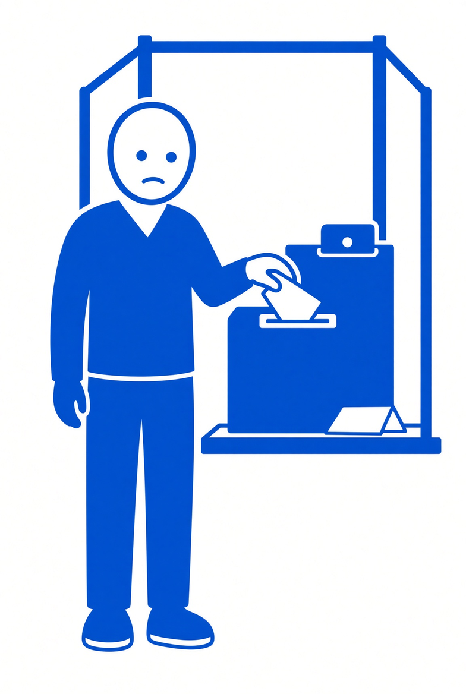
stemmen
to vote
regelmatigrang 1400Society & politicsgetekend
- Scene
- one adult stands in a polling booth and slips a folded paper into a slot on the top of a plain box that has a small closed lid; the fingers are still on the paper, and a folded card lies on the shelf beside the box. No letters are on the paper or the card.
- Must read
- a folded paper slipping into the slot of a closed box.
- Avoid
- a note pushed across a shop counter (betalen); a raised hand with fingers apart (spreken); a hand in a raised fist (kunnen); a ballot box already full with the paper gone.
- Alt text
- Iemand schuift een dichtgevouwen papiertje in de gleuf van een houten kistje.
- Example
- Vandaag mogen wij stemmen voor een nieuwe gemeenteraad.
Today we may vote for a new municipal council.
stemmen.png · rang 1400 · B1 regelmatig · lexicon woorden.tsv

testen
to test
regelmatigrang 1421Education & learninggetekend
- Scene
- one adult in a white coat stands at a workbench and holds a bicycle lamp pointed straight at a light meter, the needle of the meter already near the top of its scale; the meter is a blank dial with tick marks only and no text, letters or numbers on it; a bright plain cone shows between lamp and meter, drawn as a white-filled cone with a cobalt outline, the same cobalt as everything else; two loose wires lie on the bench.
- Must read
- a lamp pointed at a meter whose needle has swung up.
- Avoid
- a pencil ticking lines on a list over stacked crates (controleren); a person with an eye to a microscope (onderzoeken); a sheet held up to a second person (tonen); a clipboard with letters; a battery in a tester.
- Alt text
- Iemand in een witte jas richt een fietslamp op een meter; de naald staat hoog.
- Example
- Wij testen het nieuwe programma vandaag.
We are testing the new programme today.
testen.png · rang 1421 · B1 regelmatig · lexicon woorden.tsv

lossen
to unload
regelmatigrang 1439Transport & travelgetekend
- Scene
- one adult stands on the ground at the open back of a small lorry and lifts a closed cardboard box down off the empty lorry bed with both hands, the box clear of the bed and in the air, not set down; a neat stack of boxes already stands on the ground behind the adult, away from the lorry, and the lorry bed itself is empty; a hand truck leans against the bumper. Use exactly the same single flat cobalt as every other card, with no darker navy and no ground shadow ellipses or shading; both hands visibly grip the box's two sides, with the box in the air above the bed. Both hands are clearly visible, one on the left side and one on the right side of the box; the box is held directly over the empty lorry bed with the arms stretched toward the bed; keep every element at least 10% from the edges, with the stack of boxes smaller and moved in; one single flat ink tone only. The man's two hands grip the left and right sides of one box held in front of his chest; the box is in the air, outside the lorry, level with the empty bed; the lorry's cargo area is drawn as an empty outline with no boxes inside; the stack of boxes stands behind him.
- Must read
- a box lifted clear of a lorry, clear of the ground, above a row of boxes.
- Avoid
- a box held out towards a second person at the van's back (leveren); one adult alone with a box pressed to the chest (houden); a man pushing a broom across a floor (vegen); a fork-lift truck; a stack of boxes with a tick list.
- Alt text
- Iemand tilt bij de open vrachtwagen een doos omhoog; op de grond staan al andere dozen.
- Example
- De chauffeur lost de dozen bij de winkel.
The driver unloads the boxes at the shop.
lossen.png · rang 1439 · B1 regelmatig · lexicon woorden.tsv
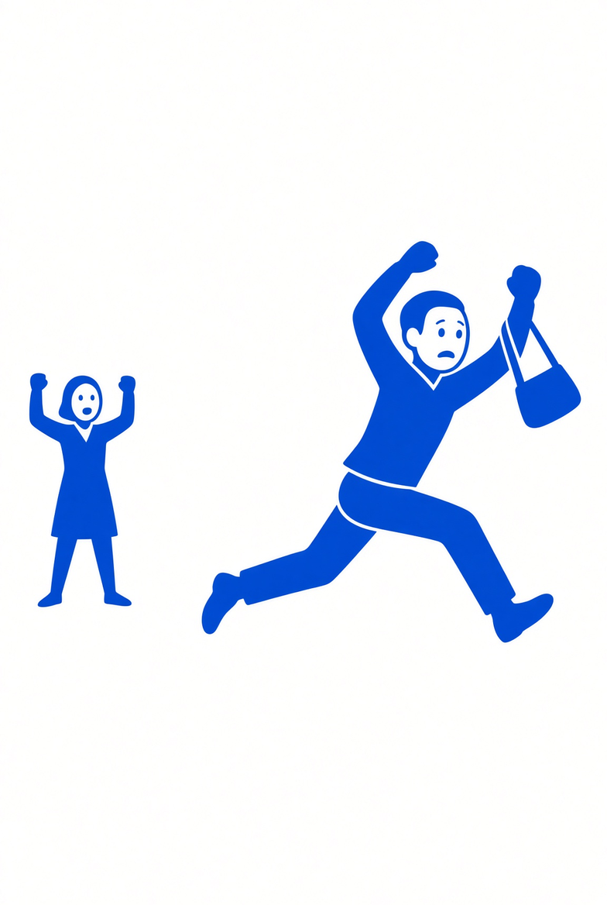
vluchten
to flee
regelmatigrang 1448Movement & positiongetekend
- Scene
- one adult runs at full stretch from left to right, both feet off the ground, arms high, the head turned back over one shoulder, a small bag clutched in one hand; far behind at the left edge stand a second adult with both fists raised.
- Must read
- one adult running away with both feet off the ground, head turned back.
- Avoid
- an adult walking an ordinary stride past a chair (lopen); a person holding a bag against the chest with both hands (houden); a fistfight between two people (aanvallen); a lorry door being opened (lossen); a burning house or smoke.
- Alt text
- Iemand rent hard weg met losse voeten en kijkt over de schouder terug.
- Example
- De mensen vluchten voor het water.
The people are fleeing from the water.
vluchten.png · rang 1448 · B1 regelmatig · lexicon woorden.tsv
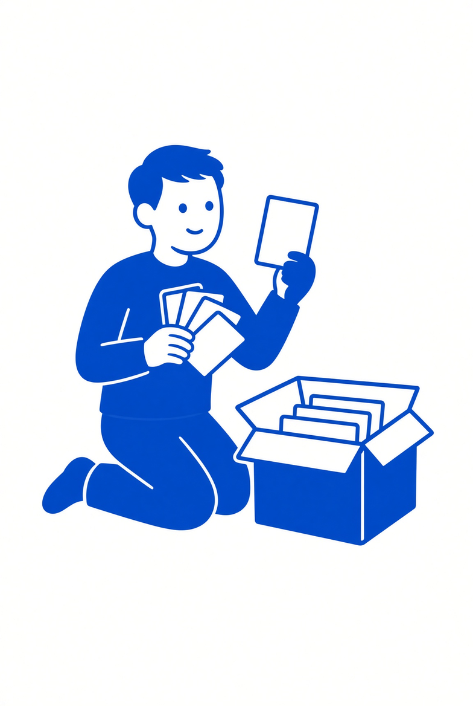
verzamelen
to collect
regelmatigrang 1495Movement & positiongetekend
- Scene
- one adult kneels on the floor beside an open box and holds up a small flat card, three of those cards already lying in the box; one hand sorts the rest of a fanned pile, eyes on a card, and the box holds nothing else.
- Must read
- a card held up above a box that already holds three more.
- Avoid
- one adult kneeling to reach under a sofa cushion (zoeken); coins pushed across a counter (betalen); a glass held down onto a table by one hand (zetten); a net and a butterfly; a full album with a row of photos.
- Alt text
- Iemand houdt een kaartje boven een open doos waarin er al drie liggen.
- Example
- Mijn broertje verzamelt oude munten.
My little brother collects old coins.
verzamelen.png · rang 1495 · B1 regelmatig · lexicon woorden.tsv
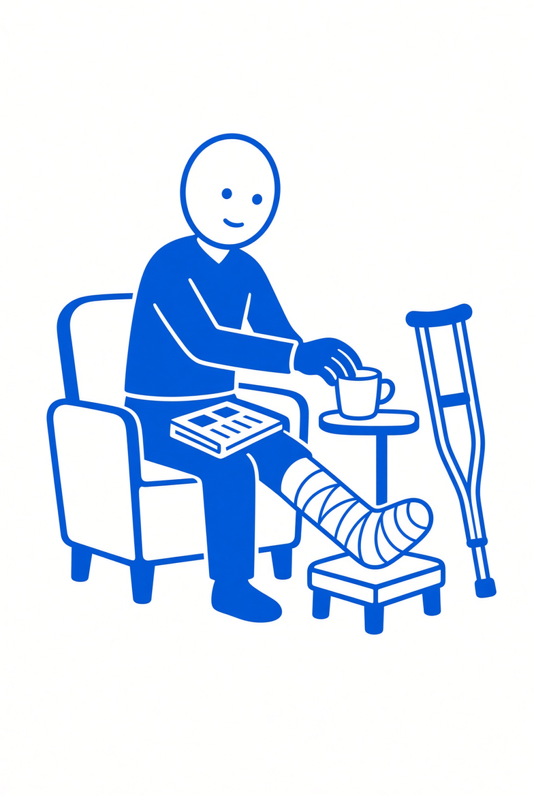
herstellen
to recover
regelmatigrang 1560Body & healthgetekend
- Scene
- one adult sits in a chair with one bandaged leg stretched out on a low footstool and a crutch propped beside the chair, reaching down with one hand to lift a cup from a small side table. A folded newspaper lies on the knee, and nothing else is in the room.
- Must read
- a bandaged leg up on a stool and a hand reaching for a cup.
- Avoid
- one adult at a workbench turning a screwdriver in a broken chair (repareren); a person bent over a table nailing planks (maken); a knee and both hands hitting the ground (zakken); a hospital bed; a medicine bottle.
- Alt text
- Iemand zit met een verband om het been op een voetenbankje, een kruk ernaast, en pakt een kop.
- Example
- Mijn vader herstelt snel na de operatie.
My father recovers quickly after the operation.
herstellen.png · rang 1560 · B1 regelmatig · lexicon woorden.tsv
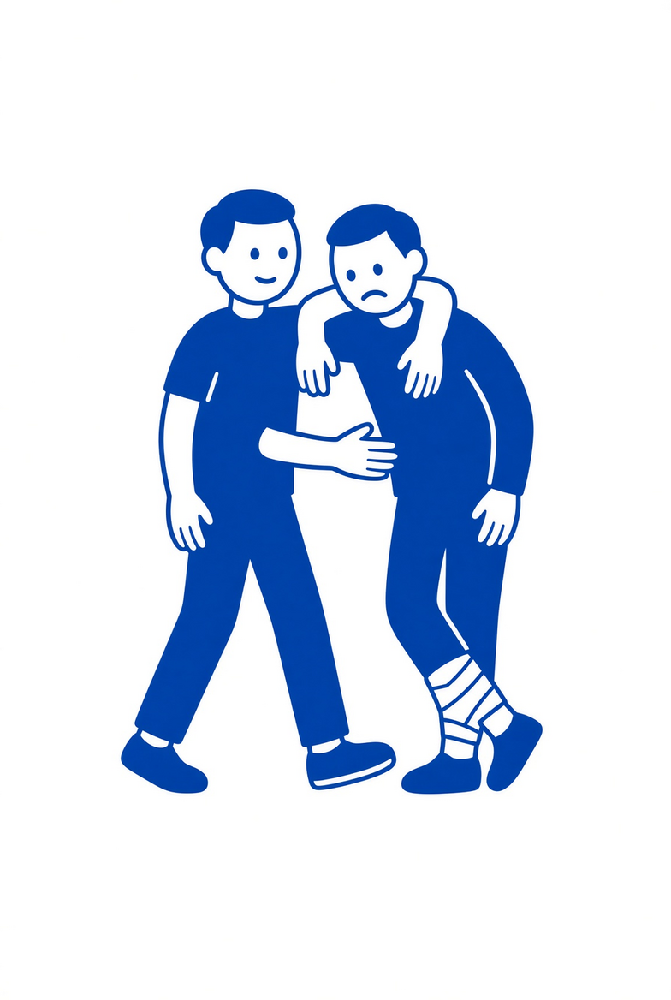
steunen
to support
regelmatigrang 1597Character & behaviourgetekend
- Scene
- one adult stands with one shoulder under the arm of a second adult who leans heavily with a bandaged ankle, one arm around the first's neck; the helper's other hand is flat on the leaning person's back, and both walk. The leaning person's near arm is draped across the back of the helper's neck and shoulders with the hand hanging over the far shoulder; the helper's near hand is flat on the leaning person's back and the helper's shoulder is under the leaning person's armpit. The leaning man's near arm lies across the back of the helper's neck and shoulders with the hand hanging over the far shoulder; the helper's near hand is flat on the leaner's back at waist height, seen from behind or beside; the helper's arm stays off the leaner's shoulders. The leaning man's arm lies across the back of the helper's neck and shoulders; nothing of the helper's arm goes over the leaner's shoulders or round his waist; the helper's hand is flat on the leaner's back with the fingers visible against the leaner's torso.
- Must read
- a leaning person's arm over another's shoulder, one hand flat on the back.
- Avoid
- one person lifting a box with both hands (lossen); two people with their hands clasped and a gold ring (trouwen); a hand laid on a table edge (raken); a walking stick alone; coins dropping into a hat (betalen).
- Alt text
- Iemand laat een manke ander op de schouder leunen, de arm om de nek en een hand op de rug.
- Example
- Wij steunen onze vriend na het ongeluk.
We support our friend after the accident.
steunen.png · rang 1597 · B1 regelmatig · lexicon woorden.tsv
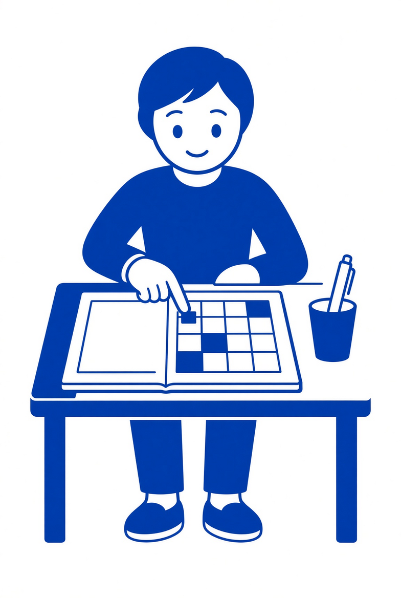
plannen
to plan
regelmatigrang 1600Timegetekend
- Scene
- one adult sits at a plain table with a big blank weekly planner lying open; one hand slides a small block with a finger across the page and a group of empty squares below is marked in dark ink. A pen stands upright in a holder, and no letters or digits appear. The grid squares are empty outlines, with a few solid filled squares as the marked ones and no crosses or letters; the planner and table are smaller, with at least 10% white margin on every side.
- Must read
- a finger sliding one block across a grid of marked empty squares.
- Avoid
- a phone at the ear over a calendar with one day circled (boeken); a hand turning the cover of a closed notebook (beginnen); a person walking away leaving keys on a table (vergeten); a note pushed across a counter (betalen).
- Alt text
- Iemand schuift met een vinger een blokje langs de vakjes van een open weekschema.
- Example
- Wij plannen een reis naar Italië.
We are planning a trip to Italy.
plannen.png · rang 1600 · B1 regelmatig · lexicon woorden.tsv
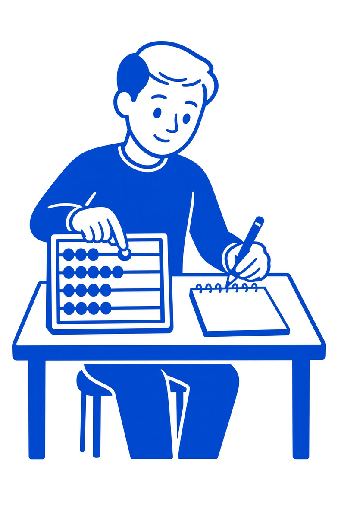
rekenen
to calculate
regelmatigrang 1624Quantity & measuregetekend
- Scene
- one adult sits at a plain desk with a wooden frame abacus in front of them, one finger pushing a single bead along its rod while the other hand holds a pencil over a blank pad; eyes on the beads. No digits on the pad, no screen, nothing else in the picture.
- Must read
- a finger pushing a bead along the rod of an abacus.
- Avoid
- a finger touching apples in a row one by one (tellen); a calculator with a display of numbers; a pen writing a long line on paper (schrijven); a coin purse and notes (betalen); any digit or sign.
- Alt text
- Iemand zit aan een bureau en schuift met een vinger een kraal langs de stang van een telraam.
- Example
- Ik kan goed rekenen.
I am good at arithmetic.
rekenen.png · rang 1624 · B1 regelmatig · lexicon woorden.tsv

keren
to turn (back)
regelmatigrang 1700Movement & positiongetekend
- Scene
- no person: one single row of bold shoe-shaped footprints leads straight up the page towards a closed gate and then bends sharply round in a tight U-turn and comes back down alongside itself; the footprints are thick and clear; the gate is a plain bold outline at the top. Nothing else.
- Must read
- footprints that go forward and then turn back on themselves.
- Avoid
- a person turning a round tap handle with both hands (draaien); a person walking away towards the horizon (lopen); two people turning in a circle (dansen); a person looking over a shoulder at a left-behind key (vergeten); a curved arrow.
- Alt text
- Voetafdrukken lopen naar een hek en draaien daar weer om.
- Example
- We moeten keren, we zijn te ver gereden.
We have to turn back, we have driven too far.
keren.png · rang 1700 · B1 regelmatig · lexicon woorden.tsv
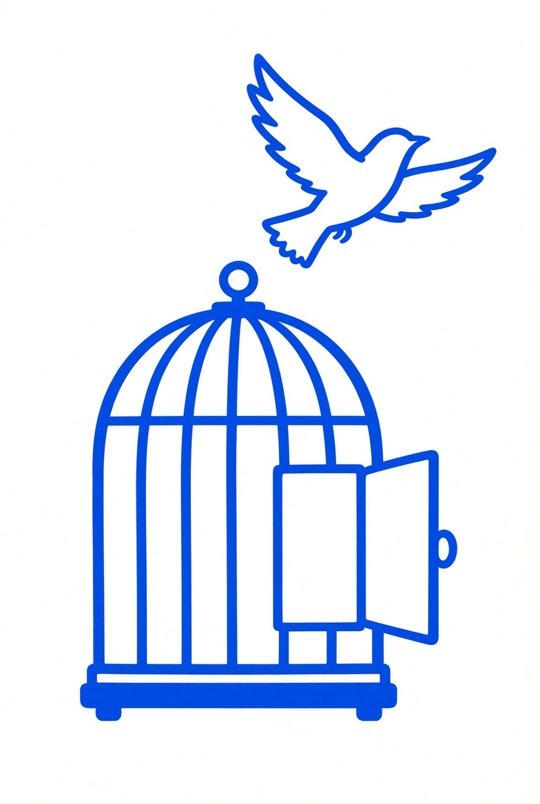
ontsnappen
to escape
regelmatigrang 1766Emotion & feelinggetekend
- Scene
- one bird flies up and out through a wide open cage door, the cage drawn as a plain bold-outlined cage with a few bars and the door swung open; the bird is already outside the door in the air with its wings spread. No person.
- Must read
- a bird flying out through an open cage door.
- Avoid
- a person climbing over a wall with a ladder (klimmen); a person running with nothing behind (rennen); an open cage door with a bird; a person unlocking a door with a key (openen); a person lying on a sofa with arms spread (ontspannen).
- Alt text
- Een vogel vliegt door de open deur van een kooi naar buiten.
- Example
- De gevangene probeert te ontsnappen.
The prisoner tries to escape.
ontsnappen.png · rang 1766 · B1 regelmatig · lexicon woorden.tsv

negeren
to ignore
regelmatigrang 1854Abstract & generalgetekend
- Scene
- two adults on a plain pavement: the one on the left lifts an arm in a wave and leans forward towards the other; the one on the right walks straight past with eyes fixed ahead, face blank, not turning the head. No other objects.
- Must read
- one person waving and the other walking past without turning the head.
- Avoid
- two people shaking hands (groeten); two people waving at each other (zwaaien); one person with arms folded and a frown (boos); one person with eyes on a phone; one person running away.
- Alt text
- Iemand zwaait naar een ander die recht vooruit kijkt en zonder het hoofd te draaien langsloopt.
- Example
- Hij probeert zijn buurman te negeren.
He tries to ignore his neighbour.
negeren.png · rang 1854 · B1 regelmatig · lexicon woorden.tsv
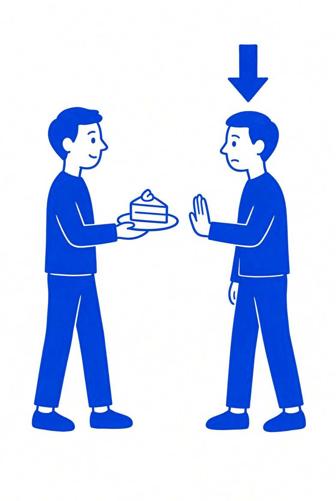
weigeren
to refuse
regelmatigrang 2323Abstract & generalgetekend
- Scene
- two adults stand facing each other an arm's length apart. The one on the left holds out a plate with a slice of cake; the one on the right holds one flat open palm up and forward to keep it away, chin turned slightly aside, eyes on the plate. Above the head of the person refusing (palm up) floats one bold solid cobalt arrow pointing straight down at the head, with a clear white gap between arrow tip and hair; it marks who performs the verb. The other person has no arrow. No text.
- Must read
- a flat palm held up against an offered plate while the head turns away.
- Avoid
- a plate handed over and taken in both hands (geven); a person eating the cake (eten); a hand raised in a wave (zwaaien); only a head shaking with no plate (nee zeggen); a crossed-out symbol.
- Alt text
- Twee mensen staan tegenover elkaar; de een biedt een bord met taart aan, de ander houdt een open hand ervoor.
- Example
- De hond weigert te eten.
The dog refuses to eat.
weigeren.png · rang 2323 · B1 regelmatig · lexicon woorden.tsv
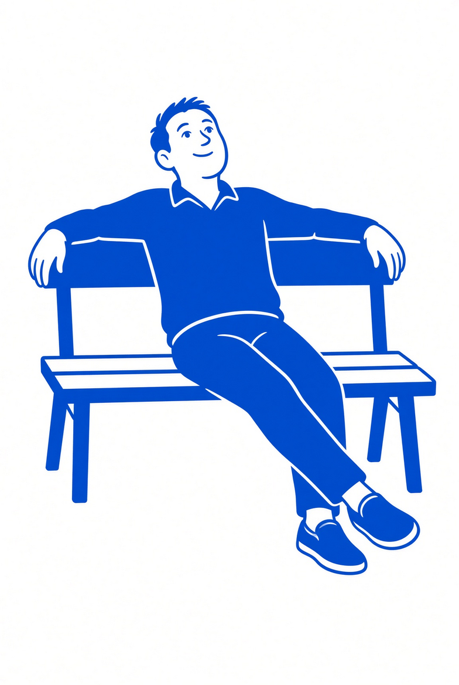
rusten
to rest
regelmatigrang 2375Abstract & generalgetekend
- Scene
- one adult sits leaning back on a plain park bench, arms spread along the backrest and legs stretched out and crossed at the ankle, eyes open and looking at the sky, shoulders loose. Nothing else in the picture.
- Must read
- a person leaning fully back on a bench with loose shoulders and stretched legs.
- Avoid
- a person lying in bed with closed eyes (slapen); a person sitting upright at a table (zitten); a person on a cushion with a book (lezen); a cup or a phone in the hand; zzz marks.
- Alt text
- Iemand zit achterover op een bankje met de armen langs de rugleuning en de benen uitgestrekt.
- Example
- Na het werk wil ik even rusten.
After work I want to rest for a bit.
rusten.png · rang 2375 · B1 regelmatig · lexicon woorden.tsv
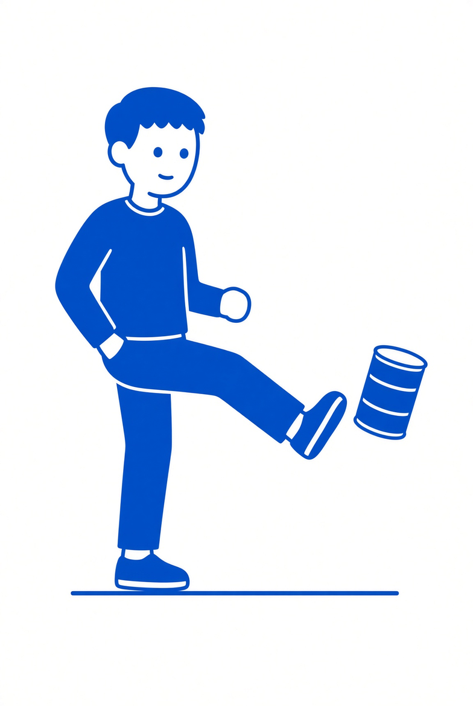
trappen
to kick (a can, a ball)
regelmatigrang 2382Transport & travelgetekend
- Scene
- one adult stands on the left leg in an empty yard, the right leg swung forward at the moment of impact, the foot just meeting a tin can that is lifting off the ground at the right. The adult looks at the can. No goal and no ball. There are no motion arcs near the can and no marks on the ground; the ground is one plain straight line, or none.
- Must read
- a swung foot meeting a can that is leaving the ground.
- Avoid
- a ball shot into a goal (scoren); a leg lifted for a step, with the can untouched (lopen); a foot on a bicycle pedal (fietsen); a fist striking the can (slaan); speed lines or dust puffs.
- Alt text
- Iemand staat op een been en schopt met de andere voet tegen een blikje dat van de grond komt.
- Example
- Hij trapt een leeg blikje van de stoep.
He kicks an empty can off the pavement.
trappen.png · rang 2382 · B1 regelmatig · lexicon woorden.tsv
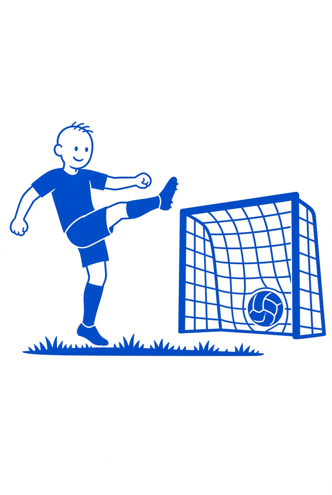
scoren
to score
regelmatigrang 2411Sport & gamesgetekend
- Scene
- one adult follows through after a shot on a small grass pitch, standing on the left leg with the right leg still swinging up; a football sits in the back of a goal net at the right, the net bulging behind it, and the goalkeeper is not drawn. Draw the goal as an open frame with several net lines (bold outline only, no fill), the ball resting at the back against the net, and a short grass baseline.
- Must read
- a football lying in the net of a goal, with the kicker still in follow-through.
- Avoid
- a foot hitting a tin can in a yard (trappen); a person dribbling a ball down the pitch (voetballen); a player with raised arms and a trophy (winnen); a ball flying wide of the goal; a scoreboard.
- Alt text
- Iemand zwaait na een schot het been door; de bal ligt achter in het net van een doel.
- Example
- Onze spits scoort in de laatste minuut.
Our striker scores in the last minute.
scoren.png · rang 2411 · B1 regelmatig · lexicon woorden.tsv

filmen
to film
regelmatigrang 2433Arts & mediagetekend
- Scene
- one adult stands side-on, full figure head to feet, holding a boxy video camera up to one eye with both hands, the lens pointing straight ahead; nothing else in the picture.
- Must read
- an adult with a video camera held to one eye.
- Avoid
- a phone held up for a still picture (fotograferen); a person watching a television (kijken); a spotlight and a clapper board; a flash; a tripod with nobody behind it.
- Alt text
- Iemand houdt met beide handen een videocamera voor het oog.
- Example
- Mijn zus filmt de kinderen in de tuin.
My sister films the children in the garden.
filmen.png · rang 2433 · B1 regelmatig · lexicon woorden.tsv

kloppen
to knock, to beat
regelmatigrang 2491Abstract & generalgetekend
- Scene
- one adult stands facing a closed plain door and knocks on it with the knuckles of a bent hand held at head height, the other arm hanging at the side; the door has a handle and no window, no sign, and no bell. Only the person and the door are in the picture.
- Must read
- knuckles meeting a closed door.
- Avoid
- a hand pressing a doorbell (bellen); a hand turning the handle (openen); a fist hitting a person (slaan); a mallet on a nail (hameren); sound marks.
- Alt text
- Iemand staat voor een dichte deur en tikt met de knokkels van een gebogen hand tegen het hout.
- Example
- Iemand klopt zachtjes op de deur.
Someone knocks softly on the door.
kloppen.png · rang 2491 · B1 regelmatig · lexicon woorden.tsv
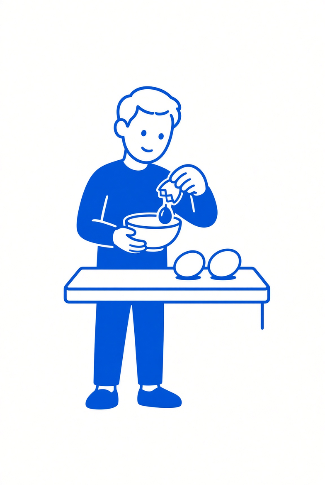
kloppen (eieren)
to beat (eggs)
regelmatigrang 2491Food & drinkgetekend
- Scene
- One adult stands at a kitchen counter, holding a small bowl steady with the left hand and cracking an egg against the rim with the right; the shell is split and the yolk is dropping into the bowl. Two whole eggs lie on the counter. Nothing else in the picture.
- Must read
- an egg split at the rim of a bowl, the yolk dropping in.
- Avoid
- knuckles on a closed door (kloppen); a fork stirring eggs in a bowl (mengen); a hand turning a knife through a carrot (snijden); a hand pressing a doorbell (bellen); a pan of eggs already set on the hob (bakken).
- Alt text
- Een volwassene breekt een ei boven een kom en laat de dooier in de kom vallen.
- Example
- Ik klop twee eieren in een kom.
I beat two eggs in a bowl.
kloppen-eieren.png · rang 2491 · B1 regelmatig · lexicon woorden.tsv
geen beeld
lichten
to emit light
regelmatigrang 2522House & home
- Scene
- a tall tower stands on a rocky point at the sea, with a lamp at the top and straight lines of light spreading out to both sides over the water; the sea is drawn with a few small wave lines and no boat or person is in the frame.
- Must read
- straight lines of light spreading from a lamp at the top of a tower.
- Avoid
- a gem with star lines around it (schitteren); a candle with a flame (branden); a person waving at the sea (zwaaien); the sun with rays in the sky (stralen).
- Alt text
- Op een rots staat een vuurtoren met een lamp bovenin; rechte lijnen strekken zich naar twee kanten over zee.
- Example
- De lampen van de haven lichten in het donker.
The lights of the harbour shine in the dark.
lichten.png · rang 2522 · B1 regelmatig · lexicon woorden.tsv
geen beeld
lichten (anker)
to lift (an anchor), to weigh
regelmatigrang 2522House & home
- Scene
- One sailor stands at the bow of a small boat and hauls up an anchor chain hand over hand, the anchor just clear of the water with drops falling from it; the sea is calm and the boat is empty apart from the sailor.
- Must read
- an anchor just lifted clear of the water on a chain.
- Avoid
- a person throwing a rope (gooien); a person pulling a net out of the water (vissen); a person rowing with two oars (roeien); a person lifting a box (tillen).
- Alt text
- Een zeeman staat voorop in een boot en haalt een ankerketting op; het anker hangt net boven het water.
- Example
- De kapitein laat de matrozen het anker lichten.
The captain has the sailors weigh anchor.
lichten-anker.png · rang 2522 · B1 regelmatig · lexicon woorden.tsv
geen beeld
waarderen
to appreciate
regelmatigrang 2538Abstract & general
- Scene
- one adult stands facing a second adult who is holding out a freshly baked pie on a plate; the first adult has one thumb raised, the other hand pressed on the chest, the head tilted and a wide smile.
- Must read
- a raised thumb and a hand on the chest in front of someone holding out a pie.
- Avoid
- a person eating the pie with a fork (eten); a person pushing the plate away (weigeren); a person clapping at a stage (klappen); a person giving the pie as a gift (geven); a person baking in a kitchen (bakken).
- Alt text
- Iemand steekt een duim omhoog en legt een hand op de borst voor iemand die een taart voorhoudt.
- Example
- Ik waardeer je hulp heel erg.
I really appreciate your help.
waarderen.png · rang 2538 · B1 regelmatig · lexicon woorden.tsv
geen beeld
eindigen
to end
regelmatigrang 2593Time
- Scene
- one runner leans forward with the chest pressed into a ribbon stretched between two posts, the ribbon broken at the middle, arms thrown up behind; no other runner. The track is a plain flat lane, the crowd is absent, and the ribbon stretches tight across the whole frame.
- Must read
- a runner's chest breaking a ribbon stretched between two posts.
- Avoid
- a runner crouched at the start with hands on the ground (beginnen); several runners racing in a pack (rennen); a runner stopped by the road to rest (rusten); a person holding up a cup (winnen).
- Alt text
- Een hardloper raakt met de borst een lint dat tussen twee palen hangt en steekt de armen omhoog.
- Example
- De hardloopwedstrijd eindigt om vijf uur.
The race ends at five o'clock.
eindigen.png · rang 2593 · B1 regelmatig · lexicon woorden.tsv
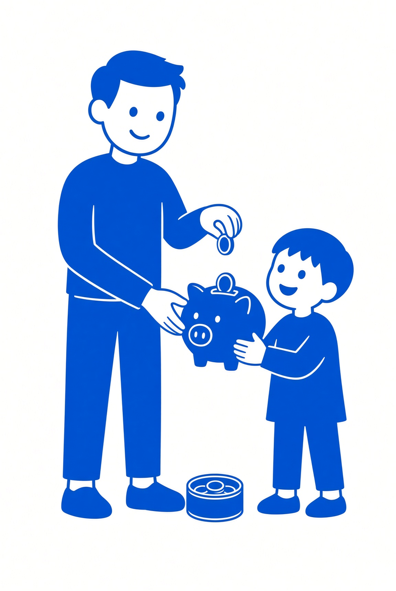
sparen
to save (money)
regelmatigrang 2612Money & tradegetekend
- Scene
- one adult drops a single coin into the slot of a ceramic piggy bank held steady in the other hand, the coin standing in mid-air a finger’s width above the slot; a small tin of coins stands closed beside it and no shop counter is in the frame.
- Must read
- one coin halfway down into the slot of a piggy bank.
- Avoid
- coins pushed across a counter (betalen); a coin held up close to one eye; a piggy bank smashed open; a purse held tight to the chest (houden); banknotes fanned out like a prize.
- Alt text
- Iemand laat een muntje net boven de gleuf van een aardewerken varkentje zakken.
- Example
- Ik spaar elke maand geld voor een fiets.
I save money for a bike every month.
sparen.png · rang 2612 · B1 regelmatig · lexicon woorden.tsv
geen beeld
behalen
to achieve, to win
regelmatigrang 2627Abstract & general
- Scene
- one adult in a long gown stands smiling and holds a rolled-up certificate tied with a ribbon high in one hand; a second adult beside them claps, and a plain curtain hangs behind them with no crowd and no cups in the frame.
- Must read
- a rolled certificate with a ribbon held high in one hand.
- Avoid
- a cup held up as a prize (winnen); a person reading the roll (lezen); a parcel handed over (geven); a medal hung round a runner at a finish line (winnen).
- Alt text
- Iemand in een lange toga houdt lachend een opgerolde oorkonde met lint omhoog; naast hem klapt iemand.
- Example
- Hij behaalt zijn diploma in juni.
He gets his diploma in June.
behalen.png · rang 2627 · B1 regelmatig · lexicon woorden.tsv
geen beeld
beseffen
to realize
regelmatigrang 2629Thought & knowledge
- Scene
- one adult stands rigid with the flat palm of one hand struck against the forehead, the eyes wide and the mouth a round O, the other arm hanging straight down.
- Must read
- a flat palm slapped on the forehead with wide eyes and a round mouth.
- Avoid
- a hand scratching the head (denken); two hands on both cheeks with an open mouth in fright (schrikken); a person nodding with a smile (geloven); a person rubbing the eyes (wrijven); a lightbulb.
- Alt text
- Iemand slaat de platte hand tegen het voorhoofd met grote ogen en een ronde mond.
- Example
- Ik besef nu pas dat het al laat is.
I only now realize that it is late.
beseffen.png · rang 2629 · B1 regelmatig · lexicon woorden.tsv
geen beeld
promoten
to promote
regelmatigrang 2648Abstract & general
- Scene
- one adult stands on a small box, holding a large megaphone to the mouth with one hand and pointing the other at a poster stand with a plain picture of a shoe on it; the head is lifted and the mouth is open.
- Must read
- a megaphone at an adult's mouth next to a poster of a product.
- Avoid
- a person writing a letter (schrijven); a person selling a shoe over a counter (verkopen); a person looking at the poster (bekijken); a person shouting in anger (schreeuwen); a person singing into a microphone (zingen).
- Alt text
- Iemand staat op een kistje met een megafoon aan de mond naast een affiche met een schoen.
- Example
- Ze promoot haar nieuwe boek op televisie.
She promotes her new book on television.
promoten.png · rang 2648 · B1 regelmatig · lexicon woorden.tsv
geen beeld
ontkennen
to deny
regelmatigrang 2681Abstract & general
- Scene
- One adult holds both palms out toward the viewer in front of the chest with the head turned to one side and the mouth set firm; a second adult points a finger at the first.
- Must read
- Both palms held out and the head turned aside while another person points.
- Avoid
- a hand pushing a plate away (weigeren); a hand raised to stop traffic (stoppen); a hand waving (zwaaien); a person pointing alone (beschuldigen).
- Alt text
- Iemand houdt beide handpalmen naar voren en draait het hoofd weg terwijl een ander met een vinger wijst.
- Example
- Hij ontkent dat hij het glas gebroken heeft.
He denies having broken the glass.
ontkennen.png · rang 2681 · B1 regelmatig · lexicon woorden.tsv
geen beeld
verzorgen
to take care of
regelmatigrang 2691Body & health
- Scene
- A nurse in a plain tunic stands beside a bed, one hand tucking the blanket around a patient's shoulders and the other holding a cup near the patient's mouth. The patient lies propped on a pillow with a calm face. A small bedside table stands nearby, and nothing else is in the frame.
- Must read
- a hand tucking a blanket around a patient while the other holds a cup to the mouth.
- Avoid
- a doctor listening to a chest (onderzoeken); a person lifting a patient out of bed (tillen); a person washing a child in a tub (wassen); a person sleeping alone in a bed (slapen).
- Alt text
- Een verpleegster stopt een deken in rond een liggende patient en houdt een beker bij de mond.
- Example
- De verpleegster verzorgt de zieke man.
The nurse takes care of the sick man.
verzorgen.png · rang 2691 · B1 regelmatig · lexicon woorden.tsv

zeilen
to sail (with a sail)
regelmatigrang 2694Transport & travelgetekend
- Scene
- one adult stands at the tiller of a small sailing boat and holds the mainsheet taut with the other hand; the wind has the big sail curved out to one side and the hull is heeled over, spray at the bow. The boat sits on open water, not in a harbour.
- Must read
- a sail filled by the wind and one hand on the tiller.
- Avoid
- an adult rowing with both oars (roeien); a motorboat with no sail; a ship’s wheel turned by two hands on a big deck; a person standing on a dock with a suitcase (reizen); a flag on a pole (zwaaien).
- Alt text
- Een volwassene staat aan het roer van een bootje; de wind bolt het grote doek aan de mast.
- Example
- In de zomer gaan wij zeilen op het IJsselmeer.
In summer we go sailing on the IJsselmeer.
zeilen.png · rang 2694 · B1 regelmatig · lexicon woorden.tsv
geen beeld
beoordelen
to judge
regelmatigrang 2700Law & conflict
- Scene
- one adult sits behind a plain table with a fist under the chin and the head tilted, looking at a framed picture that a second adult holds up while standing and waiting with a tight smile; the picture shows only a simple tree.
- Must read
- a seated adult with chin on fist and head tilted, studying a picture held up by a waiting adult.
- Avoid
- an adult leaning close to a picture on a wall (bekijken); an adult holding up a sheet to another adult (tonen); two people shaking hands (begroeten); a person writing in a notebook (schrijven); numbers or stars on the picture.
- Alt text
- Iemand zit met de vuist onder de kin en kijkt schuin naar een schilderij dat een ander omhooghoudt.
- Example
- De leraar beoordeelt het werk van de leerlingen.
The teacher assesses the pupils' work.
beoordelen.png · rang 2700 · B1 regelmatig · lexicon woorden.tsv
geen beeld
beëindigen
to terminate
regelmatigrang 2808Abstract & general
- Scene
- one adult stands at a wall telephone and sets the handset back onto its cradle with one hand, the cord hanging in a loop, mouth closed; the other arm hangs relaxed at the side and the room behind is plain and empty.
- Must read
- a handset being set back onto its cradle.
- Avoid
- a handset held to the ear while talking (bellen); a phone thrown across a room (gooien); a person leaving through a door (vertrekken); a line crossed out of a list (schrappen).
- Alt text
- Iemand legt de hoorn van een telefoon aan de muur terug op de haak.
- Example
- Zij beëindigt het gesprek met een groet.
She ends the call with a greeting.
beeindigen.png · rang 2808 · B1 regelmatig · lexicon woorden.tsv
geen beeld
identificeren
to identify
regelmatigrang 2866Abstract & general
- Scene
- one police officer holds up a small card in one hand and looks from the card to the face of a man who stands with arms hanging; the man's face is calm and plain, and neither holds a notepad, a camera or anything else.
- Must read
- an officer's eyes going from a small card to a man's face.
- Avoid
- a man holding up a card to show it (tonen); an officer taking a photo (fotograferen); an officer writing on a pad (schrijven); an officer asking a question with an open mouth (vragen).
- Alt text
- Een agent houdt een kaartje vast en kijkt van het kaartje naar het gezicht van een man.
- Example
- De politie identificeert de man met zijn paspoort.
The police identify the man by his passport.
identificeren.png · rang 2866 · B1 regelmatig · lexicon woorden.tsv
geen beeld
combineren
to combine
regelmatigrang 2910Abstract & general
- Scene
- One adult at a kitchen counter holds a jug in each hand and pours both at once into a single bowl, the two streams meeting in the middle. The bowl sits on the counter between the jugs, and the adult looks down at it. Nothing else is in the frame.
- Must read
- Two jugs pouring at the same moment into one bowl.
- Avoid
- a spoon stirring a bowl (mengen); one jug pouring into a glass (gieten); a person carrying a shopping bag (kopen); a tray in an oven (bakken).
- Alt text
- Iemand houdt in elke hand een kan en laat beide tegelijk in een schaal lopen.
- Example
- Je kunt rijst met groente combineren.
You can combine rice with vegetables.
combineren.png · rang 2910 · B1 regelmatig · lexicon woorden.tsv
geen beeld
publiceren
to publish
regelmatigrang 2931Abstract & general
- Scene
- one adult stands beside a plain table holding one closed book up at chest height in both hands with a proud smile; on the table beside stands a tall stack of identical closed books.
- Must read
- a tall stack of identical books and a person proudly holding up one copy.
- Avoid
- a person writing at a desk with a pen (schrijven); a person reading an open book (lezen); a person handing a book across a counter (geven); a person showing a sheet to another (tonen).
- Alt text
- Iemand houdt trots één boek omhoog naast een hoge stapel gelijke boeken op een tafel.
- Example
- Zij publiceert volgend jaar haar eerste boek.
She is publishing her first book next year.
publiceren.png · rang 2931 · B1 regelmatig · lexicon woorden.tsv
geen beeld
verlengen
to extend
regelmatigrang 2940Abstract & general
- Scene
- one adult stands holding the knotted ends of two ropes together between both hands at chest height, so that the joined rope hangs down in one long loop below the hands that is clearly longer than either piece.
- Must read
- the ends of two ropes tied together and held between two hands.
- Avoid
- a person tying a single knot in one rope (knopen); a person cutting a rope with scissors (knippen); a person coiling a rope on the floor (oprollen); two teams pulling a rope (trekken); a tape measure.
- Alt text
- Iemand houdt de knoop tussen twee touwen vast, zodat het touw in één lange lus omlaag hangt.
- Example
- Ze verlengt het touw met een tweede stuk.
She extends the rope with a second piece.
verlengen.png · rang 2940 · B1 regelmatig · lexicon woorden.tsv
geen beeld
herhalen
to repeat
regelmatigrang 2963Abstract & general
- Scene
- One teacher stands with one hand raised palm up beside the mouth, which is a round open shape; a pupil at a desk copies the same round open mouth. The desk stands near a bare wall board with nothing on it.
- Must read
- Two mouths in the same round open shape, the teacher's palm turned up.
- Avoid
- two people talking (praten); a pupil singing (zingen); a pupil reading a page (lezen); a pupil studying a book (leren).
- Alt text
- Een leraar houdt een hand met de palm omhoog terwijl een leerling met dezelfde open mond meebeweegt.
- Example
- Kunt u dat nog een keer herhalen?
Can you repeat that once more?
herhalen.png · rang 2963 · B1 regelmatig · lexicon woorden.tsv
geen beeld
toetsen
to assess
regelmatigrang 2982Education & learning
- Scene
- one adult sits at a plain desk bent over a sheet with a pen in the hand and the other hand on the forehead; a second adult stands at the end of the desk with folded arms and watches.
- Must read
- a seated person bent over a sheet with a pen while a standing adult with folded arms watches.
- Avoid
- a person writing a letter at a desk (schrijven); a person reading a book (lezen); a teacher drawing on a board (uitleggen); a pupil raising a hand (vragen).
- Alt text
- Iemand zit gebogen over een vel papier met een pen terwijl een ander met over elkaar geslagen armen toekijkt.
- Example
- De leraar toetst vandaag de kennis van de klas.
The teacher is testing the class's knowledge today.
toetsen.png · rang 2982 · B1 regelmatig · lexicon woorden.tsv
geen beeld
posten
to post
regelmatigrang 3020Communication & language
- Scene
- one adult holds a phone upright in both hands at chest height; on the screen sits a framed small picture of a tree, and one thumb presses the lower edge of the screen, the eyes on the picture.
- Must read
- a thumb pressing the bottom of a phone screen that holds a framed picture.
- Avoid
- a person aiming a phone at a tree to take a photo (fotograferen); a person sliding a parcel into a postbox (versturen); a printer pushing out a sheet (printen); a person holding a phone to the ear (bellen); an arrow symbol.
- Alt text
- Iemand houdt een telefoon vast met op het scherm een kader met een boompje; een duim drukt onderaan.
- Example
- Ik post een foto van mijn vakantie.
I post a photo of my holiday.
posten.png · rang 3020 · B1 regelmatig · lexicon woorden.tsv
geen beeld
vertalen
to translate
regelmatigrang 3036Communication & language
- Scene
- one adult sits at a desk with a thick open dictionary on the left and a sheet on the right that is half filled with lines of scribbles; one finger rests on a line in the dictionary and the pen is in the other hand.
- Must read
- a finger on a line in an open dictionary and a half-filled sheet beside it.
- Avoid
- a person writing a letter with no book (schrijven); a person reading a book (lezen); a person looking up one word in a book (opzoeken); a person copying a page at a machine (kopieren).
- Alt text
- Iemand zit aan een bureau met een dik opengeslagen boek links en een half gevuld vel rechts.
- Example
- Ik vertaal de brief naar het Engels.
I translate the letter into English.
vertalen.png · rang 3036 · B1 regelmatig · lexicon woorden.tsv
geen beeld
verzekeren
to insure
regelmatigrang 3038Abstract & general
- Scene
- one adult stands beside a small car with one hand on the roof and the other holding a single sheet of paper out to a second adult behind a desk, who stamps it; a large umbrella-shaped shield is drawn hovering over the car.
- Must read
- an umbrella-shaped shield above a car with a stamped sheet passed across a desk.
- Avoid
- a person washing a car (wassen); a person fixing a dented car (herstellen); a person buying a car at a dealer (kopen); a person driving away (rijden); a crashed car with a tow truck (slepen).
- Alt text
- Een volwassene houdt een vel papier uit naar een bureau waar het gestempeld wordt; boven de auto zweeft een paraplu.
- Example
- Ik wil mijn auto goed verzekeren.
I want to insure my car properly.
verzekeren.png · rang 3038 · B1 regelmatig · lexicon woorden.tsv
geen beeld
verzekeren (gerust)
to assure
regelmatigrang 3038Abstract & general
- Scene
- one adult squeezes the shoulder of a friend with one hand and nods firmly with the mouth closed; the friend's shoulders are just dropping and both of their hands open, with an easing smile.
- Must read
- a hand squeezing a friend's shoulder while the friend's shoulders drop and relax.
- Avoid
- two people shaking hands on a deal (beloven); a person hugging a friend (omhelzen); a person giving a gift (geven); a person pointing a finger at a friend (wijzen); a person crying on a friend (troosten).
- Alt text
- Iemand knijpt een vriend zachtjes in de schouder en knikt; de vriend laat zijn schouders zakken.
- Example
- Ik verzeker je dat alles goed komt.
I assure you that everything will be fine.
verzekeren-gerust.png · rang 3038 · B1 regelmatig · lexicon woorden.tsv
geen beeld
vrezen
to fear
regelmatigrang 3039Emotion & feeling
- Scene
- One adult stands with the back against a wall, shoulders drawn up and both arms clutched across the chest, eyes wide on a window where a tree bends and a jagged line cuts the sky.
- Must read
- Wide eyes and arms clutched over the chest, looking at a storm through a window.
- Avoid
- a person crouching behind a chair (verstoppen); a person shouting with an open mouth (schreeuwen); a person shivering under a blanket (rillen); a person covering the eyes (kijken).
- Alt text
- Iemand staat met de rug tegen de muur, armen over de borst, grote ogen naar een raam.
- Example
- Veel mensen vrezen een lange winter.
Many people fear a long winter.
vrezen.png · rang 3039 · B1 regelmatig · lexicon woorden.tsv
geen beeld
bereiden
to prepare
regelmatigrang 3047Abstract & general
- Scene
- one adult stands at a kitchen counter with a board of sliced vegetables in front, a spoon in one hand stirring a steaming pot on the stove beside it. A bowl of chopped herbs stands by, and no table or eating person is shown.
- Must read
- a board of sliced vegetables next to a steaming pot.
- Avoid
- a person eating at a table (eten); a person boiling a single egg (koken); a person carrying a tray to a table (serveren); a person washing dishes (afwassen).
- Alt text
- Iemand staat aan het aanrecht met een bord gesneden groente naast een pan met stoom.
- Example
- Hij bereidt het avondeten.
He prepares dinner.
bereiden.png · rang 3047 · B1 regelmatig · lexicon woorden.tsv
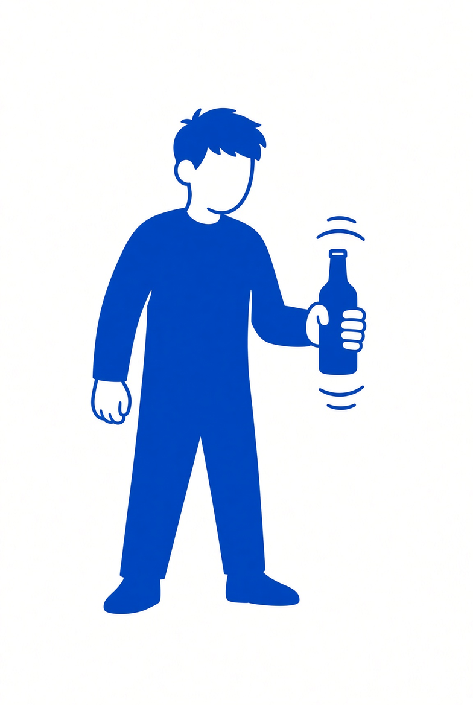
schudden
to shake
regelmatigrang 3070Movement & positiongetekend
- Scene
- one adult stands and holds a closed bottle upright in one fist at chest height, moving it hard up and down; two short curved movement marks sit above and below the bottle, and the other hand hangs free.
- Must read
- a closed bottle in a fist with movement marks above and below it.
- Avoid
- a bottle tipped to pour into a glass (gieten); a bottle at the lips (drinken); two people clasping hands (begroeten); a hand waving in the air (zwaaien).
- Alt text
- Iemand houdt een dichte fles stevig vast; korte boogjes boven en onder de fles tonen een beweging op en neer.
- Example
- Schud de fles voor gebruik goed.
Shake the bottle well before use.
schudden.png · rang 3070 · B1 regelmatig · lexicon woorden.tsv
geen beeld
stranden
to run aground
regelmatigrang 3072Movement & position
- Scene
- a small rowing boat lies tilted on its side on dry sand with a few wave lines a short way behind it; one oar lies beside the boat and no person is in sight.
- Must read
- a boat tipped on the sand with the waves just behind it.
- Avoid
- a boat sailing on open water (zeilen); a boat with only its top above the waves (zinken); a person pulling a boat onto the sand (trekken); a boat tied to a pier (afmeren).
- Alt text
- Een bootje ligt schuin op het zand met de golven vlak erachter en een roeiriem ernaast.
- Example
- De boot strandt op een zandbank.
The boat runs aground on a sandbank.
stranden.png · rang 3072 · B1 regelmatig · lexicon woorden.tsv
geen beeld
wijzigen
to amend
regelmatigrang 3084Food & drink
- Scene
- one adult sits at a plain table over a sheet divided into a grid of boxes, each holding a short scribble; the eraser end of a pencil is rubbing one box clear while the other hand holds the sheet flat, and the box next to it already holds a fresh scribble.
- Must read
- an eraser rubbing one box of a scribbled grid clear.
- Avoid
- a pencil drawing a straight line beside a wobbly one (verbeteren); a pen writing on a clean sheet (schrijven); a person tearing a sheet in two (scheuren); a person swapping a coat for another (verkleden); a teacher marking a sheet (corrigeren).
- Alt text
- Iemand veegt met een gum één vakje op een rooster leeg; het vakje ernaast bevat een nieuwe krabbel.
- Example
- Ik wijzig mijn adres op het formulier.
I change my address on the form.
wijzigen.png · rang 3084 · B1 regelmatig · lexicon woorden.tsv
geen beeld
vestigen
to settle
regelmatigrang 3129Movement & position
- Scene
- one family of two adults and a child stands on the path before a small house, one adult holding a front-door key, moving boxes on the ground beside them. A tidy lawn lies in front of the house, and no moving van or other person is in the frame.
- Must read
- a family with a key and moving boxes in front of a new front door.
- Avoid
- a moving van being loaded (verhuizen); a family eating inside a house (wonen); a person paying a seller (kopen); builders on a scaffold (bouwen).
- Alt text
- Een gezin met twee volwassenen en een kind staat bij een voordeur met een sleutel en kartonnen dozen.
- Example
- Ze vestigen zich in een klein dorp.
They settle in a small village.
vestigen.png · rang 3129 · B1 regelmatig · lexicon woorden.tsv
geen beeld
vestigen (aandacht)
to draw (attention) to
regelmatigrang 3129Movement & position
- Scene
- One woman stands in front of a small group and stretches one arm toward a large framed picture on a wall; every head in the group is turned toward the picture, and the woman's other hand rests at her side. No other objects are in the frame.
- Must read
- a stretched arm toward a picture and a whole group with heads turned the same way.
- Avoid
- a person pointing at a far-off tree (wijzen); a person speaking to a group with open arms (praten); a person looking at a picture alone (kijken); a person hanging a picture (ophangen).
- Alt text
- Een vrouw strekt een arm uit naar een groot schilderij en alle hoofden in een groepje draaien mee.
- Example
- De docent vestigt onze aandacht op de kaart.
The teacher draws our attention to the map.
vestigen-aandacht.png · rang 3129 · B1 regelmatig · lexicon woorden.tsv
geen beeld
beheersen
to master
regelmatigrang 3139Communication & language
- Scene
- one adult sits upright at a piano with both hands spread evenly on the keys, the eyes closed and a calm face, the back straight and the feet flat on the floor; no sheet stands on the piano.
- Must read
- both hands spread evenly over the keys of a piano with a calm, closed-eyed face.
- Avoid
- a person hitting the keys with a clenched fist (slaan); a child pressing one key with a finger (leren); a person listening to a record (luisteren); a person lifting a piano lid (openen); a person on stage in front of an audience (optreden).
- Alt text
- Iemand zit rechtop achter een piano met beide handen gelijkmatig op de toetsen en rustig gezicht.
- Example
- Ze beheerst vier talen.
She has mastered four languages.
beheersen.png · rang 3139 · B1 regelmatig · lexicon woorden.tsv
geen beeld
dalen
to descend
regelmatigrang 3141Movement & position
- Scene
- One passenger plane seen from the side flies down a gentle slope toward a flat runway line, nose slightly down and wheels lowered; the slope is a single straight line and the ground below is a plain flat strip with nothing on it.
- Must read
- A plane with its nose angled down along a slope to the runway.
- Avoid
- a plane in level flight (vliegen); a stone dropping straight down (vallen); a plane already on the runway (landen); a plane climbing up (stijgen).
- Alt text
- Een vliegtuig helt met de neus naar beneden langs een schuine lijn naar een vlakke baan met uitgeklapte wielen.
- Example
- Het vliegtuig daalt langzaam naar de landingsbaan.
The plane slowly descends towards the runway.
dalen.png · rang 3141 · B1 regelmatig · lexicon woorden.tsv
geen beeld
staken
to strike
regelmatigrang 3165Clothing & appearance
- Scene
- three adults stand with folded arms before a closed factory gate; a hammer and a spade lie on the ground at their feet; the gate is a plain tall frame with a chain, and no board, crowd or machine appears in the frame.
- Must read
- tools laid down on the ground and folded arms before a shut gate.
- Avoid
- a crowd marching along a street with boards (demonstreren); people lifting tools at work (werken); one person leaving the gate with a bag (vertrekken); a person asleep on the ground (slapen).
- Alt text
- Drie mensen staan met gevouwen armen voor een gesloten poort; aan hun voeten liggen een hamer en een schep.
- Example
- De arbeiders staken voor een hoger loon.
The workers are on strike for higher pay.
staken.png · rang 3165 · B1 regelmatig · lexicon woorden.tsv
geen beeld
vertegenwoordigen
to represent
regelmatigrang 3173Abstract & general
- Scene
- A woman stands at one side of a plain table and shakes hands with a man in a suit on the other side. Behind her a row of five small figures stands close together, all looking at her back, none stepping forward. Nothing else in the picture.
- Must read
- one figure shaking hands while a group stays behind her.
- Avoid
- one person talking alone to a listening group (praten); people seated around a table with papers (vergaderen); two people shaking hands with nobody behind them (begroeten); a hand raised to vote (stemmen).
- Alt text
- Een vrouw geeft een man aan een tafel een hand, terwijl een rij mensen achter haar toekijkt.
- Example
- Els vertegenwoordigt de buurt bij de gemeente.
Els represents the neighbourhood at the town hall.
vertegenwoordigen.png · rang 3173 · B1 regelmatig · lexicon woorden.tsv
geen beeld
vervoeren
to transport
regelmatigrang 3174Transport & travel
- Scene
- A flatbed truck seen from the side drives toward the right with three identical wooden crates stacked on its back; the driver's head shows in the cab window. The wheels are round and plain, and the road below is flat. Nothing else is in the frame, and no buildings or people stand nearby.
- Must read
- a truck side-on with crates stacked on its back.
- Avoid
- a person lifting a crate (tillen); a person pushing a trolley (duwen); a van parked with its back doors open (laden); a person walking with a heavy bag (dragen).
- Alt text
- Een vrachtwagen rijdt naar rechts met drie kisten op de laadbak.
- Example
- De vrachtwagen vervoert fruit naar de winkel.
The truck transports fruit to the shop.
vervoeren.png · rang 3174 · B1 regelmatig · lexicon woorden.tsv
geen beeld
achterhalen
to retrieve, to recover
regelmatigrang 3180Body & health
- Scene
- A woman stands at a table holding an old photo of a man in one hand and a magnifying glass in the other, eyes on the photo. A short trail of small notes runs across the table and ends at one address card. No other people, no furniture.
- Must read
- the trail of notes ending at one address card.
- Avoid
- a person searching under a sofa or in a drawer (zoeken); a person in a white coat at a microscope (onderzoeken); a person simply holding a photo and smiling (bekijken); a person handing a note to someone else (geven).
- Alt text
- Een vrouw houdt een foto en een vergrootglas vast; op de tafel loopt een rij briefjes naar een adreskaartje.
- Example
- Anna achterhaalt de naam van de man op de oude foto.
Anna finds out the name of the man in the old photo.
achterhalen.png · rang 3180 · B1 regelmatig · lexicon woorden.tsv
geen beeld
bestuderen
to analyse
regelmatigrang 3184Education & learning
- Scene
- one adult sits at a desk with an open book flat in front of them and a second open book beside it, a pencil in one hand and the head bent close over the page, a small stack of books at the corner.
- Must read
- a bent head over an open book with a pencil in hand and a stack of books at the corner.
- Avoid
- a person reading for pleasure in an armchair (lezen); a person writing a letter (schrijven); a person asleep on a book (slapen); a person looking at a screen (kijken).
- Alt text
- Iemand zit met potlood en gebogen hoofd aan een bureau boven een opengeslagen boek, met een stapeltje ernaast.
- Example
- Zij bestudeert de kaart voor de reis.
She studies the map for the trip.
bestuderen.png · rang 3184 · B1 regelmatig · lexicon woorden.tsv
geen beeld
besturen
to steer (a vehicle)
regelmatigrang 3185Transport & travel
- Scene
- a car is seen from the side as a simple outline with the near side open to view; one adult sits behind a large round wheel with both hands on its upper half, the back straight and the eyes fixed ahead through the windscreen.
- Must read
- both hands on a large round wheel with the eyes fixed ahead.
- Avoid
- a person pushing a bicycle (duwen); a person riding a bicycle with the hands on the bars (fietsen); a passenger sitting with a belt on (zitten); a person at the wheel of a boat (varen); a road with signs.
- Alt text
- Iemand zit in een auto met beide handen aan een groot rond wiel en kijkt strak vooruit.
- Example
- Mijn vader bestuurt de bus.
My father drives the bus.
besturen.png · rang 3185 · B1 regelmatig · lexicon woorden.tsv
geen beeld
besturen (leiden)
to govern, to run
regelmatigrang 3185Transport & travel
- Scene
- one adult sits on a taller chair at the head of a long plain table; four people sit along the two long sides, all with their faces turned to the person at the head, who holds one flat hand out over the table.
- Must read
- a taller chair at the head of a table with a person on it and four others facing that person.
- Avoid
- four people around a table, none in front (vergaderen); a teacher standing before a class (onderwijzen); a person pointing at another (wijzen); a person at a wheel (besturen); a person giving a speech on a stage.
- Alt text
- Iemand zit aan het hoofd van een lange tafel op een hogere stoel; vier mensen eromheen kijken die kant op.
- Example
- De burgemeester bestuurt de stad.
The mayor governs the city.
besturen-leiden.png · rang 3185 · B1 regelmatig · lexicon woorden.tsv
geen beeld
schamen
to be ashamed
regelmatigrang 3213Emotion & feeling
- Scene
- one adult stands with the head turned away and bowed, both hands pressed flat over the face with only the eyes peeking out between the fingers, the shoulders pulled in and one knee turned inward; a few small drops are drawn at the temple.
- Must read
- both hands pressed over the face with the eyes peeking out and the shoulders pulled in.
- Avoid
- a person hiding behind a tree (verstoppen); a person crying with the hands under the eyes (huilen); a person laughing out loud (lachen); a person turning the back to the viewer (weggaan); a person yawning (gapen).
- Alt text
- Iemand houdt beide handen voor het gezicht en kijkt tussen de vingers door, de schouders opgetrokken.
- Example
- Ik schaam me voor mijn fout.
I am ashamed of my mistake.
schamen.png · rang 3213 · B1 regelmatig · lexicon woorden.tsv
geen beeld
twijfelen
to doubt
regelmatigrang 3218Thought & knowledge
- Scene
- One adult stands between two doors with one hand scratching the head and the other arm half raised toward one door; the head is tilted and the brow creased; the two doors are plain and identical, and no jars or other people are in the frame.
- Must read
- A hand scratching the head while standing between two doors.
- Avoid
- a hand lifting one jar from two (kiezen); a person with a chin on a hand (denken); a person tapping a foot (wachten); a person shrugging (vragen).
- Alt text
- Iemand staat tussen twee deuren met een hand op het hoofd en een gefronst voorhoofd.
- Example
- Ik twijfel tussen de pizza en de pasta.
I cannot decide between the pizza and the pasta.
twijfelen.png · rang 3218 · B1 regelmatig · lexicon woorden.tsv
geen beeld
verrassen
to surprise
regelmatigrang 3267Emotion & feeling
- Scene
- two adults leap in through a doorway with both arms thrown wide, one holding a box with a ribbon on top; a third adult stands in the room with wide eyes and both hands pressed to the cheeks, the mouth open.
- Must read
- a person with wide eyes and hands on the cheeks facing two people leaping in with a ribboned box.
- Avoid
- a box passing from hand to hand between two people (geven); a person flinching away with both arms up (schrikken); a person opening a box (openen); a cake with candles; a balloon.
- Alt text
- Twee mensen springen met een doos met strik de kamer in; een derde staart met grote ogen.
- Example
- Mijn vrienden verrassen me op mijn verjaardag.
My friends surprise me on my birthday.
verrassen.png · rang 3267 · B1 regelmatig · lexicon woorden.tsv
geen beeld
blokkeren
to block
regelmatigrang 3281Abstract & general
- Scene
- a plain horizontal pole barrier is lowered across a road, with one car standing still in front of it. The road is straight and empty beyond the barrier, with no driver visible and no other vehicle in the frame.
- Must read
- a lowered pole barrier across a road with a car stopped in front of it.
- Avoid
- a car braking with nothing in the road (stoppen); a gate opening for a car (openen); people queueing at a till (wachten); a person closing a door (sluiten).
- Alt text
- Een dikke stang ligt dwars over een weg en een auto staat stil ervoor.
- Example
- Een gesloten slagboom blokkeert de weg.
A closed barrier is blocking the road.
blokkeren.png · rang 3281 · B1 regelmatig · lexicon woorden.tsv
geen beeld
chatten
to chat
regelmatigrang 3282Communication & language
- Scene
- one adult sits on a plain chair holding a smartphone in both hands with the thumbs on the glass and a smile; three plain empty rounded rectangles float over the phone, no letters in them, two to the right and one to the left.
- Must read
- a smartphone held in both hands with thumbs on the screen and floating empty rounded shapes above.
- Avoid
- a person speaking into a phone held at the ear (bellen); two people talking face to face (praten); a person writing a letter (schrijven); a person typing on a laptop (mailen); a person reading a book (lezen).
- Alt text
- Iemand zit met een telefoon in beide handen, duimen op het scherm; er zweven lege afgeronde vlakken boven.
- Example
- Ik chat elke avond met mijn zus.
I chat with my sister every evening.
chatten.png · rang 3282 · B1 regelmatig · lexicon woorden.tsv
geen beeld
erkennen
to recognize
regelmatigrang 3287Abstract & general
- Scene
- A boy stands facing a woman, a shattered glass lying on the floor between them. He holds one hand flat against his own chest and looks straight into her face with a serious expression, owning up. She looks at him. No other objects in the frame.
- Must read
- the boy's hand on his chest, facing the woman over the broken glass.
- Avoid
- a boy pointing at someone else (beschuldigen); a boy hiding his hands behind his back (ontkennen); a boy sweeping up the pieces (opruimen); a woman scolding with a raised finger (uitschelden).
- Alt text
- Een jongen drukt een hand tegen zijn borst en kijkt een vrouw aan; tussen hen ligt een gebroken glas.
- Example
- Jan erkent dat hij het glas heeft gebroken.
Jan admits that he broke the glass.
erkennen.png · rang 3287 · B1 regelmatig · lexicon woorden.tsv
geen beeld
onderhandelen
to negotiate
regelmatigrang 3300Communication & language
- Scene
- Two adults sit facing each other across a table, each holding one flat palm out over a single sheet of paper with a pen lying on it; both lean in with raised brows.
- Must read
- Two people across a table each holding a flat palm over a sheet.
- Avoid
- two people talking (praten); a long meeting round a table (vergaderen); two people swapping objects (ruilen); a person signing a sheet (tekenen).
- Alt text
- Twee mensen zitten tegenover elkaar aan een tafel en steken beiden een vlakke hand uit boven een vel papier.
- Example
- Zij onderhandelen over de prijs van de auto.
They are negotiating the price of the car.
onderhandelen.png · rang 3300 · B1 regelmatig · lexicon woorden.tsv
geen beeld
respecteren
respectively
regelmatigrang 3305Character & behaviour
- Scene
- a young adult stands facing an elderly adult with a walking stick, head lowered in a slight bow with one hand on the chest, while the elder nods back. The two stand on a plain pavement, the elder holds the stick in one hand, and nobody else is present.
- Must read
- a slight bow from a young adult toward an elderly adult with a stick.
- Avoid
- two people shaking hands (begroeten); a person kneeling (smeken); a person helping an elder across a road (helpen); two people hugging (omhelzen).
- Alt text
- Een jongere buigt het hoofd met een hand op de borst voor een oudere met een wandelstok.
- Example
- Wij respecteren onze leraar.
We respect our teacher.
respecteren.png · rang 3305 · B1 regelmatig · lexicon woorden.tsv
geen beeld
bemoeien
to interfere
regelmatigrang 3323Abstract & general
- Scene
- one adult leans far over a low garden fence with the neck stretched and a hand cupped behind the ear toward two other adults who stand close together in private talk on the other side, their backs half turned.
- Must read
- an adult leaning over a fence with a hand cupped at the ear toward two others in close talk.
- Avoid
- an adult watching with binoculars (observeren); a person talking in a group (praten); two people whispering in an ear (fluisteren); a person waiting alone at a fence (wachten).
- Alt text
- Een buurman leunt over een laag hek met een hand achter het oor naar twee mensen die dichtbij elkaar praten.
- Example
- Ze bemoeit zich altijd met mijn zaken.
She is always interfering in my business.
bemoeien.png · rang 3323 · B1 regelmatig · lexicon woorden.tsv
geen beeld
bevrijden
to free
regelmatigrang 3325Abstract & general
- Scene
- a hand holds open the little door of a cage and a small bird flies out with wings spread just above the doorway; the cage hangs from a hook, its inside is empty, and no other bird or person appears in the frame.
- Must read
- a bird flying out through the open door of a cage held by a hand.
- Avoid
- a bird sitting inside a closed cage (opsluiten); a person feeding a bird (voeren); a bird thrown into the air (gooien); a bird perched on a finger (vangen).
- Alt text
- Iemand houdt het deurtje van een kooi open; een vogel vliegt met gespreide vleugels naar buiten.
- Example
- Hij bevrijdt de vogel uit de kooi.
He frees the bird from the cage.
bevrijden.png · rang 3325 · B1 regelmatig · lexicon woorden.tsv
geen beeld
falen
to fail
regelmatigrang 3330Abstract & general
- Scene
- One boy in football kit has just kicked a ball in front of a goal, still balanced on his standing leg, kicking leg swung through. The ball flies past the outside of the post, clearly wide. The goalkeeper stands upright and does not move. No other people.
- Must read
- the ball passing wide of the goal post, not in it.
- Avoid
- the ball in the net with raised arms (scoren); the keeper diving and catching the ball (vangen); a boy sitting with his head in his hands (mislukken); a boy swinging his foot through empty air beside the ball (missen).
- Alt text
- Een jongen stond voor de bal en nu vliegt de bal naast het doel, terwijl de keeper stil blijft staan.
- Example
- Sam faalt: zijn schot gaat naast het doel.
Sam fails: his shot goes wide of the goal.
falen.png · rang 3330 · B1 regelmatig · lexicon woorden.tsv
geen beeld
scheppen
to scoop
regelmatigrang 3352Abstract & general
- Scene
- one adult stands beside a heap of sand and has just lifted a full shovel blade from it to hip height, one hand low on the shaft and the other near the top, the knees a little bent and the eyes on the load.
- Must read
- a shovel blade lifting a load of sand off a heap.
- Avoid
- a person digging a hole with a foot on the blade (graven); a person raking a bed (harken); a person carrying a full bucket (dragen); a person pouring from a bucket (gieten); a wheelbarrow.
- Alt text
- Iemand tilt met een schop een hoop zand van een berg omhoog tot heuphoogte.
- Example
- Hij schept zand in een emmer.
He scoops sand into a bucket.
scheppen.png · rang 3352 · B1 regelmatig · lexicon woorden.tsv
geen beeld
scheppen (maken)
to bring into being
regelmatigrang 3352Abstract & general
- Scene
- one adult sits at a plain table and shapes a lump of clay with both hands into a small standing figure that already has a head and two arms; a second small finished figure stands beside it.
- Must read
- both hands forming a lump into a small figure with a head.
- Avoid
- a person kneading dough (kneden); a person drawing on paper (tekenen); a person sawing a plank (zagen); a person painting a pattern on a wall (beschilderen); a potter's wheel.
- Alt text
- Iemand zit aan een tafel en vormt met beide handen een klomp tot een klein mannetje met een hoofd.
- Example
- De kunstenaar schept een mooi beeld.
The artist creates a beautiful statue.
scheppen-maken.png · rang 3352 · B1 regelmatig · lexicon woorden.tsv
geen beeld
snappen
to get it
regelmatigrang 3353Thought & knowledge
- Scene
- one adult sits at a table with a sheet in front of them, one finger raised and mouth open in a round O; above the head hangs a small lightbulb drawn as a convention for a sudden idea.
- Must read
- a raised finger and a lightbulb above the head of a person at a table.
- Avoid
- a person with a hand on the chin (denken); a person reading a sheet with a frown (lezen); a person writing on a sheet (schrijven); a person nodding (knikken).
- Alt text
- Iemand zit aan een tafel met een vinger omhoog en een open mond; boven het hoofd hangt een lamp.
- Example
- Nu snap ik het!
Now I get it!
snappen.png · rang 3353 · B1 regelmatig · lexicon woorden.tsv
geen beeld
verkennen
to explore
regelmatigrang 3360Thought & knowledge
- Scene
- A boy stands at the start of a street he does not know, one hand shading his eyes and his head turned to take in the houses on both sides. A path winds ahead between plain houses. No other person and nothing else in the picture.
- Must read
- the hand shading the eyes at the start of an unknown street.
- Avoid
- a boy bent over the ground with a magnifying glass (zoeken); a boy striding along with a walking stick (wandelen); a boy looking through binoculars (kijken); a boy studying an open map (navigeren).
- Alt text
- Een jongen staat aan het begin van een straat, houdt een hand boven zijn ogen en kijkt om zich heen.
- Example
- Sam verkent zijn nieuwe buurt.
Sam explores his new neighbourhood.
verkennen.png · rang 3360 · B1 regelmatig · lexicon woorden.tsv
geen beeld
verlagen
to lower
regelmatigrang 3361Movement & position
- Scene
- One adult stands on a small stepladder at a plain wall, screwing a shelf bracket into fresh holes; a wooden shelf rests on the bracket, and two empty screw holes show clearly in the wall above it. The adult looks at the shelf. Nothing else is in the frame.
- Must read
- the two empty old screw holes above the shelf.
- Avoid
- a person hanging a picture on a nail (ophangen); a shelf falling off the wall (zakken); a person lifting a shelf up (verhogen); a person sawing a plank (zagen).
- Alt text
- Een man staat op een trapje en schroeft een plank vast; boven de plank zitten twee lege gaten.
- Example
- Vader verlaagt de plank aan de muur.
Father lowers the shelf on the wall.
verlagen.png · rang 3361 · B1 regelmatig · lexicon woorden.tsv
geen beeld
de-installeren
to uninstall
regelmatigrang 3372Abstract & general
- Scene
- one adult holds a smartphone out at arm's length, one finger pressed on a square app icon that is lifting off the screen and has a small round remover mark on one corner; the rest of the icons stay in neat rows.
- Must read
- one icon lifted off a phone screen with a remover mark in its corner.
- Avoid
- a person dropping a phone into a bin (weggooien); a person tapping an icon to open it (openen); a person scrolling a screen with a thumb (scrollen); a person deleting a file with a drag to a bin (wissen); a person breaking a phone in half (breken).
- Alt text
- Iemand tikt met een vinger op een pictogram dat van het telefoonscherm loskomt met een klein rondje in de hoek.
- Example
- Ik de-installeer de app die ik nooit gebruik.
I uninstall the app that I never use.
de-installeren.png · rang 3372 · B1 regelmatig · lexicon woorden.tsv
geen beeld
installeren
to install
regelmatigrang 3380Technology & tools
- Scene
- One adult kneels beside a washing machine that stands in a gap between two cabinets and screws a hose onto the back of it with both hands. The floor is plain, a toolbox stands open on one side, and the washing machine door faces the room.
- Must read
- A kneeling person fixing a hose to the back of a machine in a gap between cabinets.
- Avoid
- a person opening a machine with a spanner (repareren); a person laying bricks (bouwen); a person carrying a box (dragen); a person pushing a machine across the floor (verzetten).
- Alt text
- Iemand zit op de knieën bij een machine tussen twee kasten en schroeft een slang vast aan de achterkant.
- Example
- De monteur installeert een nieuwe wasmachine.
The fitter is installing a new washing machine.
installeren.png · rang 3380 · B1 regelmatig · lexicon woorden.tsv
geen beeld
vertonen
to show (screen, display)
regelmatigrang 3397Abstract & general
- Scene
- Rows of adults seated close together, seen from behind, faces turned toward a big blank white screen at the front. At the back of the room one adult stands beside a small projector, and a single beam of light crosses over the heads to the screen. Nothing else in the picture.
- Must read
- the beam of light from the projector at the back to the big screen.
- Avoid
- a person holding up a single picture to one friend (tonen); a close-up of a pair of eyes (kijken); a theatre stage with actors; a television in a living room; film reels or popcorn.
- Alt text
- Mensen zitten in rijen met hun rug naar ons toe; een lichtstraal gaat van achteren naar een groot doek.
- Example
- De bioscoop vertoont vanavond een nieuwe film.
The cinema is showing a new film tonight.
vertonen.png · rang 3397 · B1 regelmatig · lexicon woorden.tsv
geen beeld
benoemen
to appoint
regelmatigrang 3454Abstract & general
- Scene
- At the head of a long table one adult woman holds out a hand to a man who has just stood up from his chair, while the other adults around the table stay seated and turn to look at him. A plain table, a few chairs, nothing else.
- Must read
- the man standing and being greeted with a hand while everyone else sits.
- Avoid
- a person voting by raising a hand (kiezen); two people shaking hands with a bunch of flowers (feliciteren); a person handing over a key (geven); a man sitting alone at a desk with a nameplate; a podium and a microphone.
- Alt text
- Aan een lange tafel steekt een vrouw haar hand uit naar een staande man terwijl de anderen zittend toekijken.
- Example
- Het bestuur benoemt Jan tot nieuwe trainer.
The board appoints Jan as the new coach.
benoemen.png · rang 3454 · B1 regelmatig · lexicon woorden.tsv
geen beeld
oordelen
to pass judgment
regelmatigrang 3482Law & conflict
- Scene
- One adult in a robe sits behind a high bench with a small hammer raised over a round block, eyes on two people who stand before the bench. The two people stand still with hands clasped in front of them. A tall chair back rises behind the adult, and nothing else is in the frame.
- Must read
- a hammer raised over a block behind a high bench.
- Avoid
- a person hammering a nail (slaan); a person ringing a bell at a counter (bellen); a person in a gown speaking before the bench (pleiten); a teacher marking a sheet (nakijken).
- Alt text
- Iemand in een toga zit achter een hoge tafel met een houten hamer boven een blokje; twee mensen staan ervoor.
- Example
- De rechter oordeelt over de zaak.
The judge rules on the case.
oordelen.png · rang 3482 · B1 regelmatig · lexicon woorden.tsv
geen beeld
verbazen
to amaze
regelmatigrang 3496Emotion & feeling
- Scene
- one adult stands leaning back with both open hands raised at shoulder height, the eyes huge and round and the mouth a round O; the feet are planted apart on plain ground, and nobody else and no object appears in the frame.
- Must read
- huge round eyes, a round open mouth and open hands raised while leaning back.
- Avoid
- a person with both hands over the face crying (huilen); a person yelling with the mouth wide and fists up (schreeuwen); a person yawning with one hand over the mouth (gapen); a person jumping in fright (schrikken).
- Alt text
- Iemand leunt achterover met grote ronde ogen, een ronde open mond en geopende handen op schouderhoogte.
- Example
- Zijn antwoord verbaast me.
His answer surprises me.
verbazen.png · rang 3496 · B1 regelmatig · lexicon woorden.tsv
geen beeld
voorspellen
to predict
regelmatigrang 3504Abstract & general
- Scene
- A weather presenter stands beside a large plain map, one arm stretched out and pointing at a cluster of cloud shapes with raindrops drawn over one region of the map. The other hand rests at his side. He looks at the clouds. No text or numbers on the map.
- Must read
- the pointing hand at the rain clouds on the map.
- Avoid
- a person pointing at a dish on a menu board (wijzen); a speaker at a lectern facing rows of seats (presenteren); a person gazing into a glass ball (waarzeggen); a person writing in a diary (plannen).
- Alt text
- Een man staat naast een grote kaart en steekt zijn arm uit naar wolken met regendruppels.
- Example
- De man op televisie voorspelt regen voor morgen.
The man on television predicts rain for tomorrow.
voorspellen.png · rang 3504 · B1 regelmatig · lexicon woorden.tsv
geen beeld
checken
to check (informal)
regelmatigrang 3521Thought & knowledge
- Scene
- one adult stands at a shut door with one hand holding the handle and pulling at it, the body leaning back a little and the head turned to one side with a careful look.
- Must read
- one hand tugging a door handle of a shut door.
- Avoid
- a person turning a key in a lock (sluiten); a person knocking on a door (kloppen); a person opening a door wide and stepping through (openen); a person looking at a watch (kijken); a tick mark.
- Alt text
- Iemand houdt een hand op de klink van een deur die dicht zit en trekt er voorzichtig aan.
- Example
- Ik check even of de deur dicht is.
I just check that the door is closed.
checken.png · rang 3521 · B1 regelmatig · lexicon woorden.tsv
geen beeld
pesten
to bully
regelmatigrang 3541Character & behaviour
- Scene
- three children stand in a circle around a fourth child, pointing and laughing, while the fourth child stands with head bowed and arms wrapped round the body. The children stand on a plain playground, the circle is tight, and no ball, toy or adult is in the frame.
- Must read
- three children pointing and laughing at a fourth child who hugs themself with head bowed.
- Avoid
- four children playing ball together (spelen); two children hitting each other (vechten); children whispering behind a hand (fluisteren); children laughing at a joke together (lachen).
- Alt text
- Drie kinderen wijzen en lachen naar een vierde dat met gebogen hoofd en armen om zich heen alleen staat.
- Example
- De jongens pesten hem op school.
The boys bully him at school.
pesten.png · rang 3541 · B1 regelmatig · lexicon woorden.tsv
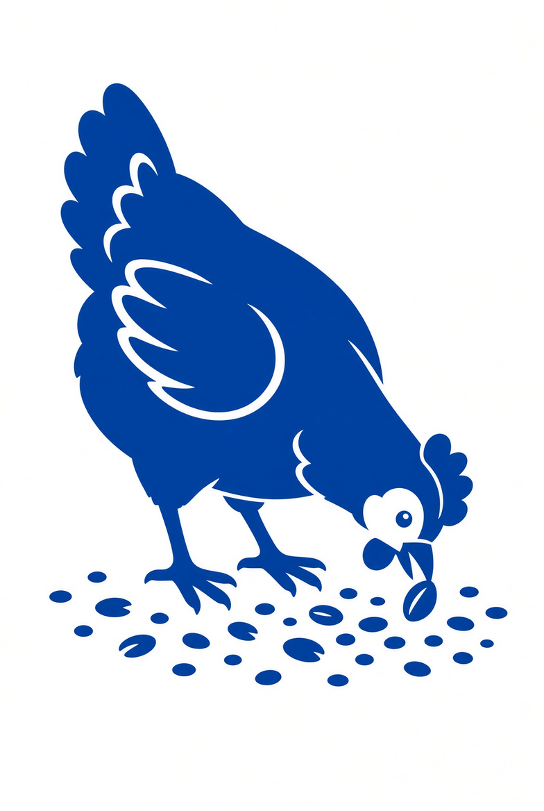
pikken
to peck
regelmatigrang 3542Animalsgetekend
- Scene
- one hen stands on a bare farmyard, the body tipped forward and the beak touching the ground among a scatter of grain; one grain sits at the tip of the beak. No person, no fence and nothing else in the picture; the hen is drawn large and fills most of the frame.
- Must read
- a hen's beak striking the ground among scattered grain.
- Avoid
- a hand throwing grain or bread to the birds (voeren); cows with their heads down in the grass (grazen); a hen sitting on a nest of eggs; a hen dipping the beak into a bowl of water (drinken).
- Alt text
- Een kip staat voorover met de snavel op de grond tussen losse korrels.
- Example
- De kip pikt het graan van de grond.
The chicken pecks the grain from the ground.
pikken.png · rang 3542 · B1 regelmatig · lexicon woorden.tsv
geen beeld
storten
to deposit
regelmatigrang 3546Money & trade
- Scene
- one adult stands at a bank counter pushing a small stack of banknotes through a slot in a glass window with both hands, with a clerk visible behind it; a small slip lies under the adult's elbow.
- Must read
- a small stack of notes pushed through a slot in a glass window to a clerk.
- Avoid
- a person taking cash out of a machine (opnemen); a person paying coins at a till (betalen); a person counting notes at home (tellen); a person throwing notes into the air (gooien); a person tipping a barrow of sand (lossen).
- Alt text
- Iemand duwt met beide handen een stapeltje bankbiljetten door een gleuf in een glazen loket.
- Example
- Ik stort honderd euro op mijn rekening.
I deposit a hundred euros into my account.
storten.png · rang 3546 · B1 regelmatig · lexicon woorden.tsv
geen beeld
storten (afval)
to tip (waste)
regelmatigrang 3546Money & trade
- Scene
- one adult tips a full wheelbarrow forward at the edge of a heap, a load of rubble sliding out of it in a tumbling mass; both arms hold the handles high and the body leans back, with the heap already large below.
- Must read
- a wheelbarrow tipped up at a heap with the load sliding out.
- Avoid
- a person pouring water from a jug (gieten); a person shovelling sand into a hole (scheppen); a person pushing a loaded wheelbarrow (duwen); a person carrying a bag to a bin (dragen); a person dropping notes through a slot (storten).
- Alt text
- Iemand kantelt een kruiwagen op een hoop, het puin glijdt eruit.
- Example
- Ze storten het puin op een hoop buiten de stad.
They dump the rubble onto a heap outside town.
storten-afval.png · rang 3546 · B1 regelmatig · lexicon woorden.tsv
geen beeld
variëren
to vary
regelmatigrang 3550Abstract & general
- Scene
- One woman stands at a plain table with five bowls in a row in front of her; each bowl holds a clearly different food, one heaped round shapes, one sliced, one with a leaf. She looks along the row with a small smile. No other person, nothing else on the table.
- Must read
- five different bowls in one row.
- Avoid
- a woman stirring one pot on a stove (koken); a woman pointing at one bowl among several (kiezen); five identical bowls (herhalen); a woman eating from a bowl (eten).
- Alt text
- Een vrouw staat bij een tafel met vijf kommen op een rij, elk met ander voedsel.
- Example
- Anna varieert haar eten: elke dag kookt zij iets anders.
Anna varies her food: every day she cooks something different.
varieren.png · rang 3550 · B1 regelmatig · lexicon woorden.tsv
geen beeld
verrichten
to perform
regelmatigrang 3551Arts & media
- Scene
- One adult in overalls lies half under a car on a garage floor, side view, both arms reaching up into the underside of the car; a toolbox stands open beside him with a few tools in it. Nothing else is in the frame.
- Must read
- the man's arms busy under the car.
- Avoid
- a person holding a spanner at a broken engine with the bonnet up (repareren); a person at a desk with a laptop (werken); a person washing a car with a sponge (wassen); a person asleep under a car.
- Alt text
- Een man in een overall ligt half onder een auto, naast een open gereedschapskist.
- Example
- De monteur verricht werk aan de auto.
The mechanic carries out work on the car.
verrichten.png · rang 3551 · B1 regelmatig · lexicon woorden.tsv
geen beeld
verzetten
to move (put elsewhere)
regelmatigrang 3552Movement & position
- Scene
- One adult pushes a plain table a short way across a floor toward the corner of a room, leaning into it with a bent back, the legs scraping. The corner is empty, and no other furniture, boxes or people are in the frame.
- Must read
- A person leaning into a table pushing it across the floor.
- Avoid
- a person lifting a table on the arms (tillen); a person pulling a rope (trekken); boxes loaded into a van (verhuizen); a person tidying objects on a shelf (opruimen).
- Alt text
- Iemand duwt een tafel een eindje over de vloer naar de hoek van de kamer, met de rug gebogen.
- Example
- We verzetten de tafel naar de andere kant van de kamer.
We are moving the table to the other side of the room.
verzetten.png · rang 3552 · B1 regelmatig · lexicon woorden.tsv
geen beeld
verzetten (afspraak)
to reschedule
regelmatigrang 3552Movement & position
- Scene
- One hand lifts a pin out of one square of a wall calendar grid and presses it into another square a row lower; the grid squares are empty, with no digits.
- Must read
- A pin lifted from one calendar square and pressed into another.
- Avoid
- a pin pressed into one square (prikken); a person pointing at a calendar (wijzen); a person writing in a diary (schrijven); a person looking at a clock (wachten).
- Alt text
- Een hand haalt een speld uit een vakje van een wandkalender en drukt hem in een ander vakje.
- Example
- Kunnen we onze afspraak naar donderdag verzetten?
Can we move our appointment to Thursday?
verzetten-afspraak.png · rang 3552 · B1 regelmatig · lexicon woorden.tsv
geen beeld
knopen
to tie
regelmatigrang 3574Clothing & appearance
- Scene
- One adult sits holding a thick rope in both hands, one end passed through a loop and tightened into a knot between the two fists. The rope is thick and short, and the loose end hangs down over the knee. Nothing else is in the frame, and no pole is shown.
- Must read
- a knot closing between two fists on a thick rope.
- Avoid
- a person tying a shoelace (strikken); a person coiling a rope (oprollen); two people pulling a rope in a tug of war (trekken); a person braiding hair (vlechten).
- Alt text
- Iemand haalt tussen beide vuisten het uiteinde van een dik touw door een lus tot er een bult ontstaat.
- Example
- Hij knoopt een touw om de paal.
He ties a rope around the pole.
knopen.png · rang 3574 · B1 regelmatig · lexicon woorden.tsv
geen beeld
passeren
to pass
regelmatigrang 3584Movement & position
- Scene
- two cars drive toward the right on two straight lanes drawn as parallel lines; the car in the upper lane is slower, and the nose of the car in the lower lane has reached the back of it.
- Must read
- two cars facing right with the nose of the lower one level with the back of the upper one.
- Avoid
- a car parked at the roadside (parkeren); two cars facing each other nose to nose (botsen); a person running past another person (rennen); a car braking before a wall (remmen).
- Alt text
- Twee auto's rijden naar rechts; de neus van de ene is gelijk met de achterkant van de andere.
- Example
- Mijn vader passeert een langzame auto.
My father passes a slow car.
passeren.png · rang 3584 · B1 regelmatig · lexicon woorden.tsv
geen beeld
vermaken
to entertain
regelmatigrang 3599Abstract & general
- Scene
- One clown stands in a living room juggling three balls, two in the air and one in his hand. Four children sit on the floor in a row, faces tilted up, mouths open in big smiles. A sofa stands behind them. No stage, no audience beyond the children.
- Must read
- the children's wide smiles turned up at the juggling clown.
- Avoid
- a clown on a stage with a curtain (optreden); children kicking a ball together (spelen); a child alone laughing at a phone (lachen); a clown with a cake (feesten).
- Alt text
- Een man gooit drie ballen omhoog terwijl vier kinderen op de grond met open mond kijken.
- Example
- De clown vermaakt de kinderen.
The clown entertains the children.
vermaken.png · rang 3599 · B1 regelmatig · lexicon woorden.tsv
geen beeld
veroveren
to conquer
regelmatigrang 3601Abstract & general
- Scene
- two soldiers in helmets stand on top of a castle wall between its battlements; one drives the pole of a plain pennant into the stone, the other holds a fist up, and a ladder leans against the wall below them.
- Must read
- a pole with a pennant planted on top of a castle wall by a helmeted soldier.
- Avoid
- a person waving a flag in a crowd (zwaaien); two soldiers fighting with swords (vechten); a person climbing a ladder with a bucket (klimmen); a person building a sandcastle (bouwen); any symbol on the flag.
- Alt text
- Twee mannen met helm staan op een kasteelmuur; de een zet een stok met vaantje vast.
- Example
- De soldaten veroveren de stad.
The soldiers conquer the city.
veroveren.png · rang 3601 · B1 regelmatig · lexicon woorden.tsv
geen beeld
begeleiden
to accompany
regelmatigrang 3609Sport & games
- Scene
- One adult walks beside an older person who uses a walking stick, with one hand held lightly under the older person's elbow. Both face the same way and walk at the same slow pace along a flat path. No other people or objects appear in the frame.
- Must read
- a hand under the elbow of an older person with a stick, walking side by side.
- Avoid
- an adult pulling someone by the hand ahead (leiden); an adult carrying shopping bags (dragen); an adult walking behind someone (volgen); an adult lifting someone up (helpen).
- Alt text
- Iemand loopt naast een oudere met een stok en houdt een hand onder de elleboog.
- Example
- De verpleger begeleidt de oude man naar de tuin.
The nurse accompanies the old man to the garden.
begeleiden.png · rang 3609 · B1 regelmatig · lexicon woorden.tsv
geen beeld
concentreren
to concentrate
regelmatigrang 3613Thought & knowledge
- Scene
- one student sits upright at a plain desk with a single pencil in the hand and one book open, the eyes fixed on the page and the brows slightly lowered, the mouth shut; nothing else is on the desk and the room around is empty.
- Must read
- a student with a pencil and fixed eyes on a book, alone at a bare desk.
- Avoid
- a person yawning at a desk (gapen); a person looking out of the window (kijken); a person reading aloud to a friend (voorlezen); a person asleep with the head on the desk (slapen); a person chatting on a phone (chatten).
- Alt text
- Een leerling zit rechtop aan een kaal bureau, kijkt strak naar een boek en houdt een potlood vast.
- Example
- Ik kan me niet concentreren met die muziek.
I cannot concentrate with that music.
concentreren.png · rang 3613 · B1 regelmatig · lexicon woorden.tsv
geen beeld
regeren
to reign, to govern
regelmatigrang 3644Abstract & general
- Scene
- One adult wearing a crown sits on a tall throne at the top of a few wide steps, one hand resting on a scepter. Below the steps, ordinary adults stand in two neat rows with their faces turned up towards the crowned figure. Nothing else is in the picture.
- Must read
- the crowned figure on the throne above the rows of upturned faces.
- Avoid
- a person on a plain chair in a living room (zitten); a person on a stage talking to a crowd (spreken); two crowned people fighting with swords (vechten); a person pointing a whip at a bowed worker (heersen)
- Alt text
- Een man met een kroon op een grote stoel boven aan een trap; beneden staan rijen mensen die omhoog kijken.
- Example
- De oude koning regeert al lang over het land.
The old king has ruled over the country for a long time.
regeren.png · rang 3644 · B1 regelmatig · lexicon woorden.tsv
geen beeld
uiten
to express
regelmatigrang 3651Abstract & general
- Scene
- One adult presses one hand to the chest and holds the other hand out open toward a friend, who leans in listening with the head tilted. The two stand facing each other a short distance apart. The listener's hands hang loose at the sides, and nothing else is in the frame.
- Must read
- One hand pressed to the chest while the other opens toward a listener.
- Avoid
- two people chatting (praten); a person crying with tears (huilen); a person telling a story with a pointing hand (vertellen); a person shouting (schreeuwen).
- Alt text
- Iemand houdt een hand tegen de borst en reikt met de andere open hand naar een ander die aandachtig luistert.
- Example
- Hij durft zijn gevoelens niet te uiten.
He does not dare to express his feelings.
uiten.png · rang 3651 · B1 regelmatig · lexicon woorden.tsv
geen beeld
worstelen
to wrestle
regelmatigrang 3661Sport & games
- Scene
- Two adults in plain singlets stand bent forward on a round mat, gripping each other's shoulders and waists, one leg hooked behind the other's ankle. Their heads are pressed together and their faces strained. The mat is empty beyond them, and no referee, crowd or other people are in the frame.
- Must read
- two bodies locked chest to chest with a leg hooked around an ankle.
- Avoid
- two people boxing with gloves (boksen); two people dancing (dansen); two people hugging (omhelzen); a person lifting another (tillen).
- Alt text
- Twee mensen staan gebogen op een ronde mat, houden elkaars middel vast en haken een been om de enkel.
- Example
- De jongens worstelen op de mat.
The boys wrestle on the mat.
worstelen.png · rang 3661 · B1 regelmatig · lexicon woorden.tsv
geen beeld
klikken
to click
regelmatigrang 3677Abstract & general
- Scene
- one adult sits at a desk in front of a laptop with the eyes on the screen, the index finger pressed down on the button of a mouse under the other hand; nothing is drawn on the screen.
- Must read
- an index finger pressed down on a mouse button while the eyes look at the screen.
- Avoid
- fingers typing on a keyboard (typen); a thumb swiping a phone (vegen); a hand holding a phone to the ear (bellen); a finger pressing a doorbell (drukken).
- Alt text
- Iemand zit aan een bureau voor een scherm en legt de wijsvinger op een knop van een muis.
- Example
- Klik op de knop om te beginnen.
Click the button to start.
klikken.png · rang 3677 · B1 regelmatig · lexicon woorden.tsv
geen beeld
smaken
to taste (of)
regelmatigrang 3692Food & drink
- Scene
- one adult sits at a plain table behind a bowl and holds a spoonful up to the lips with the eyes shut and the cheeks lifted in a wide smile, the other hand resting on the stomach.
- Must read
- a closed-eyed smile around a spoon at the lips.
- Avoid
- a person pouring soup into a bowl (gieten); a person chewing a big bite of bread (eten); a person sniffing a flower (ruiken); a person blowing on a hot spoon (blazen); a spoon held out to another person.
- Alt text
- Iemand houdt een lepel bij de lippen met gesloten ogen en een brede glimlach, de andere hand op de buik.
- Example
- De soep smaakt heerlijk.
The soup tastes delicious.
smaken.png · rang 3692 · B1 regelmatig · lexicon woorden.tsv
geen beeld
staren
to stare
regelmatigrang 3694Abstract & general
- Scene
- One man stands still, facing slightly to one side, eyes round and wide open, mouth shut, face stiff and arms hanging. His shoulders are level and his feet are together. A plain wall stands behind him, and there is no window, object or other person in the frame.
- Must read
- round wide-open eyes fixed on one point, body stock still.
- Avoid
- a man glancing with normal eyes (kijken); a man looking all around (zoeken); a man with closed eyes (slapen); a man shading his eyes with a hand (turen).
- Alt text
- Een man staat stil met grote ronde ogen en een strak gezicht naar iets buiten het beeld; zijn armen hangen.
- Example
- Hij staart uit het raam.
He stares out of the window.
staren.png · rang 3694 · B1 regelmatig · lexicon woorden.tsv

wekken
to wake (someone)
regelmatigrang 3705House & homegetekend
- Scene
- one adult bends over a bed and gently shakes the shoulder of a child who lies asleep under the blanket, eyes still shut; the adult's other hand draws the curtain a little open. No clock in the picture.
- Must read
- a hand shaking a sleeping child's shoulder.
- Avoid
- a person lying asleep alone (slapen); a closed bottle shaken in a fist (schudden); a person calling with cupped hands (roepen); a blanket tucked in round a child (zorgen).
- Alt text
- Een volwassene legt een hand op de schouder van een kind in bed; het kind heeft de ogen nog dicht.
- Example
- Ik wek mijn zoon om zeven uur.
I wake my son at seven o'clock.
wekken.png · rang 3705 · B1 regelmatig · lexicon woorden.tsv
geen beeld
aanvaarden
to assent to
regelmatigrang 3708Abstract & general
- Scene
- Two adults stand facing each other at arm's length. The first holds out a white envelope in one hand; the second adult's hand is just closing round it. The second adult smiles and looks at the envelope. Nothing else is in the picture, no table and no furniture.
- Must read
- the second hand closing round the envelope.
- Avoid
- a hand lifting a parcel off a shelf (pakken); a hand pushing the envelope back (weigeren); a hand signing a paper (ondertekenen); an open empty palm held out (vragen).
- Alt text
- Een persoon houdt een envelop uit en een tweede hand sluit zich er net omheen, terwijl de ontvanger glimlacht.
- Example
- Els aanvaardt de nieuwe baan.
Els accepts the new job.
aanvaarden.png · rang 3708 · B1 regelmatig · lexicon woorden.tsv
geen beeld
beloven
to promise
regelmatigrang 3709Communication & language
- Scene
- two adults face each other; the first holds one hand flat on the chest and the little finger of the other hand hooked and stretched out towards the second, who is hooking their own little finger around it; both look into each other's eyes.
- Must read
- two little fingers hooked together while one hand rests on the chest.
- Avoid
- two people shaking hands (groeten); a person raising a hand with a flat palm in a courtroom (zweren); two people hugging (omhelzen); a person giving a ring (geven); two people signing a sheet (ondertekenen).
- Alt text
- Twee mensen haken hun kleine vingers in elkaar, de een met een hand op de borst.
- Example
- Ik beloof dat ik op tijd kom.
I promise that I will come on time.
beloven.png · rang 3709 · B1 regelmatig · lexicon woorden.tsv

serveren
to serve (food)
regelmatigrang 3793Food & drinkgetekend
- Scene
- one waiter in an apron walks up to a small table and lowers a plate of food onto it in front of a seated guest; a cloth hangs over the waiter's forearm and the guest looks up.
- Must read
- a waiter lowering a plate in front of a seated guest.
- Avoid
- a person eating at a table (eten); a person at a stove with a pan (koken); a box handed out of a van (leveren); coins on a counter (betalen).
- Alt text
- Een ober met een schort zet een bord eten neer bij een gast die aan een tafeltje zit.
- Example
- De ober serveert de soep als eerste.
The waiter serves the soup first.
serveren.png · rang 3793 · B1 regelmatig · lexicon woorden.tsv
geen beeld
daten
to date
regelmatigrang 3821People & relations
- Scene
- two adults sit across a small round table, each with one glass; they lean toward each other with their hands joined on the tabletop and both smile, the heads tilted a little.
- Must read
- two people leaning toward each other across a small table with their hands joined.
- Avoid
- four people with a plate each (dineren); two people hugging (omhelzen); two people with a bar each above the head (praten); one person winking at another (flirten); a candle.
- Alt text
- Twee mensen zitten aan een klein tafeltje, houden elkaars handen vast en glimlachen, elk met een glas voor zich.
- Example
- Ze daten al een maand.
They have been dating for a month.
daten.png · rang 3821 · B1 regelmatig · lexicon woorden.tsv
geen beeld
lunchen
to have lunch
regelmatigrang 3839Food & drink
- Scene
- two people sit side by side on an outdoor bench, each holding a sandwich in one hand, with a cup beside each of them; neither is biting, the bench stands on flat ground, and no table, plate or other person is in the frame.
- Must read
- two people on a bench each holding a sandwich.
- Avoid
- a person with a bowl and a spoon at a table (ontbijten); a person with a hot plate of food at a table (eten); a person drinking from a cup (drinken); a person cooking at a stove (koken).
- Alt text
- Twee mensen zitten naast elkaar op een bank, elk met een belegd broodje in de hand.
- Example
- We lunchen om twaalf uur in de kantine.
We have lunch at twelve in the canteen.
lunchen.png · rang 3839 · B1 regelmatig · lexicon woorden.tsv
geen beeld
mailen
to email
regelmatigrang 3840Communication & language
- Scene
- one adult sits at a plain table with a laptop open in front of them, both hands on the keys and the eyes on the screen, where a small envelope shape is drawn alone with an arrow-shaped wing flying out to the right.
- Must read
- a laptop screen with a small envelope shape flying off it.
- Avoid
- a person posting a letter in a box (posten); a person on a phone call (bellen); a person writing a paper letter with a pen (schrijven); a person typing in a chat on a phone (chatten); a person carrying a parcel (dragen).
- Alt text
- Iemand zit achter een open laptop en op het scherm vliegt een klein envelopje weg.
- Example
- Ik mail de rekening naar mijn baas.
I email the invoice to my boss.
mailen.png · rang 3840 · B1 regelmatig · lexicon woorden.tsv
geen beeld
beheren
to manage
regelmatigrang 3869Work & jobs
- Scene
- A man stands in a small plain room facing a wall of hooks, each with one key hanging from it. He holds a single key in one hand and rests the other hand on a shelf below the hooks, looking at the wall. No other person.
- Must read
- the wall of hooks with keys and the man minding them.
- Avoid
- a key put away in a drawer (bewaren); a person watering a plant (zorgen); a person handing a key to someone (geven); a person searching under cushions (zoeken).
- Alt text
- Een man staat voor een wand vol haken met sleutels eraan en houdt er een in zijn hand.
- Example
- Jan beheert de sleutels van de school.
Jan manages the keys of the school.
beheren.png · rang 3869 · B1 regelmatig · lexicon woorden.tsv
geen beeld
benaderen
to approach
regelmatigrang 3871Movement & position
- Scene
- A man walks across an empty station hall towards a woman who stands by a bench with her bag beside her. He is mid-stride, facing her, with one hand slightly raised as if to start a conversation. She looks at him. Nothing else in the picture.
- Must read
- the man mid-stride towards the woman, hand raised.
- Avoid
- two people already talking side by side (praten); a man walking alone with no one ahead (wandelen); a man waving from far away (zwaaien); a man pointing at a clock or a sign (wijzen); a woman walking towards the man (komen).
- Alt text
- Een man loopt met een opgeheven hand in een lege hal naar een vrouw bij een bank.
- Example
- Jan benadert een vrouw op het station om de weg te vragen.
Jan approaches a woman at the station to ask the way.
benaderen.png · rang 3871 · B1 regelmatig · lexicon woorden.tsv
geen beeld
ademen
to breathe
regelmatigrang 3907Body & health
- Scene
- one adult stands beside a single tree with the chest filled out, both arms spread wide, the chin lifted and the mouth closed; the nose is drawn slightly raised. The feet are planted apart on flat ground, the eyes are shut, and nothing else is in the frame.
- Must read
- a filled chest, arms spread wide and chin lifted beside a tree.
- Avoid
- a person blowing out a candle (blazen); a person yawning (gapen); a person bent over with hands on the knees after a run (rennen); a person smelling a flower (ruiken).
- Alt text
- Iemand staat naast een boom met gespreide armen, opgeheven kin en een gezwollen borst.
- Example
- Ik kan hier goed ademen.
I can breathe well here.
ademen.png · rang 3907 · B1 regelmatig · lexicon woorden.tsv
geen beeld
beledigen
to insult
regelmatigrang 3908Abstract & general
- Scene
- one adult leans forward and jabs a finger at the chest of a second adult, mouth open; the second pulls the shoulders in, lowers the head and presses a hand to the chest with a downturned mouth.
- Must read
- a hurt person with lowered head and a hand on the chest before a pointing finger.
- Avoid
- a driver shouting out of a car window (schelden); a fist landing on a person (slaan); a person crying with hands over the face (huilen); two children laughing at a third (plagen).
- Alt text
- Iemand prikt met een vinger tegen de borst van een ander, die met gebogen hoofd terugdeinst.
- Example
- Het was niet mijn bedoeling je te beledigen.
I did not mean to insult you.
beledigen.png · rang 3908 · B1 regelmatig · lexicon woorden.tsv
geen beeld
dreigen
to threaten
regelmatigrang 3914Law & conflict
- Scene
- one adult stands close to a second adult with a fist held at shoulder height, the brows pulled down and the jaw tight; the second adult steps back with both palms turned up.
- Must read
- a fist held at shoulder height toward a second person who steps back with open palms.
- Avoid
- a fist striking a person (slaan); two people with open mouths shouting (schreeuwen); a finger wagging at a child (waarschuwen); a fist hammering a table (bonzen); a weapon.
- Alt text
- Iemand houdt een vuist op schouderhoogte voor een ander, die achteruit stapt met de handpalmen omhoog.
- Example
- Hij dreigt zijn buurman met zijn vuist.
He threatens his neighbour with his fist.
dreigen.png · rang 3914 · B1 regelmatig · lexicon woorden.tsv
geen beeld
kletsen
to chatter
regelmatigrang 3931Communication & language
- Scene
- Two friends sit across from each other at a small table with cups, both leaning forward with open mouths and one hand gesturing. A teapot stands in the middle of the table between the cups. The friends smile, and no other people or objects appear in the frame.
- Must read
- two people leaning toward each other across a table with cups, mouths open.
- Avoid
- two people leaning on a garden fence talking (babbelen); a person telling a story to a group (vertellen); a person singing (zingen); two people drinking in silence (drinken).
- Alt text
- Twee mensen zitten tegenover elkaar aan een tafeltje met kopjes, leunen naar voren en praten met open mond.
- Example
- Wij kletsen elke ochtend bij de koffie.
We chat every morning over coffee.
kletsen.png · rang 3931 · B1 regelmatig · lexicon woorden.tsv
geen beeld
slepen
to drag
regelmatigrang 3951Movement & position
- Scene
- one adult leans far forward at an angle with both hands gripping the handle of a very large sack, pulling it backward along the floor, a long smear mark behind it, the sack's bottom scraping along the ground; the face is strained and the feet dig in.
- Must read
- a large sack pulled along the floor with a long scrape behind it and a leaning body.
- Avoid
- a person lifting a sack onto the shoulder (tillen); a person pushing a wheelbarrow (duwen); a person carrying a small bag in one hand (dragen); a person throwing a sack away (gooien); a person pulling a rope with a kite (trekken).
- Alt text
- Iemand leunt ver voorover en houdt een enorme zak aan de handgreep achter zich over de grond.
- Example
- Hij sleept zijn koffer de trap op.
He drags his suitcase up the stairs.
slepen.png · rang 3951 · B1 regelmatig · lexicon woorden.tsv
geen beeld
financieren
to finance
regelmatigrang 3980Money & trade
- Scene
- A bank clerk sits behind a desk and slides a small bag of coins across it towards a woman who stands facing him. Through a window behind the woman a half-built house with bare walls and a crane is visible. Both look at the bag.
- Must read
- the bag of coins sliding across the desk, with the unfinished house behind the woman.
- Avoid
- a customer counting coins into a till (betalen); a person handing a coin to a friend (lenen); a woman signing a sheet at a desk (tekenen); a finished house with a for-sale sign (verkopen).
- Alt text
- Een man achter een bureau duwt een zakje munten naar een vrouw; achter haar raam staat een half huis.
- Example
- De bank financiert het huis van Els.
The bank is financing Els's house.
financieren.png · rang 3980 · B1 regelmatig · lexicon woorden.tsv
geen beeld
opereren
to operate
regelmatigrang 3997Abstract & general
- Scene
- Two adults in caps and face masks stand on opposite sides of a table on which a patient lies covered by a sheet up to the chest; one holds a small blade over the sheet under a round lamp.
- Must read
- A masked figure holding a small blade over a covered patient under a round lamp.
- Avoid
- a knife cutting bread (snijden); a person with a bandage roll (verbinden); a doctor listening to a chest (onderzoeken); a patient sitting up (genezen).
- Alt text
- Twee mensen met muts en mondmasker staan aan weerszijden van een tafel waar iemand onder een laken ligt.
- Example
- De arts opereert de patient morgenochtend.
The doctor is operating on the patient tomorrow morning.
opereren.png · rang 3997 · B1 regelmatig · lexicon woorden.tsv
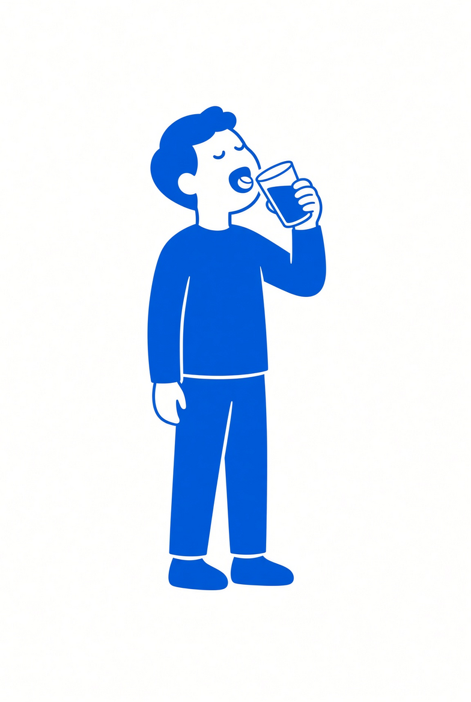
slikken
to swallow
regelmatigrang 4007Body & healthgetekend
- Scene
- one adult stands with the head tipped back, a small pill on the tip of the tongue and a glass of water raised close to the lips in one hand. Nothing else in the picture. A clearly visible, oversized round pill rests on the stretched-out tongue in the open mouth; the glass is raised near the lips but not tilted into the mouth.
- Must read
- a pill on the tongue with the head tipped back and a glass at the lips.
- Avoid
- a cup at the lips with the head level (drinken); a fork lifted to the mouth (eten); a spoon tasted at a pot (proeven); a hand on the stomach.
- Alt text
- Iemand houdt het hoofd achterover met een pil op de tong en een glas water bij de lippen.
- Example
- Ik kan door mijn keelpijn bijna niet slikken.
I can hardly swallow because of my sore throat.
slikken.png · rang 4007 · B1 regelmatig · lexicon woorden.tsv
geen beeld
verstrekken
to provide (hand out)
regelmatigrang 4014Abstract & general
- Scene
- One adult woman stands behind a plain counter and holds out one book with both hands to a child on the other side, who reaches up for it. Behind her a table carries several identical stacks of books. Both look at the book. No coins, no other people.
- Must read
- a book passing over the counter from the woman to the child, more stacks behind her.
- Avoid
- coins and notes on the counter (kopen); a child handing a book back (lenen); one woman handing a single gift-wrapped parcel (geven); a woman throwing leaflets at a crowd (uitdelen); a woman reading to a child.
- Alt text
- Een vrouw achter een balie overhandigt een boek aan een kind; op een tafel achter haar liggen meer stapels.
- Example
- De school verstrekt boeken aan de leerlingen.
The school provides books to the pupils.
verstrekken.png · rang 4014 · B1 regelmatig · lexicon woorden.tsv
geen beeld
analyseren
to analyse (break down)
regelmatigrang 4029Thought & knowledge
- Scene
- A woman sits at a plain table with a sheet covered in rows of short plain marks and holds a magnifying glass over one single row, her finger resting on that row. She leans in close and looks only at it. Nothing else on the table.
- Must read
- the magnifying glass held over one row of marks.
- Avoid
- a woman reading an open book (lezen); a woman in a laboratory bending over a microscope (onderzoeken); a woman pressing the buttons of a calculator (rekenen); a woman writing on the sheet with a pen (schrijven).
- Alt text
- Een vrouw zit aan een tafel met een vergrootglas boven één regel op een vel vol streepjes.
- Example
- Els analyseert de cijfers van de winkel.
Els analyses the shop's figures.
analyseren.png · rang 4029 · B1 regelmatig · lexicon woorden.tsv
geen beeld
dumpen
to dump
regelmatigrang 4039Abstract & general
- Scene
- a truck stands with its open bed tilted up at the back, a heap of plain bags sliding off onto a patch of open ground; one adult stands beside the cab with hands on the hips.
- Must read
- a tilted truck bed with bags sliding onto the ground.
- Avoid
- a person putting a bag in a bin (weggooien); a person loading bags onto the truck (laden); a person sweeping with a broom (vegen); a person digging a hole (graven).
- Alt text
- Een vrachtwagen met een omhooggekantelde bak laat een hoop zakken op een kale plek glijden.
- Example
- Ze dumpen het afval in het bos.
They dump the rubbish in the forest.
dumpen.png · rang 4039 · B1 regelmatig · lexicon woorden.tsv
geen beeld
integreren
to integrate
regelmatigrang 4047Society & politics
- Scene
- One woman with a bag of books on her shoulder steps up to a plain table where four adults sit on a bench; the nearest person shifts along and pats the free place for her, smiling at her. She smiles back. No other furniture is in the picture.
- Must read
- the person making room on the bench for the newcomer.
- Avoid
- people playing a card game (meedoen); two people shaking hands for the first time (ontmoeten); a woman handing a form across a desk (inschrijven); a woman waving goodbye (vertrekken).
- Alt text
- Een vrouw met een tas komt bij een tafel en een man maakt op de bank plaats voor haar.
- Example
- Anna integreert goed in haar nieuwe groep vrienden.
Anna is integrating well into her new group of friends.
integreren.png · rang 4047 · B1 regelmatig · lexicon woorden.tsv
geen beeld
vervolgen
to continue
regelmatigrang 4064Abstract & general
- Scene
- A man in walking boots, rucksack on his back, has just risen from a tree stump where he rested. He takes his first step onto a path that winds on between trees, eyes ahead along the path. The stump stays behind him; nothing else in the picture.
- Must read
- the rested man stepping off the stump onto the path ahead.
- Avoid
- a man sitting still on the stump eating (rusten); a man striding fast with no stump behind him (lopen); a group walking along a lane for pleasure (wandelen); a signpost with an arrow; a map held open.
- Alt text
- Een man met een rugzak staat naast een boomstronk en zet de eerste stap op een bospad.
- Example
- Na een korte pauze vervolgt Sam zijn weg.
After a short break Sam continues on his way.
vervolgen.png · rang 4064 · B1 regelmatig · lexicon woorden.tsv
geen beeld
adviseren
to advise
regelmatigrang 4072Communication & language
- Scene
- two adults sit facing each other across a plain desk; one leans forward holding an open hand toward the other, palm up, and the other listens with a hand at the chin.
- Must read
- a seated adult holding an open palm toward a listening second adult across a desk.
- Avoid
- an adult handing over an envelope (overhandigen); an adult pointing a finger at a sheet (wijzen); a teacher drawing on a board (uitleggen); a person shouting at a counter (eisen).
- Alt text
- Aan een bureau houdt iemand een open hand naar een ander, die luistert met de hand aan de kin.
- Example
- De dokter adviseert mij om meer te bewegen.
The doctor advises me to exercise more.
adviseren.png · rang 4072 · B1 regelmatig · lexicon woorden.tsv
geen beeld
bedreigen
to menace
regelmatigrang 4080Law & conflict
- Scene
- one adult holds a clenched fist stretched out at arm's length toward a second adult, who steps backward with both hands raised; a low fence runs between them. Neither holds a weapon, the first one frowns hard, and the street behind is empty.
- Must read
- a clenched fist held out at arm's length toward a person stepping back.
- Avoid
- a fist landing on a person (slaan); a driver shouting out of a car (schelden); a raised finger as a warning (waarschuwen); a tall person looming over a small one (intimideren).
- Alt text
- Iemand houdt een gebalde vuist uitgestrekt naar een ander, die achteruit stapt met de handen omhoog.
- Example
- Hij bedreigt de buurman met zijn vuist.
He threatens the neighbour with his fist.
bedreigen.png · rang 4080 · B1 regelmatig · lexicon woorden.tsv
geen beeld
bekennen
to confess
regelmatigrang 4081Abstract & general
- Scene
- one adult stands before a desk with the head bowed and both palms turned up at the sides, the shoulders dropped; behind the desk a police officer in a cap sits with a pen over a pad, and a broken vase lies on the floor by the standing adult's feet.
- Must read
- a bowed head and open palms in front of a seated officer.
- Avoid
- a person with both arms straight up (zich overgeven); a person shaking the head with folded arms (ontkennen); a person pointing at another (wijzen); two people with a bar each above the head (praten); handcuffs.
- Alt text
- Iemand staat met gebogen hoofd en open handpalmen voor een man met pet die achter een bureau zit.
- Example
- De dief bekent dat hij het heeft gedaan.
The thief confesses that he did it.
bekennen.png · rang 4081 · B1 regelmatig · lexicon woorden.tsv
geen beeld
bewerken
to edit, to work on
regelmatigrang 4083Work & jobs
- Scene
- One adult sits at a plain table with a rough block of wood in front of her, a small sanding block in one hand. Half of the block is smooth and pale, the other half is still rough and jagged. She looks at the block.
- Must read
- the smooth half of the block next to the rough half.
- Avoid
- a person sawing a plank in two (zagen); a person building a box from planks (maken); a person painting a block with a brush (verven); a finished smooth block held up; sawdust clouds or speed lines.
- Alt text
- Een vrouw zit aan een tafel met een houtblok waarvan de ene helft glad is en de andere ruw.
- Example
- Eva bewerkt het hout tot het glad is.
Eva works the wood until it is smooth.
bewerken.png · rang 4083 · B1 regelmatig · lexicon woorden.tsv
geen beeld
kappen
to chop down
regelmatigrang 4099Movement & position
- Scene
- one man swings an axe up over his shoulder beside a tree trunk that already has a deep notch cut in it. The tree stands in an open clearing, wood chips lie on the grass, and his feet are planted wide apart.
- Must read
- an axe raised beside a tree trunk with a deep notch.
- Avoid
- a man splitting a log on a block (hakken); a man sawing a plank (zagen); a man planting a sapling (planten); a man hammering a nail (timmeren).
- Alt text
- Een man heft een bijl boven zijn schouder naast een boomstam met een diepe snede.
- Example
- De houthakker kapt een oude boom.
The lumberjack chops down an old tree.
kappen.png · rang 4099 · B1 regelmatig · lexicon woorden.tsv
geen beeld
kappen (stoppen)
to quit, to stop
regelmatigrang 4099Movement & position
- Scene
- One man turns away from a half-dug hole in which a shovel stands upright, a bag over his shoulder and one hand raised flat behind him as he walks off; a small mound of loose earth lies beside the hole.
- Must read
- a shovel left upright in a half-dug hole while the man walks away with a raised hand.
- Avoid
- a man digging hard (graven); a man leaning on a shovel to rest (rusten); a man waving goodbye at a window (zwaaien); a man walking on a plain path (gaan).
- Alt text
- Een man laat een schop rechtop in een half uitgehold gat staan en loopt weg met een hand omhoog.
- Example
- Ik kap ermee, het is genoeg.
I am quitting, that is enough.
kappen-stoppen.png · rang 4099 · B1 regelmatig · lexicon woorden.tsv
geen beeld
overleggen
to confer, to consult
regelmatigrang 4111Abstract & general
- Scene
- Two adults stand side by side at a desk with their heads close together over one open laptop, taking turns pointing at the screen. One has a finger raised toward the screen while the other nods slowly. The desk is bare apart from the laptop, and nothing else is in the frame.
- Must read
- Two heads close together over one laptop, taking turns pointing.
- Avoid
- three people round a table (bespreken); two people chatting (praten); a person looking at a screen alone (kijken); a long meeting (vergaderen).
- Alt text
- Twee mensen staan met de hoofden dicht bij elkaar over een open laptop en wijzen om beurten naar het scherm.
- Example
- Ik moet eerst even met mijn collega overleggen.
I first have to confer with my colleague.
overleggen.png · rang 4111 · B1 regelmatig · lexicon woorden.tsv
geen beeld
overleggen (document)
to present (a document)
regelmatigrang 4111Abstract & general
- Scene
- One adult slides a sheet of paper through the opening at the bottom of a glass counter window toward a clerk on the other side, who holds out a hand to receive it.
- Must read
- A sheet pushed through a counter window to a clerk.
- Avoid
- a box passed hand to hand (geven); a sheet held up to a person (tonen); a letter dropped in a slot (posten); two people at a table (bespreken).
- Alt text
- Iemand schuift een vel papier door een opening in een glazen wand naar een persoon aan de andere kant.
- Example
- U moet een bewijs van inschrijving overleggen.
You must present proof of registration.
overleggen-document.png · rang 4111 · B1 regelmatig · lexicon woorden.tsv
geen beeld
stralen
to beam
regelmatigrang 4122Abstract & general
- Scene
- one adult stands below a round sun that is high above, with ten short straight rays evenly spaced around it; the adult's face is tilted up. The ground is flat and bare, the sun is a plain disc, and no cloud or building is in the frame.
- Must read
- a round sun with evenly spaced straight rays high above a standing figure.
- Avoid
- a half disc with short rays on a horizon (dagen); a bulb hanging from a cord (gloeien); a person lying flat in the sun (zonnebaden); a round moon (opkomen).
- Alt text
- Een ronde zon met gelijke korte streepjes eromheen staat hoog boven een figuur met het gezicht omhoog.
- Example
- De zon straalt aan de hemel.
The sun is shining in the sky.
stralen.png · rang 4122 · B1 regelmatig · lexicon woorden.tsv
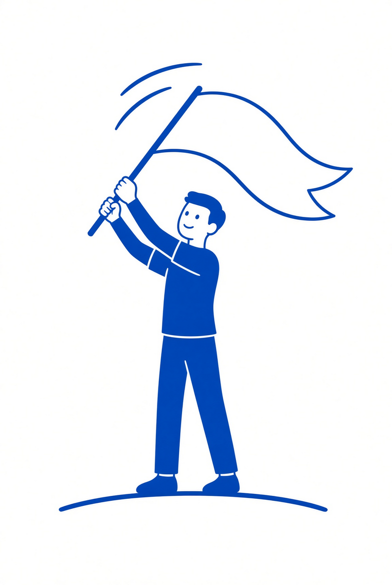
zwaaien
to wave (a flag)
regelmatigrang 4135Movement & positiongetekend
- Scene
- one adult stands alone on an open field and swings a large plain flag on a short pole in a wide arc above the head, both hands on the pole and the cloth streaming out sideways; two curved motion lines follow the arc. The flag is blank: no emblem, stripes or lettering.
- Must read
- a plain flag swung in a wide arc above the head.
- Avoid
- one open hand raised to a person across the street (groeten); a sail filled by the wind (zeilen); a hat flying off in the wind (waaien); a string of paper flags hung on a wall (versieren).
- Alt text
- Iemand houdt met twee handen een stok vast en beweegt een grote vlag in een wijde boog boven het hoofd.
- Example
- Wij zwaaien met de vlag tijdens de optocht.
We wave the flag during the parade.
zwaaien.png · rang 4135 · B1 regelmatig · lexicon woorden.tsv
geen beeld
bewaken
to guard
regelmatigrang 4141Law & conflict
- Scene
- One man in a cap stands upright beside a closed gate with arms at his sides and eyes straight ahead. A small hut stands behind him, and a short fence runs away on either side of the gate. He does not move, and nobody else is in the frame.
- Must read
- an upright figure planted beside a closed gate, eyes forward.
- Avoid
- a person waiting on a bench (wachten); a person asleep on a chair (slapen); a person opening the gate (openen); a person walking a round (lopen).
- Alt text
- Een man met een pet staat rechtop naast een gesloten hek en kijkt strak voor zich uit.
- Example
- De politie bewaakt het gebouw.
The police guard the building.
bewaken.png · rang 4141 · B1 regelmatig · lexicon woorden.tsv
geen beeld
doneren
to donate
regelmatigrang 4149Money & trade
- Scene
- one adult stands beside a plain box with a slot in its top, set on a table at chest height, and lets a single coin fall from the fingers just above the slot with a calm face.
- Must read
- a coin leaving the fingers above the slot of a closed box.
- Avoid
- a hand paying across a counter (besteden); a hand giving a wrapped box to another person (geven); a person holding out a bowl (vragen); a person putting a letter in a postbox (posten); a heart symbol.
- Alt text
- Iemand laat een munt boven de gleuf van een gesloten doos op een tafel los.
- Example
- Ik doneer elke maand tien euro.
I donate ten euros every month.
doneren.png · rang 4149 · B1 regelmatig · lexicon woorden.tsv
geen beeld
koppelen
to couple
regelmatigrang 4167People & relations
- Scene
- One adult lowers the hitch of a small caravan onto the tow ball at the back of a car, close side view; the hitch is just closing over the ball and nothing else is in the frame.
- Must read
- the hitch closing over the tow ball.
- Avoid
- a rope tied between two objects (binden); a car pulling a caravan along the road (trekken); two plain hands joined (verbinden); a plug going into a socket; a cable between two boxes.
- Alt text
- Een volwassene laat de aanhanger zakken op de trekhaak van een auto.
- Example
- Hij koppelt de caravan aan de auto.
He hitches the caravan to the car.
koppelen.png · rang 4167 · B1 regelmatig · lexicon woorden.tsv
geen beeld
shoppen
to shop
regelmatigrang 4183Money & trade
- Scene
- One woman walks past a shop window with several bags hanging from each arm, smiling and looking into the window. The window shows a few plain items on stands, and the pavement is bare. Nobody else is in the frame, and the woman's steps are relaxed and unhurried.
- Must read
- a woman with bags hanging from both arms in front of a shop window.
- Avoid
- a person paying at a till (betalen); a person buying one item (kopen); a person carrying heavy boxes (dragen); a person trying on a coat (passen).
- Alt text
- Een vrouw loopt langs een etalage met een paar tassen aan elke arm en kijkt naar binnen.
- Example
- Op zaterdag gaan we shoppen in de stad.
On Saturday we go shopping in town.
shoppen.png · rang 4183 · B1 regelmatig · lexicon woorden.tsv
geen beeld
verven
to paint (walls)
regelmatigrang 4194House & home
- Scene
- one adult stands in front of a tall plain wall with one arm raised, a wide roller held against the wall in the middle of an upward stroke; one half of the wall is evenly filled with the roller's coat while the other half is bare; a paint tray stands on the floor.
- Must read
- a roller in mid stroke on a wall that is half covered and half bare.
- Avoid
- an adult at an easel with a small brush (schilderen); a person drawing a line on paper (tekenen); a person washing a wall with a sponge (schoonmaken); a person hanging a poster (ophangen); a bucket tipped over (gieten).
- Alt text
- Iemand strijkt met een brede roller over een muur die voor de helft bedekt is, naast een bak.
- Example
- We verven morgen de muur in de woonkamer.
We are painting the living room wall tomorrow.
verven.png · rang 4194 · B1 regelmatig · lexicon woorden.tsv
geen beeld
verwennen
to pamper
regelmatigrang 4195Abstract & general
- Scene
- A grandmother kneels in front of a small child and sets a large cake and a gift box down in front of it. The child already hugs three toys in both arms and reaches out with one hand for more. Both look at the cake.
- Must read
- the child with full arms still being handed more.
- Avoid
- a parent handing one small gift to a child (geven); a woman holding out a cake to several children (trakteren); a woman wagging a finger at a child (straffen); a child alone with toys (spelen).
- Alt text
- Een oude vrouw zet een taart en een doos voor een kind, dat al vol speelgoed zit.
- Example
- Oma verwent haar kleinzoon met cadeaus.
Grandma spoils her grandson with presents.
verwennen.png · rang 4195 · B1 regelmatig · lexicon woorden.tsv
geen beeld
zeuren
to whine
regelmatigrang 4201Abstract & general
- Scene
- One child holds the sleeve of an adult with both hands and looks up with the mouth a long open oval; the adult looks away with a hand on the forehead.
- Must read
- A child tugging an adult's sleeve with an open mouth while the adult looks away.
- Avoid
- a child with tears streaming (huilen); a child shouting (schreeuwen); a child asking a question (vragen); two people pulling a rope (trekken).
- Alt text
- Een kind houdt de mouw van een volwassene vast en kijkt omhoog met een open mond.
- Example
- Het kind zeurt de hele dag om een ijsje.
The child whines all day for an ice cream.
zeuren.png · rang 4201 · B1 regelmatig · lexicon woorden.tsv
geen beeld
demonstreren
to march in protest
regelmatigrang 4209Society & politics
- Scene
- Five adults walk side by side along a street, each holding a blank board on a stick above the head, the front two holding a wide blank banner between them; mouths open. The street is empty ahead of them, and no buildings or other people appear in the frame.
- Must read
- a line of people holding blank boards and a banner across a street.
- Avoid
- workers standing at a gate with folded arms (staken); a crowd waiting at a stop (wachten); a crowd cheering in a stadium (juichen); one person speaking from a stand (spreken).
- Alt text
- Een groep loopt naast elkaar over straat met lege borden en een breed doek boven de hoofden.
- Example
- Veel mensen demonstreren tegen de nieuwe wet.
Many people protest against the new law.
demonstreren.png · rang 4209 · B1 regelmatig · lexicon woorden.tsv
geen beeld
demonstreren (uitleg)
to demonstrate
regelmatigrang 4209Society & politics
- Scene
- One adult stands behind a table holding a hand blender with its stem in a tall jug, the blender at work with the contents swirling; a second adult leans in close and watches, hands behind the back. Nothing else is on the table.
- Must read
- an adult showing a hand blender at work in a jug to a watching person.
- Avoid
- a person using the blender alone at home (mixen); a person handing the blender over (geven); a speaker talking before rows of seats (spreken); a person selling goods at a stall (verkopen).
- Alt text
- Iemand houdt een keukenapparaat met een steel in een hoge kan boven een tafel; een ander leunt nieuwsgierig naderbij.
- Example
- De verkoper demonstreert hoe de mixer werkt.
The salesman demonstrates how the mixer works.
demonstreren-uitleg.png · rang 4209 · B1 regelmatig · lexicon woorden.tsv
geen beeld
focussen
to focus
regelmatigrang 4212Thought & knowledge
- Scene
- One girl sits at a desk seen from the side. Everything on the desk and in the room is drawn in thin faint lines except one open book directly in front of her, drawn in bold sharp cobalt; her head is bent towards it and her eyes are fixed on it.
- Must read
- one book drawn sharp while everything else is faint.
- Avoid
- a girl turning the pages of a book (lezen); a girl staring out of a window (kijken); a girl writing with a pen (schrijven); a girl asleep on the desk (slapen).
- Alt text
- Een meisje zit aan een bureau; alleen het boek voor haar is scherp getekend, de rest is vaag.
- Example
- Eva focust zich op haar boek.
Eva focuses on her book.
focussen.png · rang 4212 · B1 regelmatig · lexicon woorden.tsv
geen beeld
gokken
to gamble
regelmatigrang 4216Money & trade
- Scene
- one adult sits at a round table holding a fan of playing cards with blank backs in one hand and pushing a small stack of round flat chips toward the middle with the other; a second adult sits opposite with folded arms.
- Must read
- a fan of cards in one hand and a stack of chips pushed to the middle with the other.
- Avoid
- two people moving pieces on a board game (spelen); a person paying coins at a counter (betalen); a person tossing a coin in the air (gooien); a person shuffling cards only (schudden).
- Alt text
- Iemand zit aan een ronde tafel met een waaier kaarten en schuift een stapeltje schijfjes naar het midden.
- Example
- Hij gokt elk weekend in het casino.
He gambles in the casino every weekend.
gokken.png · rang 4216 · B1 regelmatig · lexicon woorden.tsv
geen beeld
verpesten
to spoil
regelmatigrang 4238Body & health
- Scene
- Four adults and a child stand round a party table with paper hats and a garland above it; a cake lies smashed on the floor in the middle, and every face looks down at it with a dismayed, drooping mouth.
- Must read
- the smashed cake and the dismayed faces turned down.
- Avoid
- a person tripping with a cake in both hands (laten vallen); people cheering round an intact cake (vieren); one person crying alone in a corner (huilen); a person sweeping the floor (schoonmaken).
- Alt text
- Een kapotte taart ligt op de grond; alle mensen rond de tafel kijken er teleurgesteld naar.
- Example
- Piet laat de taart vallen en verpest het feest.
Piet drops the cake and spoils the party.
verpesten.png · rang 4238 · B1 regelmatig · lexicon woorden.tsv
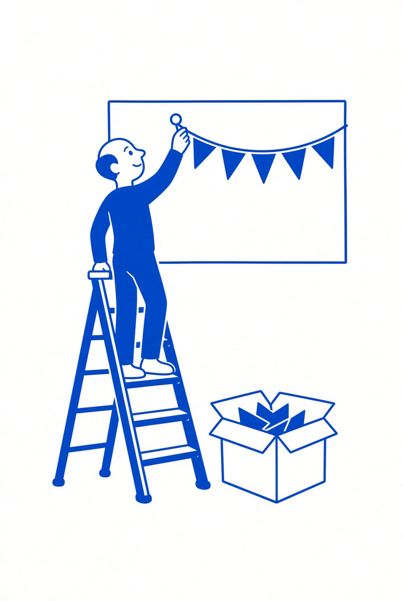
versieren
to decorate
regelmatigrang 4239House & homegetekend
- Scene
- one adult stands on a low stepladder and hangs a string of small paper flags across a wall, fixing one end to a hook; an open cardboard box of more flags stands on the floor. The flags are plain, with no letters.
- Must read
- a string of paper flags being hung across a wall.
- Avoid
- a picture painted on a canvas (schilderen); a parcel wrapped in paper (verpakken); a strip of wallpaper smoothed on a wall (behangen); a rope tied round firewood (binden).
- Alt text
- Iemand staat op een trapje en hangt een slinger met papieren vlaggetjes langs de muur.
- Example
- Wij versieren de kamer voor het feest.
We decorate the room for the party.
versieren.png · rang 4239 · B1 regelmatig · lexicon woorden.tsv
geen beeld
verspillen
to waste
regelmatigrang 4240Nature & weather
- Scene
- One adult stands at a laid table and tips a full plate of untouched food into a bin held at the table edge, the food halfway falling. On the table behind, more full plates with food sit waiting. The adult looks at the falling food. Nothing else in the frame.
- Must read
- the full untouched plate tipping into the bin.
- Avoid
- a person scraping a few leftovers from an empty plate (afruimen); a person eating hungrily (eten); a person putting a plate in the fridge (bewaren); a person throwing an old shoe in a bin (weggooien).
- Alt text
- Een volwassene laat vanaf een gedekte tafel een vol bord eten in een prullenbak glijden.
- Example
- Sam verspilt veel eten.
Sam wastes a lot of food.
verspillen.png · rang 4240 · B1 regelmatig · lexicon woorden.tsv
geen beeld
versturen
to dispatch
regelmatigrang 4241Movement & position
- Scene
- one adult stands at a free-standing postbox with a wide open mouth and lifts a tied-up flat parcel toward it with both hands, the parcel just reaching the opening; the postbox stands on a plain pavement, and no van or second person is in the frame.
- Must read
- a tied parcel being lifted into the wide opening of a postbox.
- Avoid
- a person handing a box to a friend (geven); a person carrying a box along (dragen); a person taping a box shut (inpakken); a phone with a picture on its screen (posten); a letter dropping through a slot.
- Alt text
- Iemand tilt een dichtgebonden pakket naar de brede opening van een vrijstaande brievenbus.
- Example
- Ik verstuur het pakket vandaag.
I am sending the parcel today.
versturen.png · rang 4241 · B1 regelmatig · lexicon woorden.tsv
geen beeld
beschuldigen
to accuse
regelmatigrang 4247Character & behaviour
- Scene
- one man holds a straight finger out at a woman who steps back with both palms open and mouth open. The room is a plain hallway, the man's brows are drawn down, and the woman's shoulders pull back; nobody else is present.
- Must read
- a straight finger held out at someone who steps back with open palms.
- Avoid
- a person scolding with a wagging finger (verwijten); a person shouting with cupped hands (roepen); a person asking a question (vragen); a person pointing at a distant tree (wijzen).
- Alt text
- Een man steekt een gestrekte vinger uit naar een vrouw die met open handen achteruit stapt.
- Example
- Hij beschuldigt zijn buurman van diefstal.
He accuses his neighbour of theft.
beschuldigen.png · rang 4247 · B1 regelmatig · lexicon woorden.tsv
geen beeld
logeren
to stay (as a guest)
regelmatigrang 4267Abstract & general
- Scene
- A child stands on a doorstep holding a small bag in one hand and a pillow under the other arm. A grandmother in the open doorway holds out a welcoming hand. In an upstairs window a made bed is visible, and a crescent moon hangs above the roof.
- Must read
- the bag and pillow at the door with the moon above the roof.
- Avoid
- a person lying asleep in a bed (slapen); a person ringing the bell with a bunch of flowers for a short visit (bezoeken); a child carrying large boxes and a lamp (verhuizen); a person unlocking their own front door (wonen)
- Alt text
- Een kind met een tas en een kussen staat voor een open deur; boven het dak hangt een maan.
- Example
- Eva logeert twee nachten bij haar oma.
Eva is staying two nights at her grandma's.
logeren.png · rang 4267 · B1 regelmatig · lexicon woorden.tsv

ondertekenen
to sign
regelmatigrang 4274Work & jobsgetekend
- Scene
- one adult sits at a plain desk and holds a single sheet flat with one hand; the pen in the other hand rests at the end of a dotted line near the bottom, a loose looping scribble just drawn along it. The rest of the sheet holds only greeked strokes, no readable letters.
- Must read
- a pen finishing a loose scribble on a dotted line at the foot of a sheet.
- Avoid
- a pencil drawing a picture (tekenen); fingers on a keyboard (typen); a rubber stamp on a folder (registreren); a sheet ripped in two (scheuren); two people at a table handing over keys (huren).
- Alt text
- Iemand zet met een pen een krul op de stippellijn onderaan een vel papier.
- Example
- U moet het contract hier ondertekenen.
You have to sign the contract here.
ondertekenen.png · rang 4274 · B1 regelmatig · lexicon woorden.tsv
geen beeld
bedoelen
to mean
regelmatigrang 4308Abstract & general
- Scene
- Two adults stand at a shelf holding three jars; one taps a finger on the middle jar while the other looks at it with a hand at the chin. The jars sit in a row at eye height, and nothing else is in the frame.
- Must read
- One finger tapping the middle of three jars while the other person looks.
- Avoid
- a person pointing at something far away (wijzen); a hand picking up one jar (kiezen); a person asking with an open hand (vragen); a person showing how a tool works (uitleggen).
- Alt text
- Een vinger tikt op de middelste van drie potten terwijl een ander met de hand aan de kin toekijkt.
- Example
- Bedoel je deze pen of die pen?
Do you mean this pen or that pen?
bedoelen.png · rang 4308 · B1 regelmatig · lexicon woorden.tsv
geen beeld
kwetsen
to hurt
regelmatigrang 4336Body & health
- Scene
- Two adults sit facing each other across a plain table. One has a hard face and a raised finger, mouth open as if speaking sharply. The other looks down at the tabletop with a hand pressed flat to the chest. Nothing else is on the table.
- Must read
- the lowered face and the hand on the chest of the listener.
- Avoid
- two people shouting with fists on the table (schelden); one person shoving the other (duwen); both people laughing together (plagen); an arm round a shoulder (troosten).
- Alt text
- Een man wijst met een strak gezicht, en de vrouw tegenover hem kijkt omlaag met een hand op haar borst.
- Example
- Jan kwetst Els met zijn harde woorden.
Jan hurts Els with his harsh words.
kwetsen.png · rang 4336 · B1 regelmatig · lexicon woorden.tsv
geen beeld
boeien
to captivate
regelmatigrang 4382Abstract & general
- Scene
- A child lies on the stomach with chin on both hands, eyes wide and mouth slightly open over an open book. A half-eaten sandwich lies forgotten beside it on the floor, and a pair of slippers is kicked off nearby. No other people are in the frame.
- Must read
- wide eyes and an open mouth over an open book.
- Avoid
- a child reading calmly (lezen); a child asleep on a book (slapen); a child watching a screen (kijken); a child listening to a story (luisteren).
- Alt text
- Een kind ligt voorover met open mond en grote ogen boven een opengeslagen boek; een boterham ligt vergeten ernaast.
- Example
- Dit boek boeit me van begin tot eind.
This book grips me from start to finish.
boeien.png · rang 4382 · B1 regelmatig · lexicon woorden.tsv
geen beeld
boeien (handboeien)
to handcuff
regelmatigrang 4382Abstract & general
- Scene
- A police officer closes two linked metal rings around the wrists of a man who holds his arms out in front of him; the officer holds the short chain between the rings, and the man looks down at his wrists.
- Must read
- two linked rings closed around a pair of wrists.
- Avoid
- a rope tied round a post (vastbinden); a hand gripping a wrist (vasthouden); a person led away by the arm (meenemen); a person searched at a wall (fouilleren).
- Alt text
- Een agent sluit twee verbonden ringen om de polsen van een man met de armen naar voren.
- Example
- De agent boeit de man.
The officer handcuffs the man.
boeien-handboeien.png · rang 4382 · B1 regelmatig · lexicon woorden.tsv
geen beeld
lanceren
to launch
regelmatigrang 4401Abstract & general
- Scene
- one slender rocket rises straight up from a platform beside a tall tower, with a thick column of smoke lines under it. Nothing else is in the sky, a small fence runs around the platform, and the ground below is flat and bare.
- Must read
- a slender rocket rising from its platform with a column of smoke below.
- Avoid
- an aeroplane in flight (vliegen); a balloon rising (stijgen); a ball falling down (vallen); a person jumping (springen).
- Alt text
- Een slanke raket komt recht omhoog van een platform naast een toren met rook onderaan.
- Example
- Het land lanceert een nieuwe raket.
The country launches a new rocket.
lanceren.png · rang 4401 · B1 regelmatig · lexicon woorden.tsv
geen beeld
lokken
to lure
regelmatigrang 4404Abstract & general
- Scene
- A rider on a small cart holds a long stick with a carrot hanging from its tip just ahead of a donkey's nose; the donkey stretches its neck and leans forward.
- Must read
- the carrot hanging just out of the donkey's reach.
- Avoid
- a person handing the carrot to the donkey (voeren); the donkey eating (eten); a rope round the donkey's neck pulling it (trekken); a person calling with a hand to the mouth (roepen).
- Alt text
- Een wortel hangt aan een stok net voor de neus van een ezel.
- Example
- De man lokt de ezel met een wortel.
The man lures the donkey with a carrot.
lokken.png · rang 4404 · B1 regelmatig · lexicon woorden.tsv
geen beeld
bemachtigen
to acquire with difficulty
regelmatigrang 4440Abstract & general
- Scene
- A woman at the front of a crowd at a ticket counter holds two small tickets high above her head in one hand, smiling, her other hand on the counter. Behind her several hands reach forward over her shoulders towards the counter.
- Must read
- two tickets held high among the reaching hands.
- Avoid
- a person paying coins at a till (kopen); a person holding up a trophy (winnen); a person standing calmly in a queue (wachten); a person running off with tickets (stelen).
- Alt text
- Een lachende vrouw houdt twee kaartjes boven haar hoofd terwijl achter haar veel handen naar voren reiken.
- Example
- Na lang wachten bemachtigt Anna twee kaartjes.
After a long wait Anna manages to get two tickets.
bemachtigen.png · rang 4440 · B1 regelmatig · lexicon woorden.tsv
geen beeld
bewonderen
to admire
regelmatigrang 4441Abstract & general
- Scene
- one adult stands in front of a large framed painting on a wall with the head tilted back, the hands clasped behind the back and a soft smile, the eyes on the painting; the painting shows a simple tree.
- Must read
- a tilted-back head and a smile in front of a large framed painting.
- Avoid
- a person painting a picture on an easel (schilderen); a person hanging a painting on a nail (ophangen); a person taking a photo with a camera (fotograferen); a person walking past a painting (lopen); a person pointing at a painting with a finger (wijzen).
- Alt text
- Iemand staat met het hoofd achterover en een glimlach voor een groot ingelijst schilderij met een boom.
- Example
- Ik bewonder haar moed.
I admire her courage.
bewonderen.png · rang 4441 · B1 regelmatig · lexicon woorden.tsv
geen beeld
feliciteren
to congratulate
regelmatigrang 4454Abstract & general
- Scene
- Two adults shake hands, one clasping the other's hand in both of hers, while the other holds a bunch of balloons on strings overhead. Both stand on a plain floor, both smile broadly, and a few loose streamers hang from the balloons.
- Must read
- A two-handed handshake with a bunch of balloons held overhead.
- Avoid
- flowers handed over (bedanken); an embrace (omhelzen); a hand waving (zwaaien); a gift passed between two people (geven).
- Alt text
- Twee mensen schudden elkaars hand terwijl een van hen een tros ballonnen aan touwtjes omhoog houdt.
- Example
- Ik feliciteer je met je nieuwe baan.
I congratulate you on your new job.
feliciteren.png · rang 4454 · B1 regelmatig · lexicon woorden.tsv
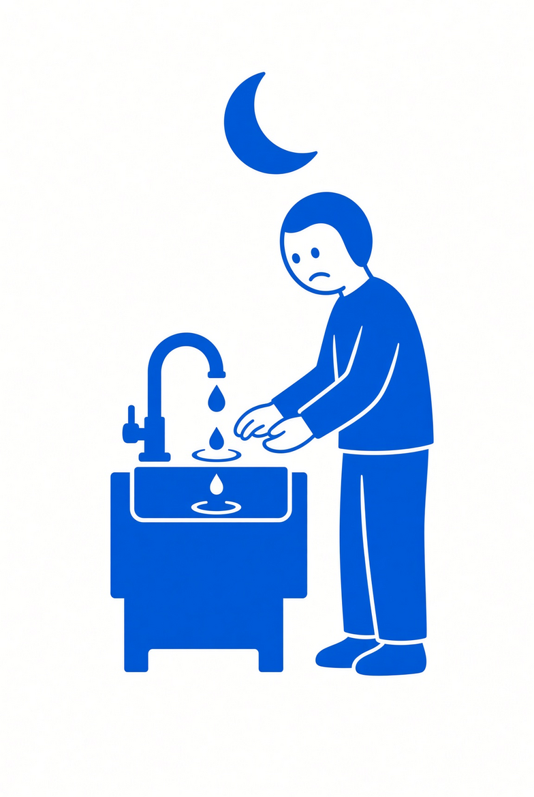
lekken
to leak
regelmatigrang 4467House & homegetekend
- Scene
- a kitchen tap over an empty sink lets a single drop fall from its spout although the handle is turned fully shut; a second drop has just splashed in the sink. One adult in pyjamas stands beside the sink at night and looks at the tap with a frown.
- Must read
- a drop falling from a tap that is turned off.
- Avoid
- water gushing from an open tap (stromen); hands under a running tap (wassen); water running off a soaked coat (druipen); rain falling outdoors (regenen).
- Alt text
- Uit een dichtgedraaide kraan valt één druppel in de lege gootsteen; iemand in pyjama kijkt er boos naar.
- Example
- Het dak lekt als het hard regent.
The roof leaks when it rains hard.
lekken.png · rang 4467 · B1 regelmatig · lexicon woorden.tsv
geen beeld
pleiten
to plead
regelmatigrang 4472Abstract & general
- Scene
- one adult in a long gown stands before a high bench, one arm stretched toward it with the palm open and the other hand on the chest, mouth open; a seated person behind the bench listens with chin on hand.
- Must read
- a gowned adult with an open palm stretched toward a high bench.
- Avoid
- a person with a hammer behind the bench (oordelen); a person speaking to a crowd (spreken); a person kneeling with clasped hands (smeken); a person reading from a sheet (lezen).
- Alt text
- Iemand in een lange toga staat voor een hoge tafel en strekt een open hand uit naar iemand erachter.
- Example
- De advocaat pleit voor zijn cliënt.
The lawyer pleads for his client.
pleiten.png · rang 4472 · B1 regelmatig · lexicon woorden.tsv
geen beeld
schrappen
to cross out
regelmatigrang 4481Abstract & general
- Scene
- one hand holds a pen and draws a straight line right through the middle of the second of four short rows of greeked scribble on a plain sheet; the other three rows stay untouched.
- Must read
- a pen drawing a straight line right through one row of scribble on a list.
- Avoid
- a pencil rubbing out a line with an eraser (gummen); a pen writing a new row (schrijven); scissors cutting the sheet (knippen); a sheet being torn in two (scheuren).
- Alt text
- Een hand trekt met een pen een rechte streep dwars door één regel krabbels op een lijstje.
- Example
- Ik schrap die naam van de lijst.
I cross that name off the list.
schrappen.png · rang 4481 · B1 regelmatig · lexicon woorden.tsv
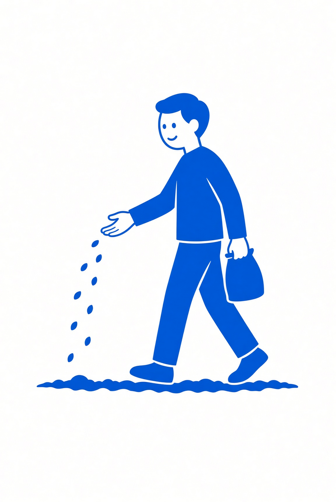
zaaien
to sow
regelmatigrang 4538Plants & farminggetekend
- Scene
- one adult walks along a strip of bare tilled soil and scatters seeds from a cupped hand in a wide arc, a small bag of seed hanging from the other arm; the seeds are in the air between the hand and the ground.
- Must read
- seeds flying from an open hand onto bare soil.
- Avoid
- a young plant with roots pressed into a hole (planten); a spade lifting soil (graven); water sprayed at a plant (spuiten); bread thrown to ducks (voeren).
- Contrast
- Pair with planten. Same prepared bed: a handful of seeds flies from an open hand here, one rooted plant goes into a hole there.
- Alt text
- Iemand loopt langs kale aarde en strooit met een wijd gebaar korrels uit de hand.
- Example
- De boer zaait in het voorjaar graan.
The farmer sows grain in spring.
zaaien.png · rang 4538 · B1 regelmatig · lexicon woorden.tsv
geen beeld
bedienen
to work (a machine)
regelmatigrang 4543Food & drink
- Scene
- a waiter holds a tray in one hand and with the other lowers a plate onto the table of a seated guest who looks up and smiles; the guest holds nothing, the table is otherwise bare, and no other diners are in the frame.
- Must read
- a waiter lowering a plate onto the table of a seated guest.
- Avoid
- a waiter walking with a tray (brengen); a guest eating (eten); a cook at a stove (koken); a person pouring a drink (schenken).
- Alt text
- Een ober zet een bord op het tafeltje van een zittende gast en houdt een blad in de andere hand.
- Example
- De ober bedient de gasten aan tafel.
The waiter serves the guests at the table.
bedienen.png · rang 4543 · B1 regelmatig · lexicon woorden.tsv
geen beeld
bedienen (machine)
to run (a machine)
regelmatigrang 4543Food & drink
- Scene
- One worker stands at a large machine with one hand on a long lever and the other hand on a round knob, eyes on the machine; the machine has dials without numbers and a wide base, and nobody else is in the frame.
- Must read
- one hand on a lever and the other hand on a knob of a large machine.
- Avoid
- a worker opening a panel with a tool (repareren); a hand pushing a switch (aanzetten); a person just watching the machine (kijken); a hand pushing a cart (duwen).
- Alt text
- Iemand staat bij een grote machine met een hand op een hendel en de andere op een knop.
- Example
- Zij bedient de machine in de fabriek.
She operates the machine in the factory.
bedienen-machine.png · rang 4543 · B1 regelmatig · lexicon woorden.tsv
geen beeld
juichen
to cheer
regelmatigrang 4558Sport & games
- Scene
- Three adults stand side by side facing front with both arms thrown straight up and the mouths wide open; the middle one has both feet just off the ground. Their faces are bright with joy. The background is empty, and no ball, flag or crowd appears in the frame.
- Must read
- three people with both arms straight up and mouths wide open.
- Avoid
- a single person jumping alone (springen); two people clapping their hands (klappen); a person waving a flag (zwaaien); a person shouting with hands cupped at the mouth (roepen); a stadium.
- Alt text
- Drie mensen staan naast elkaar met beide armen recht omhoog en wijd open monden.
- Example
- De fans juichen als het doelpunt valt.
The fans cheer when the goal is scored.
juichen.png · rang 4558 · B1 regelmatig · lexicon woorden.tsv
geen beeld
verschaffen
to provide
regelmatigrang 4581Abstract & general
- Scene
- In a school hall a cook stands behind a long serving table and hands one plate of food to a child at the front of a short queue. Three children wait behind with open hands held out. The plate is halfway between cook and child.
- Must read
- the plate passing from the cook to the child at the front.
- Avoid
- a person paying coins at a counter (betalen); a parent giving one box to one child at home (geven); a person pouring soup from a pot with nobody waiting (koken); a child eating alone at a table (eten); a person throwing leaflets in the air.
- Alt text
- Een man achter een tafel zet een bord eten in de handen van een kind; drie kinderen wachten.
- Example
- De school verschaft de kinderen een gratis lunch.
The school provides the children with a free lunch.
verschaffen.png · rang 4581 · B1 regelmatig · lexicon woorden.tsv
geen beeld
beschadigen
to damage
regelmatigrang 4589Money & trade
- Scene
- one small car stands side-on with the front bumper crumpled in and a long jagged crack running across the front window; the bumper is pushed in towards the engine and a few small pieces lie on the ground beneath it; no person is in the picture.
- Must read
- a crumpled bumper and a jagged crack across the windscreen of one car.
- Avoid
- a car being washed with a sponge (wassen); a person mending a car (herstellen); a car driving down a road (rijden); a car in a garage (parkeren); a car lifted by a crane (tillen).
- Alt text
- Een auto heeft een ingedeukte bumper en een scheur dwars over de voorruit.
- Example
- Een steen heeft de ruit beschadigd.
A stone has damaged the window.
beschadigen.png · rang 4589 · B1 regelmatig · lexicon woorden.tsv
geen beeld
bloggen
to blog
regelmatigrang 4592Abstract & general
- Scene
- One adult sits with legs folded on a sofa with a laptop on the knees, fingers on the keys. The screen shows one square picture above several lines of scribbles. A cushion lies beside the adult, and there are no other people or objects in the frame.
- Must read
- A laptop screen with a square picture above lines of scribbles.
- Avoid
- a person typing at a desk (typen); a pen writing on paper (schrijven); a person reading a book (lezen); a person taking a photo (fotograferen).
- Alt text
- Iemand zit op een bank met een laptop op schoot; op het scherm staat een vierkant plaatje boven rijen krabbels.
- Example
- Zij blogt elke week over reizen.
She blogs about travel every week.
bloggen.png · rang 4592 · B1 regelmatig · lexicon woorden.tsv
geen beeld
verbouwen
to rebuild
regelmatigrang 4639Plants & farming
- Scene
- One adult stands on a ladder holding a plank against an open wall frame of a half-finished house, a hammer in the other hand. The wall shows bare studs with a gap where a window will go. The ladder leans against it, and no other people or tools appear.
- Must read
- a plank held against an open wall frame with a hammer in the other hand.
- Avoid
- a person laying the first bricks on bare ground (bouwen); a person hammering a nail into a board (timmeren); a person painting a wall (schilderen); a person knocking down a wall (slopen).
- Alt text
- Iemand staat op een ladder en houdt een plank tegen een open muurvlak, een hamer in de andere hand.
- Example
- Wij verbouwen ons huis.
We are renovating our house.
verbouwen.png · rang 4639 · B1 regelmatig · lexicon woorden.tsv
geen beeld
verbouwen (gewas)
to grow (crops)
regelmatigrang 4639Plants & farming
- Scene
- One adult stands with a hoe between two long rows of leafy plants in an open field, bending slightly toward the soil; a full crate of harvested heads stands at the end of the rows, and the sky above is empty.
- Must read
- a hoe between long rows of plants with a full crate at the end.
- Avoid
- a person planting with a hand spade (planten); a person picking fruit from a tree (plukken); a person watering a pot (gieten); a tractor pulling a plough (ploegen).
- Alt text
- Iemand staat met een schoffel tussen twee lange rijen bladgewassen; aan het eind staat een volle kist.
- Example
- De boer verbouwt aardappels.
The farmer grows potatoes.
verbouwen-gewas.png · rang 4639 · B1 regelmatig · lexicon woorden.tsv
geen beeld
verenigen
to unite
regelmatigrang 4640Abstract & general
- Scene
- Two small groups of three adults each walk towards each other across an empty plain, caught at the last step: the front figures are joining shoulders so that both groups stand as one tight cluster in the middle. Nothing else in the picture.
- Must read
- two small groups closing into one tight cluster.
- Avoid
- two single people shaking hands (ontmoeten); a crowd already standing in a square (verzamelen); two groups facing each other with a gap and folded arms (ruziën); one group splitting in two (splitsen).
- Alt text
- Twee kleine groepen mensen lopen naar elkaar toe en staan in het midden als een dichte groep.
- Example
- De twee kleine clubs verenigen zich tot één club.
The two small clubs are merging into one club.
verenigen.png · rang 4640 · B1 regelmatig · lexicon woorden.tsv
geen beeld
verstoren
to disrupt
regelmatigrang 4642Abstract & general
- Scene
- One girl sits at a desk, pen stopped just above a sheet of paper, her head turned sharply towards the doorway. In the doorway a boy beats a large toy drum hung from his neck. Nothing else in the room but the desk and chair.
- Must read
- the stopped pen and the head turned towards the noisy boy.
- Avoid
- a girl calmly writing with her head down (werken); a boy knocking politely at the door (kloppen); two children laughing together at the desk (spelen); a girl with hands over her ears and no other person (storen); a boy shouting with no drum.
- Alt text
- Een meisje zit met haar pen stil boven het papier en kijkt naar een jongen met een trommel.
- Example
- Haar broer verstoort de rust met veel lawaai.
Her brother disturbs the peace with a lot of noise.
verstoren.png · rang 4642 · B1 regelmatig · lexicon woorden.tsv
geen beeld
belanden
to end up
regelmatigrang 4651Time
- Scene
- A man sits in a train seat with his bag on his knees and looks out of the window, his eyebrows raised in surprise, at a small plain station with an empty platform. The train has just stopped. No other passengers and no signs.
- Must read
- the surprised face at the window facing an unplanned empty station.
- Avoid
- a man stepping off the train with a suitcase and a smile (aankomen); a man calmly watching fields go by from his seat (reizen); a man running along the platform (rennen); a man asleep in his seat.
- Alt text
- Een man zit in de trein met zijn tas op schoot en kijkt verbaasd naar een leeg perron.
- Example
- Sam neemt de verkeerde trein en belandt in een andere stad.
Sam takes the wrong train and ends up in a different city.
belanden.png · rang 4651 · B1 regelmatig · lexicon woorden.tsv
geen beeld
beleggen
to invest
regelmatigrang 4652Money & trade
- Scene
- one adult stands with a hand on the chin before a large wall board that carries a single jagged line climbing from the lower left to the upper right; a tall stack of round coins stands on a small table beside.
- Must read
- a rising jagged line on a board with a person studying it and a stack of coins beside.
- Avoid
- a person counting coins in the palm (tellen); a person paying coins at a counter (betalen); a person dropping a coin into a piggy bank (sparen); a person sketching on a sheet (schetsen).
- Alt text
- Iemand staat met de hand aan de kin voor een bord met een stijgende lijn, naast een stapel munten.
- Example
- Hij belegt zijn geld in aandelen.
He invests his money in shares.
beleggen.png · rang 4652 · B1 regelmatig · lexicon woorden.tsv
geen beeld
beleggen (vergadering)
to convene (a meeting)
regelmatigrang 4652Money & trade
- Scene
- One adult stands at the head of an oval table with one hand raised flat for attention; four adults sit around the table with their faces turned toward the standing adult, hands resting on the table, with nothing else on it.
- Must read
- a standing adult at the head of an oval table with a raised hand, four seated adults looking toward them.
- Avoid
- a person talking at a lectern to rows of seats (praten); a person handing out sheets around a table (uitdelen); a seated group with nobody standing (vergaderen); a person knocking at a door (kloppen).
- Alt text
- Een persoon staat aan het hoofd van een ovale tafel met een hand omhoog; vier anderen kijken toe.
- Example
- De directeur belegt morgen een vergadering.
The director is calling a meeting tomorrow.
beleggen-vergadering.png · rang 4652 · B1 regelmatig · lexicon woorden.tsv
geen beeld
benadrukken
to emphasize
regelmatigrang 4653Abstract & general
- Scene
- one adult leans forward over a table and jabs one stiff finger down onto one spot of the tabletop while the other palm stays open and raised; mouth open, a listener nodding.
- Must read
- a stiff finger jabbing down on one spot with the other palm raised.
- Avoid
- a finger stretched out toward something far away (wijzen); a person shouting (schreeuwen); fingers counting (tellen); a fist banging the table (slaan).
- Alt text
- Iemand buigt voorover en tikt met een stijve wijsvinger op een plek van het tafelblad, de andere hand open omhoog.
- Example
- Ze benadrukt dat dit belangrijk is.
She stresses that this is important.
benadrukken.png · rang 4653 · B1 regelmatig · lexicon woorden.tsv

boren
to drill
regelmatigrang 4659Technology & toolsgetekend
- Scene
- one adult stands at a wall holding an electric drill level with both hands, the bit going into the wall; a small cloud of dust comes out of the hole and a wall plug waits on a shelf below. The wall is a wide solid cobalt panel filling the right side, and the drill bit is buried in the wall surface with dust puffing from the hole.
- Must read
- a drill bit going into a wall.
- Avoid
- a hammer on a nail (maken); a spanner on a bicycle (repareren); a sledgehammer on bricks (slopen); a saw through a plank (zagen).
- Alt text
- Iemand houdt een elektrisch apparaat met beide handen tegen de muur; uit het gaatje komt stof.
- Example
- Mijn vader boort een gat in de muur.
My father drills a hole in the wall.
boren.png · rang 4659 · B1 regelmatig · lexicon woorden.tsv
geen beeld
pompen
to pump
regelmatigrang 4694Technology & tools
- Scene
- one adult kneels beside a bicycle whose front tyre is still a little soft, with one hand holding a tall hand pump upright on the valve and the other pushing the handle down; the tyre is round and firm only above the pump.
- Must read
- a tall hand pump pressed on a bicycle valve with the handle pushed down.
- Avoid
- a person riding the bicycle (fietsen); a person tightening a bolt with a spanner (draaien); a person holding a flat tyre (herstellen); a person washing the bicycle (wassen); a person blowing up a balloon (blazen).
- Alt text
- Iemand knielt naast een fiets en duwt de steel van een lange cilinder omlaag op het ventiel.
- Example
- Ik pomp mijn fietsband zelf op.
I pump up my bike tyre myself.
pompen.png · rang 4694 · B1 regelmatig · lexicon woorden.tsv
geen beeld
racen
to race
regelmatigrang 4696Sport & games
- Scene
- Two low open racing cars with helmeted drivers speed side by side along a straight road, one nose ahead, with long speed lines streaming behind them; the road is plain, the drivers look straight ahead, and no crowd or finish line is in the frame.
- Must read
- Two low racing cars side by side with speed lines behind.
- Avoid
- a car in city traffic (rijden); two runners side by side (rennen); two cyclists (fietsen); a person holding up a cup (winnen).
- Alt text
- Twee lage open wagens met helmen erin rijden naast elkaar over een rechte baan met strepen erachter.
- Example
- De jongens racen op hun fietsen naar school.
The boys race to school on their bikes.
racen.png · rang 4696 · B1 regelmatig · lexicon woorden.tsv
geen beeld
bezetten
to occupy
regelmatigrang 4732War & military
- Scene
- In a crowded train compartment one large bag sits alone on a window seat, while an adult man in the aisle stands holding a hanging strap and looks down at the bag. Nothing else is drawn, no other passengers close by.
- Must read
- the big bag taking up the seat while the man stands.
- Avoid
- a man sitting on the seat reading (zitten); a ticket with a seat marked on it (reserveren); a man lifting a bag onto a rack (leggen); a woman asleep across two seats (slapen).
- Alt text
- In een trein staat een man in het gangpad naast een stoel met een grote tas erop.
- Example
- Haar grote tas bezet de hele stoel in de trein.
Her big bag takes up the whole seat on the train.
bezetten.png · rang 4732 · B1 regelmatig · lexicon woorden.tsv
geen beeld
reserveren
to reserve
regelmatigrang 4765Abstract & general
- Scene
- one adult stands with a phone at the ear and a free hand pointing at a small restaurant table set with two plates, a small folded card standing in the middle of the table.
- Must read
- a phone at the ear of an adult beside a table with a single standing card.
- Avoid
- a person ordering from a waiter (bestellen); a person eating at the table (eten); a person paying at a till (betalen); a person calling in the street (bellen).
- Alt text
- Iemand houdt een telefoon aan het oor naast een gedekt tafeltje met een staand kaartje in het midden.
- Example
- Ik reserveer een tafel voor vier personen.
I am booking a table for four.
reserveren.png · rang 4765 · B1 regelmatig · lexicon woorden.tsv
geen beeld
schetsen
to sketch
regelmatigrang 4767Arts & media
- Scene
- one adult sits on a stool with a flat board on the knees, a pencil mid stroke on a sheet where quick loose lines form the rough outline of a house; the eyes are on the paper.
- Must read
- a pencil mid stroke making quick loose lines that form a rough house outline.
- Avoid
- a person filling an outline with hatching using a crayon (kleuren); a person painting at an easel (schilderen); a person tracing a finished picture with a ruler (tekenen); a person writing lines at a desk (schrijven).
- Alt text
- Iemand zit met een plank op de knieën en maakt met een potlood snelle lijnen die een huisje vormen.
- Example
- Ze schetst een plattegrond van het huis.
She sketches a floor plan of the house.
schetsen.png · rang 4767 · B1 regelmatig · lexicon woorden.tsv

scheuren
to tear
regelmatigrang 4768Body & healthgetekend
- Scene
- one adult holds a sheet of paper in both hands and pulls the hands apart in opposite directions, the sheet ripping down the middle with a jagged edge; both halves are still in the hands.
- Must read
- a sheet of paper ripping in two between two hands.
- Avoid
- scissors cutting a strip (knippen); two tangled cords pulled apart (scheiden); a crumpled sheet dropped in a bin (verwijderen); a T-shirt folded in half (vouwen).
- Contrast
- Pair with knippen. Same sheet of paper in the same hands: the hands pull the sheet apart here, the scissors cut a clean strip there.
- Alt text
- Iemand trekt met twee handen een vel papier uit elkaar; er loopt een rafelige rand door het midden.
- Example
- Pas op, anders scheur je het papier.
Be careful, or you will tear the paper.
scheuren.png · rang 4768 · B1 regelmatig · lexicon woorden.tsv
geen beeld
waarborgen
to ensure, guarantee
regelmatigrang 4781Abstract & general
- Scene
- One adult stands at a school gate in the middle of the road with one arm raised, palm open, facing a small car that has stopped. Behind the adult three children walk across the road together. The gate and a low wall are visible; nothing else in the picture.
- Must read
- the raised hand holding the car back while the children walk over.
- Avoid
- an adult hugging a child close (beschermen); children walking over a zebra crossing with no adult (oversteken); a traffic light; a police badge or uniform; a car driving past fast.
- Alt text
- Een man staat midden op straat met een opgestoken hand voor een auto; achter hem lopen kinderen over de weg.
- Example
- De man bij het schoolhek waarborgt de veiligheid van de kinderen.
The man at the school gate guarantees the children's safety.
waarborgen.png · rang 4781 · B1 regelmatig · lexicon woorden.tsv
geen beeld
genereren
to generate
regelmatigrang 4797Abstract & general
- Scene
- Inside a bare factory hall one adult in overalls stands beside a large machine with thick pipes and a round dial. A heavy cable runs from the machine through the wall to a row of three small houses outside, where lamps in the windows glow.
- Must read
- the heavy cable running from the machine to the houses with glowing lamps.
- Avoid
- a person carrying boxes off a conveyor belt (produceren); a person building a box from planks (maken); a person pedalling a bicycle with a lamp (fietsen); a wind turbine or a dam; a plug in a wall socket.
- Alt text
- Een man in overall staat bij een grote machine; een dikke kabel loopt naar huizen met brandende lampen.
- Example
- De machine genereert stroom voor het hele dorp.
The machine generates power for the whole village.
genereren.png · rang 4797 · B1 regelmatig · lexicon woorden.tsv
geen beeld
protesteren
to protest
regelmatigrang 4822Society & politics
- Scene
- a group of people stand close together, each holding a blank board on a stick high above the head, mouths wide open and one fist raised. The crowd stands on an open street, the boards are plain and square, and no building or vehicle is in the frame.
- Must read
- several people with blank boards on sticks raised high and mouths open.
- Avoid
- a calm group walking together (wandelen); a crowd cheering at a match (juichen); a choir singing (zingen); people queueing (wachten).
- Alt text
- Een groep mensen houdt lege borden op stokken omhoog en roept met open mond.
- Example
- De mensen protesteren tegen het nieuwe plan.
The people protest against the new plan.
protesteren.png · rang 4822 · B1 regelmatig · lexicon woorden.tsv

schaken
to play chess
regelmatigrang 4825Sport & gamesgetekend
- Scene
- two adults sit facing each other over a chessboard on a small table; one lifts a knight a little above the board to move it, while the other watches with the chin on one hand.
- Must read
- a hand lifting a chess piece above a chessboard.
- Avoid
- dice rolled on a board (spelen); a person alone with chin on fist and a thought bubble (denken); two people on a blanket with a basket (picknicken); cards held in a fan.
- Alt text
- Twee mensen zitten tegenover elkaar aan een bord met stukken; één tilt een paardje boven een vakje.
- Example
- Mijn opa wil met mij schaken.
My grandfather wants to play chess with me.
schaken.png · rang 4825 · B1 regelmatig · lexicon woorden.tsv

skiën
to ski
regelmatigrang 4827Sport & gamesgetekend
- Scene
- one adult goes down a snowy slope on two parallel skis, knees bent, two poles held back by the sides; a few pine trees stand on the slope behind. Nobody else is on the slope.
- Must read
- a person going downhill on skis with bent knees and poles.
- Avoid
- a skater on ice (schaatsen); a child on a playground slide (glijden); a person walking in snow (lopen); a child on a sledge.
- Alt text
- Iemand gaat met gebogen knieën en twee stokken een besneeuwde helling af.
- Example
- Wij skiën in de winter in Oostenrijk.
We ski in Austria in winter.
skien.png · rang 4827 · B1 regelmatig · lexicon woorden.tsv
geen beeld
verlichten
to light up
regelmatigrang 4835House & home
- Scene
- a plain lamp hangs from the ceiling of an empty room and straight lines fan out from it downward over a table and a chair that stand below, the lines reaching the floor.
- Must read
- straight lines fanning down from a ceiling lamp over a table and chair.
- Avoid
- a person pressing a switch on a wall (aandoen); a candle with a flame (branden); the sun in a window (schijnen); a hand-held torch (zaklamp); a person carrying a lamp.
- Alt text
- Een lamp hangt aan het plafond en rechte lijnen waaieren omlaag over een tafel en een stoel.
- Example
- De lamp verlicht de hele kamer.
The lamp lights up the whole room.
verlichten.png · rang 4835 · B1 regelmatig · lexicon woorden.tsv
geen beeld
verlichten (ontlasten)
to relieve
regelmatigrang 4835House & home
- Scene
- one adult is bent forward under a large sack on the back; a second adult steps up behind and lifts the underside of the sack with both hands so that it rises off the first person's back, who is starting to straighten.
- Must read
- a second person's two hands lifting a sack off a bent person's back.
- Avoid
- two people carrying a sack between them (dragen); a person lifting a sack from the floor alone (heffen); a person handing a box to another (geven); a person patting a back (troosten); a bent person alone.
- Alt text
- Een gebogen persoon heeft een zak op de rug terwijl een tweede persoon de onderkant met beide handen omhoog tilt.
- Example
- Mijn broer verlicht mijn werk door te helpen.
My brother lightens my work by helping.
verlichten-ontlasten.png · rang 4835 · B1 regelmatig · lexicon woorden.tsv
geen beeld
acteren
to act
regelmatigrang 4841Arts & media
- Scene
- one adult stands in the middle of a bare stage with the arms flung wide and the head thrown back, the mouth open and one foot stepped forward, a single spotlight cone slanting down from the top corner; the edge of a curtain hangs at each side.
- Must read
- an adult with arms flung wide in a single spotlight on a bare stage.
- Avoid
- a person singing into a microphone (zingen); a person dancing with a partner (dansen); a person watching from a seat (kijken); a person talking on a phone (bellen); a person bowing at the end (buigen).
- Alt text
- Iemand staat in een lichtkegel op een lege toneelvloer met wijd gespreide armen en open mond.
- Example
- Zij wil later in films acteren.
She wants to act in films later.
acteren.png · rang 4841 · B1 regelmatig · lexicon woorden.tsv
geen beeld
belonen
to reward
regelmatigrang 4845Abstract & general
- Scene
- A man crouches in front of a boy and hands him a small wrapped gift. Behind them the boy's room is tidy: a made bed and toys neatly in a box. The boy smiles up at the man.
- Must read
- the gift handed over in a room that is tidy.
- Avoid
- a man handing a gift to a boy in a messy room (geven); a man holding out a cake to several children (trakteren); a man clapping his hands (prijzen); a man handing coins over a counter (betalen).
- Alt text
- Een man hurkt voor een jongen met een klein pakje; achter hen ligt het speelgoed netjes in een kist.
- Example
- Vader beloont Sam met een cadeau.
Father rewards Sam with a present.
belonen.png · rang 4845 · B1 regelmatig · lexicon woorden.tsv
geen beeld
berekenen
to compute
regelmatigrang 4846Thought & knowledge
- Scene
- One adult sits at a desk with a finger on a key of a small handheld calculator whose screen shows scribbles, holding a pen over a pad in the other hand.
- Must read
- A finger on a key of a handheld calculator whose screen shows scribbles.
- Avoid
- a person counting coins (tellen); a pen writing a letter (schrijven); a person holding a tape measure (meten); a person on a scale (wegen).
- Alt text
- Aan een bureau tikt iemand op een toets van een klein apparaat en houdt een pen boven een blok.
- Example
- Hij berekent hoeveel geld hij nodig heeft.
He calculates how much money he needs.
berekenen.png · rang 4846 · B1 regelmatig · lexicon woorden.tsv
geen beeld
discussiëren
to debate
regelmatigrang 4856Communication & language
- Scene
- four adults sit around a round table, two leaning forward with an open palm and open mouth, one with a raised finger and one with folded arms and a frown; no papers on the table.
- Must read
- several open mouths around a table with palms and a finger raised.
- Avoid
- two friends chatting over a cup (praten); a teacher talking to a class (uitleggen); one person shouting alone (schreeuwen); people raising hands in a vote (stemmen).
- Alt text
- Vier mensen zitten rond een tafel met open monden; een steekt een vinger op en een ander fronst.
- Example
- Wij discussiëren over het nieuwe plan.
We are discussing the new plan.
discussieren.png · rang 4856 · B1 regelmatig · lexicon woorden.tsv
geen beeld
kleden
to dress
regelmatigrang 4867Clothing & appearance
- Scene
- one adult kneels in front of a small child who stands with both arms raised; the adult pulls a jumper down over the child's arms, the head not yet through the neck opening.
- Must read
- an adult kneeling, pulling a jumper over the raised arms of a standing child.
- Avoid
- a person putting on their own coat (aantrekken); a child wearing only a hat (opzetten); a person washing a child in a tub (wassen); a person tying a child's shoe (strikken).
- Alt text
- Een volwassene zit op de knieën en trekt een trui over de opgeheven armen van een staand kind.
- Example
- De moeder kleedt het kind voor het naar school gaat.
The mother dresses the child before it goes to school.
kleden.png · rang 4867 · B1 regelmatig · lexicon woorden.tsv
geen beeld
verhinderen
to prevent
regelmatigrang 4891Abstract & general
- Scene
- One boy stands in a garden beside a low fence and watches. At the fence a dog stands with its front paws on the top rail, head turned towards the street beyond, and the fence plainly stays between the dog and the street. Nothing else is in the frame.
- Must read
- the fence standing between the dog and the street.
- Avoid
- a boy holding a dog on a lead (tegenhouden); a barrier of crates across a road (blokkeren); a raised flat hand (stoppen); a gate with a padlock (afsluiten).
- Alt text
- Een hond staat met zijn poten tegen een laag hek en een jongen kijkt toe.
- Example
- Het hek verhindert dat de hond de straat op loopt.
The fence prevents the dog from walking out into the street.
verhinderen.png · rang 4891 · B1 regelmatig · lexicon woorden.tsv
geen beeld
benutten
to make use of
regelmatigrang 4908Abstract & general
- Scene
- One adult kneels beside a wooden staircase, sliding the last book onto a shelf that fills the empty space under the stairs; a small lamp already stands on the shelf, and a tape measure hangs from her pocket. No other furniture.
- Must read
- the shelf filling the space under the stairs.
- Avoid
- a person sawing planks in a workshop (bouwen); a person holding a hammer and nails (timmeren); an empty space under the stairs with nothing in it; a person using a tool at a table (gebruiken).
- Alt text
- Een vrouw plaatst boeken en een lamp op een plank in de nis onder een trap.
- Example
- Eva benut de ruimte onder de trap.
Eva makes use of the space under the stairs.
benutten.png · rang 4908 · B1 regelmatig · lexicon woorden.tsv
geen beeld
rapporteren
to file a report
regelmatigrang 4948Work & jobs
- Scene
- one adult stands in front of a plain desk with an open folder in one hand and the other palm turned up, the mouth open in mid-speech; behind the desk a second adult leans in with the chin on a hand.
- Must read
- an open folder and a raised palm in front of a seated listener.
- Avoid
- a person passing a folder across a desk (geven); a person standing at a board before a class (onderwijzen); a person writing at a desk (schrijven); two people with a bar each above the head (praten); a graph.
- Alt text
- Iemand staat voor een bureau met een open map en een opgeheven handpalm; erachter luistert een ander.
- Example
- Hij rapporteert de cijfers aan de directeur.
He reports the figures to the director.
rapporteren.png · rang 4948 · B1 regelmatig · lexicon woorden.tsv
geen beeld
hechten
to stitch (a wound)
regelmatigrang 4990Movement & position
- Scene
- One doctor in gloves bends over a patient's forearm and pulls a thread through the edges of a cut with a curved needle; a few stitches already close part of the cut. The patient lies still, the forearm resting on a small table, and no other people or instruments appear in the frame.
- Must read
- a curved needle and thread closing a cut that already has a few stitches.
- Avoid
- a person sewing cloth on a machine (naaien); a doctor winding a bandage (behandelen); a person sticking a strip on a knee (plakken); a person washing a hand (wassen).
- Alt text
- Een dokter buigt zich over een arm en haalt met een gebogen naald draad door een snee.
- Example
- De dokter hecht de wond met vijf steken.
The doctor stitches the wound with five stitches.
hechten.png · rang 4990 · B1 regelmatig · lexicon woorden.tsv
geen beeld
hechten (aan)
to be attached to
regelmatigrang 4990Movement & position
- Scene
- One small child presses a worn teddy bear to the chest with both arms and turns away from a grown-up's outstretched hand; the grown-up is cropped at the shoulder and only the reaching arm shows, the floor plain.
- Must read
- a child holding a worn teddy bear tight and turning away from an outstretched hand.
- Avoid
- a person holding a framed photo against the chest (koesteren); a child handing a toy over (geven); a child grabbing a toy from a shelf (pakken); a child throwing a toy (gooien).
- Alt text
- Een kind drukt een versleten beer met beide armen tegen de borst en draait zich weg van een uitgestoken hand.
- Example
- Het kind hecht veel aan zijn beer.
The child is very attached to his bear.
hechten-aan.png · rang 4990 · B1 regelmatig · lexicon woorden.tsv
geen beeld
interviewen
to interview
regelmatigrang 4997Work & jobs
- Scene
- one adult stands in front of a second adult and holds a handheld microphone with one arm stretched out towards the second adult's mouth, while the other hand holds a small notepad against the chest; the second adult has the mouth open and one hand raised.
- Must read
- an arm holding a microphone out to a second person's mouth.
- Avoid
- two people talking at a table (praten); a person speaking into a phone (bellen); a person writing in a notebook alone (noteren); a person giving a speech on a stage (spreken); a person filming with a camera (filmen).
- Alt text
- Iemand houdt een microfoon voor de mond van een ander die met een opgeheven hand praat.
- Example
- De journalist interviewt de burgemeester.
The journalist interviews the mayor.
interviewen.png · rang 4997 · B1 regelmatig · lexicon woorden.tsv

schoppen
to kick
regelmatigrang 5293Movement & positiongetekend
- Scene
- one child stands on an empty pavement and strikes an empty tin can with the toe of one shoe; the can has just left the foot and flies forward with two short motion lines, and the kicking leg is still stretched out. No ball, no goal and nobody else in the picture.
- Must read
- a toe striking a tin can that has just left the foot.
- Avoid
- a ball struck towards a goal with a net (voetballen); a foot caught on a stone (struikelen); a crate pushed with both palms (duwen); a can dropped into a bin (weggooien).
- Alt text
- Een kind trapt met de punt van de schoen tegen een leeg blikje, dat net wegvliegt.
- Example
- De jongen schopt de bal over het hek.
The boy kicks the ball over the fence.
schoppen.png · rang 5293 · B1 regelmatig · lexicon woorden.tsv
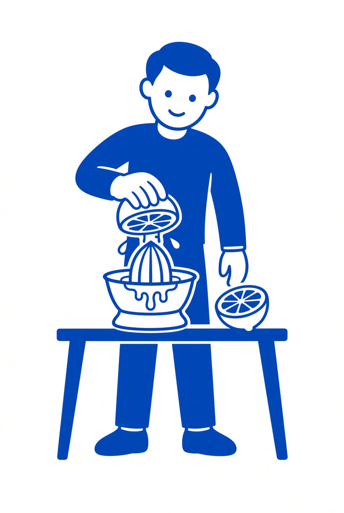
persen
to squeeze (juice)
regelmatigrang 5351Food & drinkgetekend
- Scene
- one adult presses half a lemon down onto a ribbed citrus juicer with the palm, twisting it; juice runs into the dish below and the other half waits on the table.
- Must read
- half a lemon pressed onto a juicer.
- Avoid
- a wet cloth twisted over a bucket (wringen); a knife cutting fruit (snijden); a jug pouring into a glass (gieten); a potato being peeled (schillen).
- Alt text
- Iemand drukt met de handpalm een halve citroen op een geribbeld schaaltje; het sap loopt eronder.
- Example
- Ik pers vier sinaasappels voor het ontbijt.
I squeeze four oranges for breakfast.
persen.png · rang 5351 · B1 regelmatig · lexicon woorden.tsv
geen beeld
haasten
to hurry
regelmatigrang 6088Abstract & general
- Scene
- One adult hurries along a pavement with a coat flying and a bag swinging, glancing at a watch on the wrist of a bent arm. The pavement is empty of other walkers, the knees lift high, and the scarf trails behind.
- Must read
- A hurrying adult glancing at a wristwatch with a coat flying behind.
- Avoid
- a person running with nothing else (rennen); a person strolling (lopen); a person tapping a foot (wachten); an arm stretched after a bus (missen).
- Alt text
- Iemand loopt snel over een stoep met een wapperende jas en kijkt op een horloge om de pols.
- Example
- Ik haast me, want de trein vertrekt zo.
I am hurrying because the train leaves soon.
haasten.png · rang 6088 · B1 regelmatig · lexicon woorden.tsv

tanken
to fill up (fuel)
regelmatigrang 6199Transport & travelgetekend
- Scene
- one adult stands at a petrol pump holding the nozzle in the open fuel flap of a car, the hose looping back to the pump; the display on the pump is blank. The whole car is shown, including its rear bumper and both wheels, small enough that all of it stays fully inside the frame with white space on the right; place the pump, person and car in the middle of the frame.
- Must read
- a fuel nozzle in a car's open fuel flap.
- Avoid
- a car standing in a bay (parkeren); a bank card held to a terminal (pinnen); water sprayed from a hose (spuiten); a car being washed (wassen).
- Alt text
- Iemand houdt bij een pomp het mondstuk van de slang in de opening van de auto.
- Example
- Wij moeten nog tanken voor de lange reis.
We still have to fill up before the long journey.
tanken.png · rang 6199 · B1 regelmatig · lexicon woorden.tsv

tillen
to lift
regelmatigrang 6204Movement & positiongetekend
- Scene
- one adult raises a suitcase above the head with both hands to put it on a high luggage rack, arms straight and up on the toes. A seat stands below the rack and the coat hangs open; nobody else is in the picture.
- Must read
- a suitcase raised above the head with straight arms.
- Avoid
- a box carried against the chest (dragen); a box handed between two people (geven); a box set down on the floor (zetten); fingertips stretched towards a jar (reiken).
- Alt text
- Iemand houdt een koffer met gestrekte armen boven het hoofd, onder een hoog rek.
- Example
- Ik kan deze zware koffer niet tillen.
I cannot lift this heavy suitcase.
tillen.png · rang 6204 · B1 regelmatig · lexicon woorden.tsv
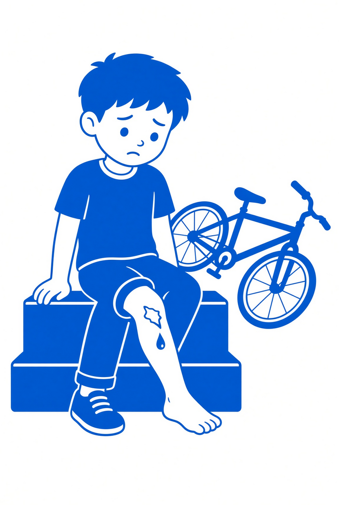
bloeden
to bleed
regelmatigrang 6371Body & healthgetekend
- Scene
- one child sits on a step looking at a grazed knee; a small drop runs down the shin from the scrape and a bicycle lies on its side behind. One hand rests beside the knee, not touching it.
- Must read
- a drop running down from a grazed knee.
- Avoid
- a bandage wound round an arm (verbinden); tears on the cheeks (huilen); a foot caught on a stone (struikelen); a knee bumped on a table (stoten).
- Alt text
- Een kind zit op een stoep en kijkt naar een geschaafde knie; er loopt een druppel langs het been.
- Example
- Mijn vinger bloedt na de val.
My finger is bleeding after the fall.
bloeden.png · rang 6371 · B1 regelmatig · lexicon woorden.tsv
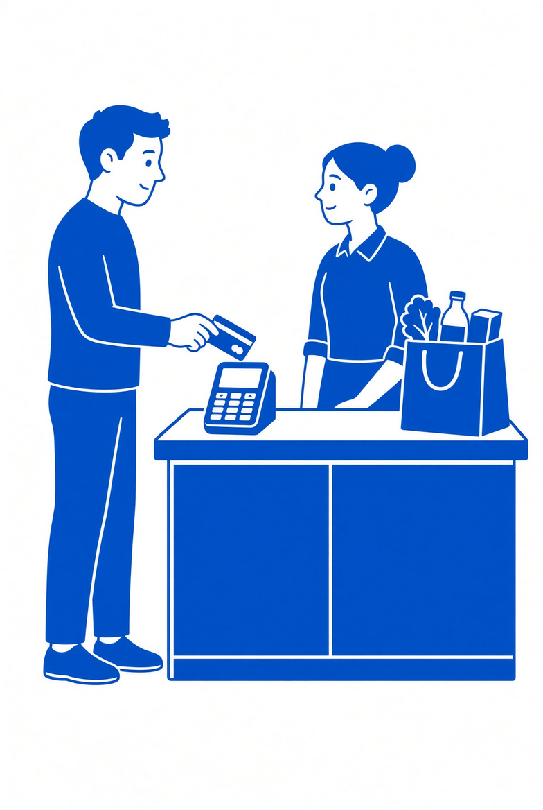
pinnen
to pay by card
regelmatigrang 6567Money & tradegetekend
- Scene
- one adult holds a bank card against a small card terminal on a shop counter, the screen of the terminal blank; the shop assistant behind the counter waits. A bag of shopping stands on the counter beside the terminal.
- Must read
- a bank card held to a card terminal.
- Avoid
- coins and notes on a counter (betalen); a cashier handing over a bag (verkopen); a phone held to the ear (bellen); a key pushed into a lock (steken).
- Alt text
- Iemand houdt een bankpasje tegen een klein apparaat op de toonbank.
- Example
- Kan ik hier met mijn pas pinnen?
Can I pay by card here?
pinnen.png · rang 6567 · B1 regelmatig · lexicon woorden.tsv

schillen
to peel
regelmatigrang 7584Food & drinkgetekend
- Scene
- one adult sits at a table and takes the skin off a potato with a small knife, a long curl of peel hanging from the blade into a bowl; finished potatoes sit in a pan of water.
- Must read
- a long curl of peel coming off a potato.
- Avoid
- a knife through bread (snijden); butter spread on bread (smeren); half a lemon pressed onto a juicer (persen); a pan on a stove (koken).
- Alt text
- Iemand haalt met een mesje een lange krul van een aardappel af boven een kom.
- Example
- Ik schil de appels voor de taart.
I peel the apples for the pie.
schillen.png · rang 7584 · B1 regelmatig · lexicon woorden.tsv
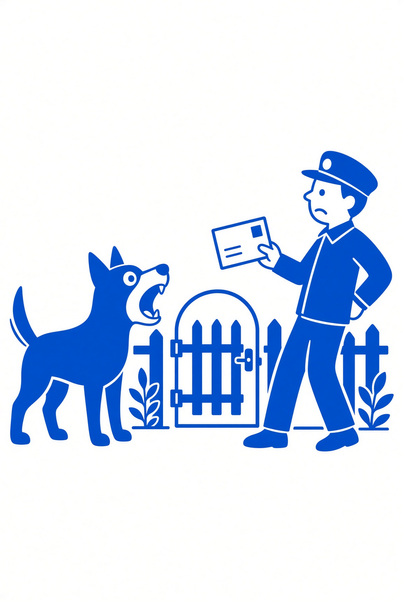
blaffen
to bark
regelmatigrang 7922Animalsgetekend
- Scene
- one dog stands with the front legs planted and the mouth wide open towards a postal worker at a garden gate; the postal worker leans back, holding an envelope. The dog's tail is straight up and its ears point forward.
- Must read
- a dog with its mouth wide open at a gate.
- Avoid
- a lion with its mouth open on a rock (brullen); a person shouting with cupped hands (roepen); a dog asleep (slapen); a dog on a lead.
- Alt text
- Een hond staat stevig op de voorpoten met de bek wijd open naar iemand bij het hek.
- Example
- De hond van de buren blaft de hele nacht.
The neighbours' dog barks all night.
blaffen.png · rang 7922 · B1 regelmatig · lexicon woorden.tsv

roeren
to stir
regelmatigrang 7950Food & drinkgetekend
- Scene
- one adult sits at a small table and turns a teaspoon round inside a cup of tea, a curved swirl line on the surface showing the circle; the other hand holds the cup steady by its handle and a sugar bowl stands beside it. No stove and no pan.
- Must read
- a spoon going round in a cup, with a swirl on the surface.
- Avoid
- a wooden spoon in a pan on a stove (koken); two streams poured into one bowl (mengen); a closed bottle in a fist (schudden); lips at a raised spoon (proeven).
- Alt text
- Iemand draait een theelepeltje rond in een kopje; op de thee staat een kringetje.
- Example
- Je moet de saus blijven roeren, anders brandt hij aan.
You have to keep stirring the sauce, otherwise it burns.
roeren.png · rang 7950 · B1 regelmatig · lexicon woorden.tsv
geen beeld
ergeren
to annoy
regelmatigrang 8037Emotion & feeling
- Scene
- one adult stands at the left with a hand pressed against one ear, brows drawn tight and the mouth thin; at the right in the distance a second adult beats on a big round drum.
- Must read
- an adult with a hand pressed to the ear and a tight frown, glaring at a distant drummer.
- Avoid
- a person with both hands over the face crying (huilen); a person shouting with fists raised (schreeuwen); a person slumped at a table yawning (vervelen); a person with a hand cupped behind the ear to hear better (luisteren).
- Alt text
- Iemand drukt een hand tegen het oor en fronst naar een ander op afstand die op een grote trommel slaat.
- Example
- Ik erger me aan de harde muziek van mijn buurman.
I get annoyed by my neighbour's loud music.
ergeren.png · rang 8037 · B1 regelmatig · lexicon woorden.tsv
geen beeld
vergissen
to be mistaken
regelmatigrang 8082Abstract & general
- Scene
- one woman reaches out a hand to greet a man she does not know; he tilts his head with a puzzled look and turns his palms up, and her hand stops halfway.
- Must read
- a greeting hand stopped halfway toward a stranger with a puzzled face and open palms.
- Avoid
- two friends greeting each other warmly (groeten); a person waving across a street (zwaaien); two people shaking hands (schudden); a person recognising a friend with a smile (herkennen).
- Alt text
- Een vrouw steekt een hand naar een vreemde man, die verbaasd zijn hoofd scheef houdt en zijn handpalmen omhoog heeft.
- Example
- Sorry, ik vergis me!
Sorry, I am mistaken!
vergissen.png · rang 8082 · B1 regelmatig · lexicon woorden.tsv
geen beeld
verontschuldigen
to excuse (oneself )
regelmatigrang 8307Abstract & general
- Scene
- One adult lays a hand on the chest and bows the head toward a second adult who sits beside a toppled cup with a spill spreading across the table. The table is plain and low, the second adult sits with arms down, and no other people appear.
- Must read
- A hand on the chest and a bowed head toward a person beside a toppled cup.
- Avoid
- a person handing over flowers (bedanken); a person waving (zwaaien); a person bowing to greet (groeten); a person wiping a table (opruimen).
- Alt text
- Iemand legt een hand op de borst en buigt het hoofd naar een ander naast een omgevallen beker.
- Example
- Ik verontschuldig me voor mijn late antwoord.
I apologise for my late reply.
verontschuldigen.png · rang 8307 · B1 regelmatig · lexicon woorden.tsv
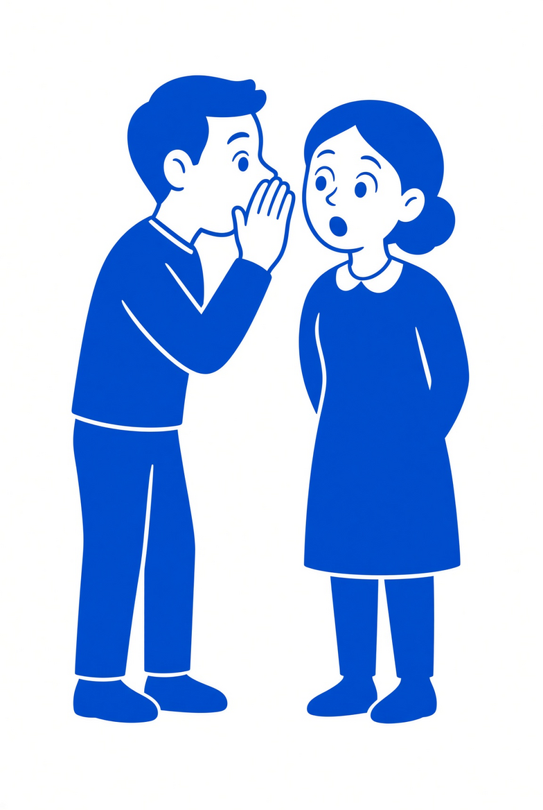
fluisteren
to whisper
regelmatigrang 8347Communication & languagegetekend
- Scene
- one adult cups a hand beside the mouth and leans close to a second adult's ear; the listener's eyes widen. Nothing else in the picture. The two stand side by side, the speaker's shoulder turned in, the listener's head tilted towards the hand.
- Must read
- a hand cupped between a mouth and a nearby ear.
- Avoid
- cupped hands calling across a street (roepen); two people facing each other and talking (praten); lips on a cheek (zoenen); a finger on the lips.
- Alt text
- Iemand houdt een hand bij de mond en buigt dicht naar het oor van een ander.
- Example
- In de bibliotheek moet je zachtjes fluisteren.
In the library you have to whisper quietly.
fluisteren.png · rang 8347 · B1 regelmatig · lexicon woorden.tsv
geen beeld
verbeelden
to imagine
regelmatigrang 8409Thought & knowledge
- Scene
- one adult sits in a chair with closed eyes and a faint smile; above the head is one thought cloud drawn as a convention, showing a single palm tree on a beach.
- Must read
- a thought cloud with a palm tree above a seated adult with closed eyes.
- Avoid
- a person asleep in a bed with a cloud above (dromen); a person with a hand on the chin (denken); a person looking at a photo of an old memory (zich herinneren); a person asleep in a chair (slapen).
- Alt text
- Iemand zit met gesloten ogen in een stoel; in een wolkje boven het hoofd staat een palmboom op een strand.
- Example
- Ik verbeeld me dat ik op een strand lig.
I imagine that I am lying on a beach.
verbeelden.png · rang 8409 · B1 regelmatig · lexicon woorden.tsv
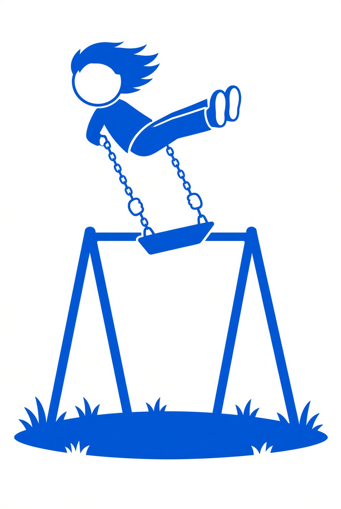
schommelen
to swing (on a swing)
regelmatigrang 8438Movement & positiongetekend
- Scene
- one child sits on a playground swing at the top of its forward arc, legs stretched out straight, both hands gripping the two chains and the hair blown back; the swing frame stands on grass. Nobody else is in the picture: no second swing and nobody waiting.
- Must read
- a child on a swing at the high point of its arc, legs out straight.
- Avoid
- two children both holding one swing seat (vechten om); a seesaw with one child up and one down (wippen); a child halfway down a slide (glijden); a person hanging on a rope against a wall (klimmen).
- Alt text
- Een kind zit op een plankje aan twee kettingen, hoog naar voren, met gestrekte benen.
- Example
- De kinderen schommelen op de speelplaats tot het donker wordt.
The children swing on the playground until it gets dark.
schommelen.png · rang 8438 · B1 regelmatig · lexicon woorden.tsv
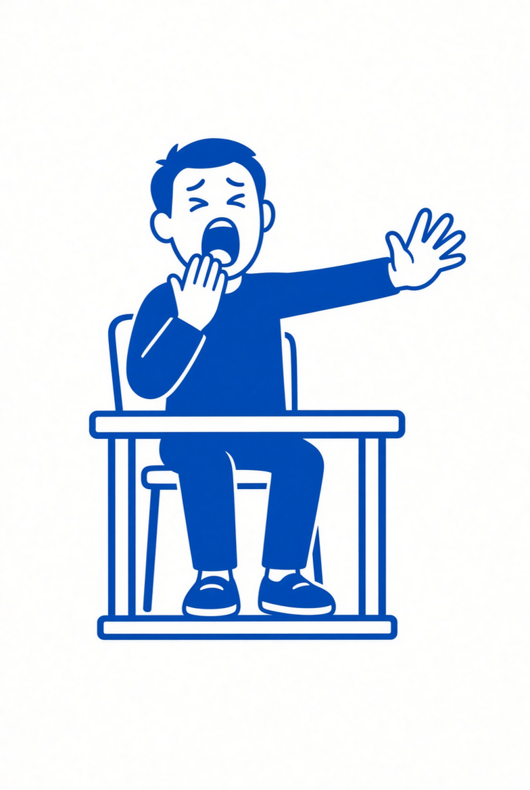
gapen
to yawn
regelmatigrang 8529Body & healthgetekend
- Scene
- one adult sits at a desk with the mouth stretched wide open and the eyes squeezed shut, one hand half over the mouth and the other arm stretched out sideways.
- Must read
- a wide-open mouth with the eyes shut and a hand half over it.
- Avoid
- a person laughing with the head back (lachen); a person asleep at a desk (slapen); arms thrown up in a V (winnen); cupped hands round the mouth (roepen).
- Alt text
- Iemand aan een bureau heeft de mond wijd open en de ogen dicht, met een hand half voor de mond.
- Example
- Hij gaapt de hele vergadering, want hij heeft slecht geslapen.
He yawns throughout the meeting because he slept badly.
gapen.png · rang 8529 · B1 regelmatig · lexicon woorden.tsv
geen beeld
beklagen
to pity, to complain
regelmatigrang 8848Law & conflict
- Scene
- One adult stands at a shop counter holding up a broken toaster with a snapped lever. The assistant behind the counter spreads both palms open and tilts the head. A till stands on the counter between them, and there are no other customers in the frame.
- Must read
- a broken appliance held up at a counter before an assistant with open palms.
- Avoid
- a person paying at a till (betalen); a person buying a toaster (kopen); two people chatting (praten); a person returning a bag (terugbrengen).
- Alt text
- Iemand houdt een kapot broodrooster omhoog tegenover een medewerker achter een toonbank die de handpalmen opent.
- Example
- Ik beklaag me bij de manager.
I complain to the manager.
beklagen.png · rang 8848 · B1 regelmatig · lexicon woorden.tsv